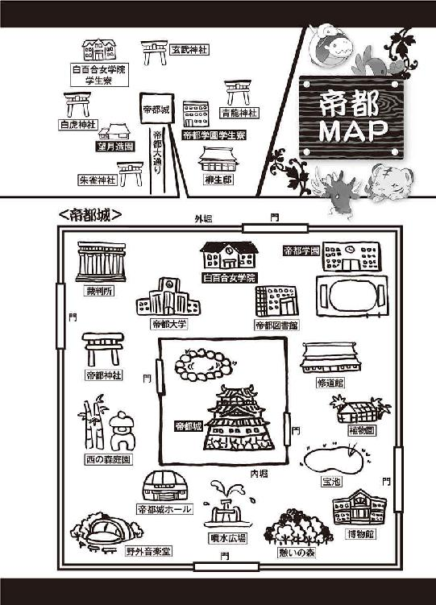
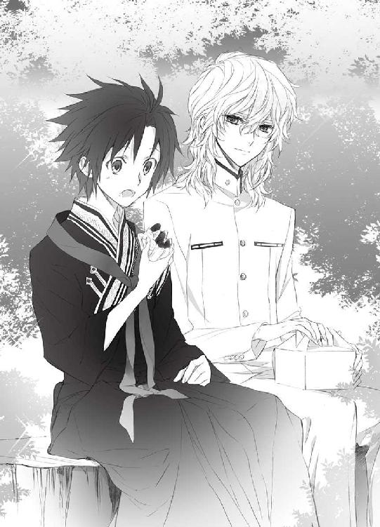
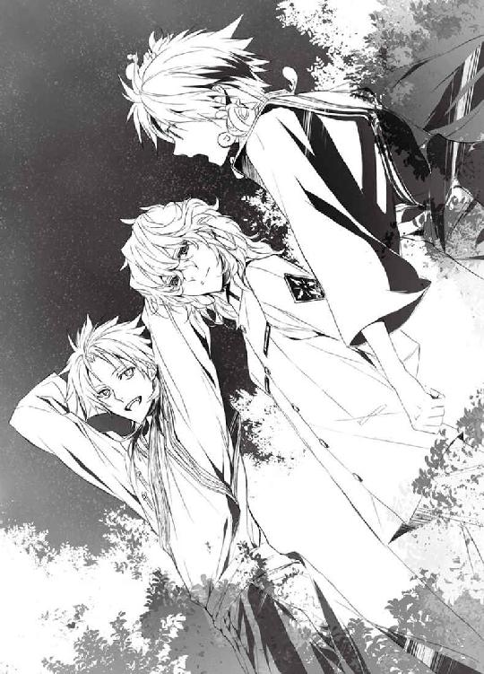
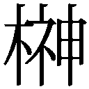

| お庭番望月蒼司朗参る!7 御前試合と美味しいご褒美 (ビーズログ文庫アリス) | |
| 流 星香 & 榊 空也 | |
| エンターブレイン (2011) | |
お庭番望月蒼司朗参る！
御前試合と美味しいご褒美
流星香

電子版 ビーズログ文庫
本作品の全部または一部を無断で複製、転載、配信、送信すること、あるいはウェブサイトへの転載等を禁止します。また、本作品の内容を無断で改変、改ざん等を行うことも禁止します。
本作品購入時にご承諾いただいた規約により、有償・無償にかかわらず本作品を第三者に譲渡することはできません。
本作品を示すサムネイルなどのイメージ画像は、再ダウンロード時に予告なく変更される場合があります。
本作品の内容は、底本発行時の取材・執筆内容にもとづきます。
本作品は縦書きでレイアウトされています。
また、ご覧になるリーディングシステムにより、表示の差が認められることがあります。

１
首都帝都、華やかなる中心地、帝都城下は四方を壁で囲まれた、強固な結界領域である。
ここは一流と呼ばれる様々なものが集まる場所であり、第一人者や師範として認められる者が大勢いる。注目を浴びることの多い一流の人間には、格のあるものこそが相応しい。
帝都ではオーダーメイドはもちろん、レディメイドであっても、誰もが羨む本物志向の高級品を手に入れることができる。そして質のいいものは、当然お値段も相応である。
だが年に数度、良質なものをお買い得に入手できる機会がある。
「今年は、蒼ちゃんと清くんのコート、お父さんの肌着、わたしのハンドバッグ。そして可愛い四神様のお菓子......！」
朝刊に入っていたチラシを隅々までチェックし、望月造園の金庫番、蒼司朗の伯母・望月梢は、メモを片手に拳を握る。
「ひとつも逃せないわっ！」
気合いの漲る梢の大声に、顔を洗って茶の間に入った蒼司朗は圧倒されて腰が退け、蒼司朗にくっついているピヨ四神も、怯えて顔を引っこめる。
「......お、はようございます」
「おう」
伯父の左近は広げた新聞から目を離すことなく、蒼司朗に朝の挨拶を返し、ゆっくりと熱い茶を啜った。
「おはようございます」
身支度を整えてきた清志朗が茶の間に入ってきて、全員集合だ。
「母さん、朝ご飯にしよう？」
清志朗に声をかけられ、鼻息も荒くチラシを凝視していた梢は、はっと顔を上げる。
「あらあらあら、おはよう。朝ご飯にしましょうね」
おほほと誤魔化すように笑い、チラシとメモを大事に横に退けた梢は、炊きたてのほかほかご飯と、いつもより具が多く、汁の少ない味噌汁を、手早く皆に渡す。卓に並べてあったおかずは、焼き魚と煮物と焼き海苔だ。ピヨ四神にご飯を食べさせる蒼司朗の前には、人肌に温めたミルクも置かれている。
本日の朝食の指定時間は六時半。
「────今日、何かあるの？」
ピヨ四神を膝に乗せ、食事を始めた蒼司朗は、首を傾げる。
（うちの仕事始めは、明日からだよな）
正月三箇日は終わったばかり。まだまだ帝都はお屠蘇気分で、あちこちのんびりしている。
尋ねた蒼司朗に、梢はキラリと目を光らせた。
「今日は『初荷』よ！」
「は？」
きっぱりと宣言されて、蒼司朗はきょとんと目を瞬く。
「帝都百貨店の『福袋』の日なの！ 開店と同時に入店するのが勝負の秘訣よ！ 今年は目玉商品揃いよ！ 必ずお買い物してちょうだい！」
握った箸の先を、びしっと突きつけられ、蒼司朗は思わず身を引く。
「は、はい......！」
「母さん、ひとを箸で指さない！」
お行儀が悪いと清志朗に注意され、失敗しちゃったと梢は肩を竦めて舌を出す。
圧倒されている蒼司朗に、清志朗は微笑む。
「帝都百貨店の『初荷』の福袋は、定価の半額以下になっている、超お買い得品の詰め合わせ袋ばかりなんだ。各売り場とも、限定数が少ないから、毎年すごい争奪戦なんだよ」
「へぇー」
「清ちゃんは、男性衣料品の福袋、今年は蒼ちゃんの分も含めて、ＳＭＬ各サイズをお願いね。蒼ちゃんは四神様と、食料品売り場の福袋を見てきてちょうだい。予算の範囲なら、いくつ買ってきてもいいわ。お母さんは、婦人物の階でお買い物するわね。お買い物が終わったあとの集合場所は、いつもの通り、お父さんのところよ！」
（伯父さんが『集合場所』？）
人間を集合場所に指定され、怪訝な顔をしている蒼司朗に、清志朗は苦笑する。
「四階文具売り場の休憩所。そこで父さんは煙草を吸いながら荷物番をしてくれるんだ」
「大荷物抱えてちゃ、動きにくいでしょ！」
荷物を預けて、何度も買い物する気の梢は、ふんと鼻息荒く拳を握る。
「伯父さんは、買い物しないんですか？」
尋ねた蒼司朗に、左近は新聞片手に食事しながら答える。
「────俺ぁ別に欲しいものはねぇからな」
帝都城お抱え庭師、望月造園の親方・望月左近は、職人気質で、仕事に必要な作業着と道具さえあればいい。愛用の煙管も、祖父から譲られた年代物だ。衣類などの身の回りのものに対して、まったく頓着しない。
「もう！ お父さんたら、またそんなこと言って！」
ぷうと梢は頰を膨らませる。
「もう少し、『見られている』っていう自覚を持ってくださらないと！」
「見られて恥ずかしい仕事ぁしてねぇぞ」
むっとする左近を、梢は睨み返す。
「帝都一の庭師が見られてるのは、仕事だけじゃないんです！」
揃いの法被の下に着ているシャツや肌着まで、チェックされているものなのだ。
「お父さんの恥は、清くんや蒼ちゃんの恥、そして望月造園の庭師全員の恥、お抱え庭師にしてくださっている帝陛下の恥、帝都の恥なんですよ！」
規模がどんどん大きくなって、左近は気圧され、蒼司朗は梢の剣幕に驚く。蒼司朗の膝の上でご飯をむにむにと食べていたピヨ四神は、きょろんと首を傾げた。清志朗は苦笑する。
「五年ぐらい前、父さんが穴の空いたシャツで仕事してたときに、帝都日報の街頭写真に写りこんでたことがあったんだ。それは地方版で、帝都限定の紙面だったんだけどね」
「......ちょっとくらい穴が空いてようが、まだ十分着られる服じゃねぇか」
「家の中で着るのはかまいません。だけど、外に出るときには、絶対に駄目です！」
梢は断固として言いきり、一歩も譲る様子はなかった。左近は渋い顔で、味噌汁を啜る。
「ということで、あれ以来、福袋を買いに行くのはうちの年始行事のひとつになったんだ」
「へー」
清志朗の解説に、蒼司朗はなるほどと納得する。
帝都一の庭師の親方は、全国の庭師の憧れであり、尊敬の対象だ。憧れの人物に相応しい、品質のいいものを、ぜひ着ていてもらいたい。しかし、品質のいいものをお安くお買い得に手に入れたいのも本音だ。
個数限定の商品で、争奪戦は必至だが、福袋はまさに理想的な買い物なのである。
「さ、早く朝ご飯をすませて、帝都百貨店に行きましょう」
梢はいそいそと箸を動かす。
蒼司朗は考える。
食べ終わって、すぐに家を出たなら、帝都百貨店に着くのは七時頃だ。
「────帝都百貨店って、そんなに早くから開いてるんだ」
さすが帝都と感心する蒼司朗に、清志朗は言う。
「開店時間は十一時だよ」
「は？」
「並んで待つんでぇ......！」
左近の言葉に、この寒空の下で、と蒼司朗は続けて聞こえた気がした。
マフラーもぐるぐると巻いて、ばっちり防寒対策をして出かけた帝都百貨店は、すでに五十人ぐらいが並んでいた。
「皆、早いなぁ......！」
「これからまだまだ増えるよ」
驚く蒼司朗に、くすっと清志朗は笑う。
「ミギャ？」
「チュピ」
「キュウ」
「「（しゅー）」」
蒼司朗が足を止めたので、目的地に着いたらしいと、蒼司朗にくっついてぬくぬくしていたピヨ四神も、顔を出して、きょろきょろと周りを見回す。
しかし、開店前の帝都百貨店付近は閑散としていて、見えるのは並んでいる人たちだけだ。つまらないので、ピヨ四神たちはすぐに温かいところへ引っこんだ。
「帝都の生活にもだいぶ慣れたみたいだけど、蒼くん、今年の目標、もう決めた？」
清志朗に尋ねられ、蒼司朗はうーんと唸って考える。
「今年の、っていうか、オレ、目標だらけだからなぁ......」
高校生としての学生生活、見習い庭師の分際で任された奥庭と奥庭の四神様のこと、神官の資格を取ること。すべてまだ途中だ。考えて、蒼司朗は思わず遠い目をする。
「できることから順番に、ひとつずつ確実にクリアしていけばいいよ。蒼くんなら、大丈夫だよ。僕に手伝えることがあったら、何でも遠慮なく言ってね、蒼くん」
「うん。ありがとう、清ちゃん」
吹き抜ける風は冷たかったが、蒼司朗はほっこりと胸の奥から温かくなるのを感じた。
四時間並んで、ようやく開店時間になった。
「蒼、枝打ち斧貸しな。預かっててやるからよ」
「あ、はい。すみません」
蒼司朗は、大事に持っていた愛用の枝打ち斧を左近に渡す。亡くなった両親から蒼司朗が最後にもらった誕生日プレゼントの、大切な枝打ち斧だが、作業道具の大切さをよくわかっている伯父になら、誰より安心して渡せる。
「お願いします。買い物終わらせて、すぐ行きますから」
「まぁ、何だ、がんばってこいや」
開かれた扉に向かって突進していく人波の中で、左近は温い笑みを浮かべ、蒼司朗を激励した。
「じゃあ、がんばって！ 蒼ちゃん清くん！」
梢は八階の催事場、左近は四階の文具売り場、清志朗は三階の紳士服売り場、蒼司朗は地下食料品売り場。入店した四人は、それぞれの受け持ち場所に分かれる。
「館内は走らないでくださいませー！」
百貨店の店員が大きな声で呼びかけているが、お買い得な目玉商品である福袋のために来店した客たちは、目当ての場所に我先にと向かう。
（すげー......）
誓文払いや赤札市は、巌手にいた頃に蒼司朗も何度か母親に連れられて行ったことがあるが、こんなに殺気立ってはいなかった気がする。
「ミギュ」
ぽちっと小さな前肢でタッチされ、雰囲気に吞まれていた蒼司朗は我に返る。
「あぁ、うん。福袋、買わないとな」
蒼司朗のお買い物は、ピヨ四神様用のお菓子。
（柔らかい、饅頭の類とかかな）
食べやすくて美味しいものを。
「バームクーヘン福袋、限定五十個ですー！」
「餡本舗福袋、限定三十個、ただ今より販売いたしますーっ！」
「豆大福の吉祥、福福大福福袋、限定数二十個ですー！」
「マドレーヌフィナンシェ焼き菓子福袋は、こちらにお並びくださいー！」
「干支どら焼入り福袋はこちらですー！」
「お年始羊羹福袋、販売いたしますー！」
菓子売り場に近い階段を下りた蒼司朗は、別の入り口から入店した来客が押し寄せ、すでに大賑わいの食料品売り場に目を丸くした。
からんからんからん♪
「あられ得々福袋、完売いたしましたー！」
「えっ!?」
ベルを鳴らしての完売宣言に、蒼司朗はびっくりする。
「開店してから、まだ五分も経ってないのに！」
「ピッチュチュピッピ！」
ごそごそっと蒼司朗の髪の間から出たチビ朱雀は、蒼司朗の耳を手羽で叩いて合図する。
「向こう？」
「マシュマロ福袋、ご用意できましたー！」
ショーケースの前に立った売り子のお姉さんの声に、さぁっと行列ができた。
（うわ！）
急いで並ばないと、買いそびれる。
「キュイキュイッキュオー！」
突撃ーとチビ青龍に急かされて、蒼司朗は慌てて行列に並ぶ。
「ただ今ご用意できました分は、限定数三十個となっておりまーす！」
（うん、これなら......）
三十人よりずっと前に並べた蒼司朗は、ほっとひと息ついた。
「────三つください」
「二つお願いします」
前の客がまとめて複数個買っていく様子に、蒼司朗はぎょっとする。
（そうか、一人一個じゃないんだ......！）
一人一個と制限を設けているものもあるが、そうでないものもある。
やきもきどきどきして順番を待っていた蒼司朗は、何とかひとつ、マシュマロ福袋を買うことができた。蒼司朗の後ろにいた三人で完売したので、ぎりぎりだ。少し待てば、また福袋を準備してもらえるのかもしれないが、買えないとわかった客は、さぁっと別の場所に散る。
「「（しゃーしゃー！）」」
「あっち？」
「ミギャギャギャ！」
「あれ？」
蒼司朗はピヨ四神に急かされながら、買い物した福袋を抱え、売り場を走り回る。
気温は低いが、日持ちがするかどうかも考慮して、蒼司朗は梢に渡された予算内で五つの福袋を買って、よれよれになりながら、四階に向かった。
「────お疲れさん」
煙管片手に休憩所のベンチにいた左近は、数十分で一気に窶れた様子でやってきた蒼司朗に、苦笑した。
ベンチには、左近と同じように荷物番をさせられている男性客が、何人もいた。毎年恒例のことなので、荷物番の客たちはすっかり顔馴染みになっているらしく、左近から甥っ子だと紹介され、蒼司朗は周りの客に会釈した。
大きく脚を開いて座っていた左近に、場所を少し譲ってもらって、蒼司朗はベンチに腰を下ろす。
「伯母さんと清ちゃんは......」
「あいつらは、また出てったよ」
左近の足元には、見覚えのあるハンカチで持ち手をまとめて結んだ、数個の福袋が置かれている。
（あぁ、なるほど。こうして見分けるのか）
どの客も、同じようなショッピングバッグに入った福袋を持っている。ちょっと置いたりしたときに、他人の買い物した袋に紛れて見失わないように、自分なりの印をつけてわかりやすくしているのだ。
（オレも）
「ミギュ」
ハンカチを取り出そうとした蒼司朗を、チビ白虎が止める。
「ん？」
「チュチュピ」
「キュオ」
「「（しゅー）」」
よく見てと言わんばかりに促されて、福袋を見ると、蒼司朗の持っているものには『ピヨ四神様マーキング』手形足形が、がっつりついていた。
「────いつの間に......☆」
それはピヨ四神の加護を受ける蒼司朗や、帝と若様、神官のような霊力のある者にしか見えないが、間違えて持って行ったら、天罰が下りそうだ。
「もうちっとかかるだろうから、蒼も荷物置いて座っとけ」
「うん」
「あっちでアイス売ってっぞ。食うか」
「そうだね。中は暑くて、喉渇いちゃったよ」
「吹きっさらしで長時間順番待ちすっから、水っ気、制限されてたしな」
「あー、あの具の多い味噌汁、やっぱりそういうことだったんだ」
なるほどと納得して笑うと、蒼司朗はベンチに荷物を置き、預けていた枝打ち斧を受け取って、休憩所の横に特設されていた売店に向かう。
アイスと聞いて、蒼司朗にくっついていたピヨ四神は、ぴこっと顔を覗かせた。
ソフトクリームは、三種類。
「バニラとチョコとストロベリーか。どれにする？ っと、チョコは却下ね」
蒼司朗はチョコレートも好きだが、チョコレートには興奮剤の成分が含まれるので、赤ちゃんサイズであるピヨ四神には、食べさせないほうがいい。
「ミギャギャ」
「チュピ」
「キュイ」
「「（しゅー）」」
お品書きの前にでも並ぶように、蒼司朗にくっついていたピヨ四神は、さぁっと二手に分かれる。
チビ白虎とチビ朱雀はストロベリー、チビ青龍とチビ玄武はバニラをご所望のようだ。
「バニラとストロベリー？ 意見分かれたなぁ」
二種類言えば、両方食べられるかもしれない。両方食べたいという、食いしん坊の欲望だ。
「二つは多いから、買わないよ」
四匹でかかっても、ソフトクリームひとつは多いし、蒼司朗はひとつしか食べられない。買うソフトクリームはひとつだけだ。
「ミギュギュゥ......」
「チュピー」
「キュー」
「「（しゃー）」」
難しい顔をして考える様子のピヨ四神だったが。
「あれ？」
売り場に飾ってある写真を、蒼司朗はよーく見る。
ソフトクリームには、半々のツートンカラーになったものもあった。白とピンクの二色がツイストしているものなら、バニラとストロベリーを一度に味わえる。
「......食いしん坊は、お前らだけじゃなかったみたいだな」
問題解決だ。
これならいいなと、売店の前に立とうとした蒼司朗は────。
「ピ！」
「え？」
頭上でのチビ朱雀の警報鳴きに、はっと振り返る。
振り向いた先に見えたのは、数個の福袋を持って休憩所を立ち去ろうとしている、ハンチング帽に黒縁の眼鏡、厚手のマフラーを巻いて、マスクをつけた男性客。風邪の流行る冬場だし、大勢の人間でごった返す初売りの百貨店は、埃っぽいので、そういう格好の客でもまったくおかしくはないのだが。
（顔を隠してる）
蒼司朗には、そう見えた。
足早に移動する客は大勢いるが、あの男性客だけが、違って見える。
雰囲気の違い、だろうか。
「あの人、だな......！」
「ピ！」
「ギュコココ！」
「キュオー！」
「「（しゃーしゃー！）」」
間違いナシと、ピヨ四神が断言するので、蒼司朗は枝打ち斧片手に、来店者にぶつからないよう、人ごみを縫うように走る。
「（お庭番、望月蒼司朗────、参る！）」
売店の手前まで来ていた蒼司朗は、四階フロアを出ようとしている男性客よりも、階段に近い位置にいた。
刃に袋を被せている枝打ち斧をくるりと返し、蒼司朗は刃が下になるよう逆に握り直す。今日はこの柄の先にも、布を巻き、間違って当たっても痛くないよう細工している。
ひたと男性客を見つめた蒼司朗は、ポケットから取り出したハンカチを広げて放り、それを枝打ち斧の柄の先で突き飛ばす。
行き交う人々の間に隙間ができた、ほんの一瞬のこと。
ひらりと舞ったハンカチは────。
背後を気にしながら足早に歩いていた男性客の顔に、ふわりぺたりと張りついた。
「うわっ！」
突然、ハンカチに視界を遮られ、男性客が転倒する。
荷物で両手が塞がっていて、顔面からまともに転倒した男性客に驚き、その周囲から人が退いた。
店内は、がやがやと騒々しく混み合っていたが、そこだけぽっかり空間ができたようになる。
「皆さん！ お買い物された荷物はお手許に全部ありますか!?」
大きな声で尋ねた蒼司朗の言葉に、ぼんやりと荷物番をしていた客たちは、はっとした。
「......あれ？ ひとつ足りない......」
「袋がない！」
「────あ！ あれ、僕のだ！」
他の客の袋と間違わないように、印をつけた買い物袋を、転倒した男性客の近くで見つけ、休憩所のベンチにいた客が指を指す。
騒ぎはじめた客に、転んだ男は忌ま忌ましげに舌打ちし、急いで立ち上がる。来店客は多く、持っている袋はこの百貨店の買い物袋だ。人ごみに紛れれば、男は逃げられる。
「どうかしましたか!?」
休憩所から少し離れた売り場で、来客の整理をしていた警備員が、おかしな様子を感じて駆けつけてきた。
警備員の大声に、客が答える。
「泥棒らしいぞ」
「置き引きだ！」
「常習犯だろ、あんた」
三メートルほど離れた場所から、蒼司朗は置き引き犯を見つめる。
被っていた帽子や眼鏡を取ったり、リバーシブル仕様の上着を裏返したりすれば、目印にしていたものはなくなる。その男性客────置き引き犯の格好は、見れば見るほど怪しい。
置き引き犯は目の前に立ちはだかった、中学生のように小柄な少年を睨む。
「退けぇ！」
見るからに体格の違う相手なら、体当たりで吹っ飛ばせる。
盗んだ荷物を拾い集めて突進してくる置き引き犯に、蒼司朗は枝打ち斧を逆に持ったまま構えた。刃はいらない。柄だけで、十分だ。
身体は同学年の少年たちの中で最も小さくても、望月蒼司朗は全国中学生剣道、巌手圏大会の優勝者である。
「やぁっ！」
ウエイト差を感じさせない綺麗な突きが、分厚いマフラーを巻いて突進してきた置き引き犯の喉に決まった。
「......ぐぅっ......」
白目を剝いて、置き引き犯はその場にくずおれ、荷物を盗られた数人の客と、百貨店の警備員に取り囲まれた。
２
混雑した場所では、どうしても掏摸や置き引きという犯罪が頻発する。帝都百貨店という有名店舗で、福袋の販売という年に一度のお買い得イベントの日ともなれば、客の財布に入っている金額は大きいし、手に入れた福袋もお値打ち品だ。
蒼司朗が突きで沈めた置き引きの窃盗犯は、駆けつけた警備員にすぐさま押さえられ、警備室に連れて行かれた。盗まれた商品はすべて無事に、正しい持ち主の手に戻ったようだ。
お手柄の蒼司朗だが、置き引き犯を倒したと知れると、警備員にくわしく事情を説明しなければならなくなる。
行き交う人々の邪魔にならないよう、気をつけて枝打ち斧を持っていた蒼司朗は、少し面倒だなと身構えたが、突きで吹っ飛ぶ男を近くで目撃していたはずの客も、警備員も誰一人として、蒼司朗に注意を向けなかった。
「────お前たちか」
「ミギュ」
自慢げにピヨ四神はキラキラと目を輝かせる。
早くソフトクリームを食べたかったピヨ四神は、蒼司朗が煩わされることがないよう、さっくりと周りの者たちの意識を操作したようだ。
姿は小さくても、ピヨ四神は帝都城を守る、霊験あらたかな神様なのだから、人間の意識や記憶を弄るのは、造作もないことだとわかっているけれど。
「見てなかったことにしたり、気づかなかったことにしたり、人の考えを変えさせるのって、あんまりよくないんだぞ？ わかるか？ お前たちは、早くソフトクリームが食べたかったり、オレのためを思ってやってくれたのかもしれないけどさ」
些細なことであっても、人の意識に度々干渉することは、よろしくないと蒼司朗は思う。
「いいことでも悪いことでも、自分がやったことには責任を持たなきゃいけないんだ。今のは、オレがちょっとでも面倒くさいなって思ったのがよくなかった。他の人の頭の中を触るの、今度から、やめような？ オレの言うことがちゃんとわかったら、ソフトクリーム買いに行こう」
「ミギャギャ！」
すぐさま元気よく返事して鳴いたチビ白虎に、蒼司朗は首を横に振る。
「駄目。噓ついてもわかるんだよ。悪い子は、ソフトクリームを食べたら、お腹痛くなるよ？」
「────ミギュ」
怖いことは聞きたくないとばかりに、チビ白虎の耳が、きゅーとゆっくり後ろを向く。
「できるからって、都合よく人の意識を動かしちゃいけない」
「ギュココ」
「キュウ」
「チュピ」
「「（しゅー）」」
いけないことをして叱られているのだとわかって、ピヨ四神の耳や尾の先が、しゅーんと下を向いた。ちっちゃい身体をさらに小さくして反省するピヨ四神に、蒼司朗は優しく微笑む。
「うん。いい子だね」
しっかり言い聞かせて、蒼司朗はソフトクリームの売り場に向かう。
「買い物した荷物、全部ちゃんと持ち主の手に戻ってよかったな。オレたちも家に帰ったら、買ったものの袋を開けて、こういうの買ったって、伯母さんたちに見せよう。美味しいお菓子は、皆で一緒に食べたほうがもっと美味しいから、皆で仲良く分けて食べような」
「ミギャギャ」
「キュイキュオ」
「ピピッチュ」
「「（しゅー）」」
はしゃぐピヨ四神を、蒼司朗はちょいちょいと指で順番に可愛がった。
バニラとストロベリーのソフトクリームを買って、ベンチに戻った蒼司朗に、伯父の左近は苦笑した。その表情だけで、置き引き犯を懲らしめるところを見られていたのだと、蒼司朗はわかる。左近はソフトクリームを買いに移動する蒼司朗を、目で追っていたのだろう。
「こんな混雑する場所に、このガキゃ、よくも後生大事に枝打ち斧なんざ持ってきやがったと思ったんだが。蒼、オメーにゃ、いつでも必要なモンみてぇだな」
大事なものだから片時も肌身離さず持ち歩くというのは、理屈ではわかるが、買い物をするという目的を考えれば賛成できない。
だがどれだけ言い聞かせて、従わせたところで、本人が納得していなければ、不満や悔いが残る。それがわかっていたから、あえて左近は意見せず、蒼司朗が枝打ち斧を持って出かけるのを止めなかった。
枝打ち斧を持つことに対して蒼司朗が依怙地になっていないのは、左近に枝打ち斧を預けて買い物に向かったことから、よくわかる。
枝打ち斧は仕事道具なので、仕事に関係のないこういう場所には、持ってこないほうがいい。持て余したり困ったりしながら、蒼司朗が自分できちんと学習して、判断できるようになればいいと、左近は考えたのだ。
しかし、蒼司朗は庭師見習いであると同時に、『奥庭のお庭番』だ。人が大勢いる場所だからこそ、悪い人も紛れている。
身分を隠して諸国を漫遊する偉い人のように、ちびっちゃい姿になって蒼司朗と一緒に帝都で生活している四神様は、悪事を見逃さない。ちびっちゃい四神様に成り代わり、蒼司朗が悪人を懲らしめるには、何か武器になるものが必要不可欠だ。
（なりの小せぇコイツは、腹の底まで真っ黒な凶悪犯にとっちゃ、取るに足らねぇガキだ）
対峙することで、犯罪者の心根がわかる。
目障りな障害物を押し退けるように、躊躇なく暴力を加えようとするか、理不尽な暴力を加えることに躊躇いや戸惑いを見せるか。露顕した悪事に、良心の呵責を覚えるのか。
「使い方が違う、って、叱られると思ってた」
ベンチに腰を下ろした蒼司朗は、ベンチ横の観葉植物と、荷物で隠すようにして、膝の上に集めたピヨ四神に木の匙でソフトクリームを食べさせる。
視線を落とし、思いを吐露した蒼司朗に、左近は驚く。
「蒼......」
「オレは一流の庭師になりたいのに、その大切な道具を、木の手入れ以外のことに使ってさ。庭師の神様が見てたら、って考えると怖いよ」
（コイツ、一人前に、そんなこと考えてやがったのかよ）
若さや幼さは、時に免罪符として用いられる。無知や無礼無謀さも『子供だから』という理由で容赦される。大人のように罰せられないとわかっていて行動する、賢しい子供も多い。
左近の目には、物怖じすることなく、堂々と大胆な行動をとっている蒼司朗は、同じ年頃の子供よりも小さな体格であることを、有利に使っているように見えていた。だがどうやらそれは、誤解だったようだ。
思いは返される。
敬い、大切に思う気持ちを忘れない者は、きっと同じように大事にされる。
いつ何をするときにも、人一倍の努力を怠らない蒼司朗を、誰が悪く言うだろう。
恥じるような少年ではないから、奥庭の可愛い四神様は蒼司朗に懐いているのだ。
「────神様同士で何とかしてもらやいいんじゃねぇか？ なぁ？」
左近に視線を向けられ、蒼司朗の膝の上でソフトクリームを美味しく舐めていたピヨ四神は、円らな瞳で見上げ、くりっと首を傾げる。
ピヨ四神に匙で取り分けながら、自分もソフトクリームを食べる蒼司朗の頭に左近は手を置き、乱暴に撫でる。
「道具にこだわって、蒼ができることをやめちまうのは、俺ぁやだぜ？ 蒼は使ってる道具を大事にしてねぇわけじゃねぇだろ。もしも壊れちまってもよ、蒼が正しいと思ったことをして、誰かを助けられたのなら、右近たちは誇りに思うだけで、悲しんだり怒ったりはしねぇよ。壊れたときにゃ、俺がもっともっと上等の、丈夫な枝打ち斧をくれてやらぁ！」
驚いたように見つめる蒼司朗に、にっと左近は笑う。
「しっかり手入れした道具、いくつも使い潰すのも、職人よ。いつだって、お天道様が見ててくれらぁ。心置きなくやりな」
────お天道様にまっすぐ顔向けできる、立派な人間になりな。
亡くなった父・望月右近の声が聞こえたような気がして、蒼司朗は胸を熱くする。
「......うん！」
蒼司朗は曇りなく澄んだ空の色を、名前にもらった。
「ミギュギュ」
「キュウ」
「ピピチュ」
「「（しゅー）」」
にこっと微笑んだ蒼司朗を見上げ、機嫌よくピヨ四神は鳴いた。
ご機嫌でソフトクリームを食べていたピヨ四神に視線を落とした蒼司朗は、口許をベタベタにしている姿に苦笑する。
「あぁもう、仕方ないなぁ」
ピヨ四神用の綺麗なハンカチを取り出した蒼司朗は、ピヨ四神の口許を順番にそっと拭う。お腹を触って確認したが、まだ冷たくはなっていないようだ。
「もうちょっと食べる？」
「ミギュン」
「キュイ」
「チュン」
「「（しゅー）」」
キラキラッと目を輝かせたピヨ四神に、蒼司朗はソフトクリームを匙で掬って差し出した。
買い物を終わらせた清志朗はそれから二十分後に、梢は四十分後に戻ってきた。
「皆、お待たせー」
ソフトクリームも食べ終わり、待ちくたびれて蒼司朗の膝の上で折り重なるようにして眠っていたピヨ四神は、賑やかな梢の声に、ぱちっと目を開ける。
「さぁ、帰りましょうね」
激戦のあとらしく、ほかほかと血色のいい顔で満足そうに笑った梢は、持っていた買い物袋を左近にすべて渡した。
「伯母さん？」
「食料品売り場で、お昼のおかず買ってくるわ。皆、忘れ物しないように、先に帰っててね」
「遅くなるんじゃねぇぞ」
「はーい」
ばいばいと手を振る梢と別れ、荷物を持った蒼司朗たちは、ひと足先に家に帰る。
「......本当に、買い物に来ただけなんだ」
「前は上の大食堂でお昼ご飯を食べて帰ったんだけどね。うろうろしている間に買い物袋ひとつ、忘れて帰ったことがあってね」
家に帰ってから気がついて、清志朗は慌てて百貨店に戻ったのだが、客の誰かに持って帰られてしまったらしく、店員と一緒に探しても見つからなかった。もしも見つかったらと、清志朗は住所と名前を告げて帰ったが、結局間違い荷物としての届けはなかった。
なくしたものが、よりにもよって左近のために梢が狙った一押しの福袋だったため、悔しさも半端ではない。
それ以降、福袋を買った日は、買い物がすんだらまっすぐ帰宅することに決まったのである。ただ、お疲れ様の労いがないのは、ちょっと寂しいので、百貨店の地下食料品売り場でお惣菜を買っての、ご馳走なのだ。
「心置きなく荷解きもできるし、いいんじゃねぇか？」
福袋で今年分の衣類を仕入れた左近は、大荷物にひと言の文句も言わず、家路を歩いた。
戦利品を抱え、帰宅した蒼司朗たちが、荷物を置いてひと息ついた頃、梢が帰宅した。ちょうどいい時間になっていたので、揚げたてのクリームコロッケやスコッチエッグ、ローストビーフとサラダの包みを開いて、味噌汁と白ご飯で昼食だ。今朝と違い、今度は水分の摂取を気にしなくていいので、味噌汁の具と汁は、いつもの割合に戻っている。
「お節料理もいいけど、こういうのもいいわよねぇ」
お正月料理に少し飽きがきていたところなので、洋食メニューは嬉しい。望月家はどちらかというと和食中心なので、洋風のおかずが食卓に並ぶのは、特別な日だけだ。
「ミギュギュ」
「え？ 食べるの？」
座敷に下ろしていたチビ白虎に代表して前肢タッチされ、期待に満ちたピヨ四神の視線を浴びた蒼司朗は、食卓をチェックする。
（お肉は......まだ早いよな。スコッチエッグの中には、ゆで卵が入ってるけど。コロッケも、揚げ物は......どうだろ）
ピヨ四神にはまだ歯が生えていないので、しっかり嚙んで咀嚼の必要なものは消化できない。油脂の多いものも、消化不良の原因になりそうだ。
「今日は、帝都百貨店でソフトクリームも食べたよな？」
蒼司朗に見つめられ、ピヨ四神は円らな目を瞬く。
だめ？ ちょびっとでも、だめ？
じいっと見つめ合って、蒼司朗は根負けする。
「じゃあ、コロッケの中身を、ちょびっとだけな。味見るぐらいだぞ？ おやつも買ってるから、お昼ご飯、食べすぎないようにしような」
「ミギャギャ」
「キュイキュイ」
「チュピチュピ」
「「（しゅー）」」
言い聞かせる蒼司朗に、ピヨ四神は機嫌よくはしゃいだ。
「伯母さん、このコロッケって、中身何でできてるの？」
「クリームコロッケのホワイトソースは、小麦粉をバターで炒めて、牛乳で伸ばして作るのよ」
何となくそんな感じはしていたが、確認できて蒼司朗は安心する。
「ありがとう、伯母さん」
牛乳や小麦粉は問題ないが、バターはあまりとらないほうがいいだろう。
（本当に、舐めとって味を見るだけのほうがいいみたいだ）
蒼司朗は自分の皿のクリームコロッケを箸で割る。さっくりした衣から、柔らかい中身が、とろんとはみ出した。
「ミギャ！」
「キュイー」
「ピー」
「（（しゃーしゃー））」
料理をよく見ようと、蒼司朗の身体をよじ登ったピヨ四神が、とろんとはみ出たコロッケのクリームに目を輝かせ、歓声をあげる。
「味見だけ、だからな」
蒼司朗は小皿にクリームコロッケの中身を取り分け、ふーふーとよく吹き冷ましてから、膝に下りたピヨ四神の真ん中に置いた。
置くが早いか、わふっとピヨ四神が小皿に群がる。
「落ーちーつーけー！」
蒼司朗は言い聞かせるが、聞いちゃいない☆
ちょっと目新しい食べ物があると、ピヨ四神のお世話係である蒼司朗は、いつも何やらごそごそしている。この場でピヨ四神の姿が見えるのは、蒼司朗だけだが、ピヨ四神がどんな様子なのかは、蒼司朗を見ていれば想像がつく。
「蒼の神様ぁ、ちっけぇのに、よく食うな」
呆れるような感心するような、複雑な左近の口調に、清志朗は困る。
「父さん......」
詮索するのも、何か言うのも、神様に対してはとても失礼だ。
不用意な発言は控えたほうがいい。
窘めるように声を発した清志朗に構わず、梢はころころと笑う。
「あらあら、神様には、お供えがたくさん必要なんですよ？」
評判の神様であればあるほど、お供えも多くなる。ピヨ四神がたくさん食べるのは、力の証でもあり、とても喜ばしいことだ。
「お供えなら、いーっぱいありますからねー」
「ミギャギャ」
「キュオー」
「ピピッチュ」
「「（しゃー）」」
梢に返事して、ピヨ四神はご機嫌で鳴く。
霊力のない梢にピヨ四神の姿は見えず、鳴き声も聞こえないが、会話はきっちりと成り立っているようだった。
ピヨ四神が食欲旺盛でたくさん食べるのはいいのだが、消化不良を起こしては困る。
（ご馳走が多くなる時期だからな。お腹触って、きっちり様子見なきゃ）
いつまでもお腹がぽんぽんに張っているようなら、遊んで運動させなければならない。
温めたミルクを縁のある皿に入れ、空になったクリームコロッケの中身の小皿と交換した蒼司朗は、ピヨ四神をしっかり見ておこうと決めた。
今日、お年始の参拝客が少なくなる夜になってから、蒼司朗は帝都神社に行くよう、連絡を受けていた。
他の神官候補生の者は冬休みで修行はないのだが、蒼司朗は奥庭のお庭番であり、奥庭の四神様のお世話係なので、特別招集だ。
少し早めに望月造園を出た蒼司朗は、社務所の更衣室で神官装束に着替えてから、ピヨ四神を連れて奥庭に向かう。
「お話終わったら、迎えに行くからな。それまで、いい子にして待っててくれよな」
枝打ち斧を持ってピヨ四神を抱え、奥庭に向かって歩きながら、蒼司朗は小さな温もりを大事に可愛がる。優しく撫でられ、ピヨ四神は甘えた声で鳴いた。
そっと門扉を押し開いた奥庭には、ぼんやりと明かりが見えた。
（あれ？）
月明かりの反射ではなく、人工の光────。
雪洞を持って、若様が奥庭に入っていた。
少しだけラフに着崩したのか、若様は袴なしの着物と羽織にマフラー姿だった。年始の行事の息抜きに、ちょっと部屋から抜け出してきたという感じだ。
（色々大変なんだろうな）
若様には、蒼司朗の想像もできないような仕事がたくさんあるのに違いない。
まだまだ殺風景で、手入れしなくてはいけないところばかりだが、リフレッシュの場所に、奥庭を選んでくれたのが嬉しい。
「────こんばんは、若様」
「ミギャギャ！」
「キュイキュイ！」
「ピピッチュチュチュ！」
「「（しゃーしゃー！）」」
しゃがんだ蒼司朗の手から地面に下ろされたピヨ四神は、若様に向かって突進する。
声をかけられた若様は、振り向いてにこりと微笑む。
「四神様、望月蒼司朗、こんばんは」
よちよちもちもちころころと、一生懸命走り寄ってくるピヨ四神に、若様は雪洞の提げ棒を石灯籠の隙間に差しこみ、微笑んで腰を落とす。
しゃがんだ若様に、ピヨ四神は飛びついて甘えた。
小さな舌に舐められ、すりすりと身をすり寄せられ、若様はくすぐったくて笑う。
そっと掌で撫でたり、指でちょいちょいとくすぐったりして、ピヨ四神のそれぞれと挨拶を終えた若様は、蒼司朗に微笑む。
「今朝の帝都百貨店のことを聞いた。お手柄だったね」
思いがけず労われ、蒼司朗はびっくりする。
あの場ではピヨ四神がうまく誤魔化してくれたようだが、大きな効果のある術を使ったわけではないので、蒼司朗の関係者や霊力のある者は誤魔化せないし、事実は変わらない。
「お手柄なんて、そんな......！ オレはその四神様に教えてもらって、あの場でできることをしただけですから......！」
「毎年初売りの日を狙う常習犯の一人を捕まえることができたので、その背後にあった組織も突きとめられたそうだ」
芋づる式に、あれこれと。
若様の言葉に、蒼司朗はびっくりする。
「へぇ......。そうだったんですか」
突き一発で、たいした成果だ。
毎年被害に遭っていた帝都百貨店にとっては、蒼司朗の来店は、願ってもないことだった。
「帝都百貨店は、お礼に商品券を用意しているみたいだよ。今日は一味の逮捕で慌ただしかったようだから、明日には望月造園のほうに、帝都百貨店の者が行くのではないかな」
「は？」
蒼司朗は目を丸くする。
（お礼の商品券って......）
「いえいえいえ！ そんなのオレもらえませんから！ 奥庭のお庭番として、当たり前のことをしただけですし！」
帝都城を守る奥庭の四神様の前で、犯罪に手を染める不埒な者を野放しにしたなら、奥庭のお庭番として恥ずかしい。
「奥庭の四神様も、お礼をもらおうと考えて、悪い人を懲らしめてるわけじゃありません。そうだよな？」
にこっと蒼司朗に微笑みかけられ、若様に抱えられてご機嫌のピヨ四神は甘えた声で鳴く。
商品券そのものが何か、ピヨ四神はわかっていないのだと蒼司朗は思う。
「いいことをしたら、何か物をもらえるって、覚えさせないほうがいいと思います。オレはこの四神様に、形のあるお礼を欲しがる欲張りな神様になってほしくないんです」
大切なのは、幸せに喜ぶ人の笑顔や、感謝の気持ちだ。謝礼やお供えではない。
どんなお礼をしてくれるのか、それで人の願いを叶えたり、何かをする神様では、帝都城は守護できない。
きっぱり言いきる蒼司朗を見つめ、若様は微笑んで静かに頷く。
「わかった。それでは帝都百貨店には、僕のほうからうまく伝えておこう」
「お手数かけてすみません、お願いします」
若様を煩わせてしまうことに、蒼司朗は恐縮して頭を下げた。
「望月蒼司朗、置き引き犯を懲らしめたその調子で、試合もがんばって」
ふわりと微笑んだ若様は、何だかキラキラで眩しく、蒼司朗は幸せな気持ちになる。
「はい、ありがとうございます！」
元気よく返事をして、奥庭を出て行く若様をピヨ四神と一緒に見送って、蒼司朗は首を傾げる。
「────試合？」
「ミゴ？」
ピヨ四神も蒼司朗の足元で、きゅるっと首を傾げた。
３
連絡されていた時間より少し早めに入った帝都神社の本殿には、すでに何人もの神官が集まっていた。
年末から正月三箇日の帝都神社は、参拝客も多く、常より忙しい。しかしそれも終わった今、少しは余裕も出てきただろうかと思って、蒼司朗は楽な気分で挨拶して本殿に入ったのだが。
（......何か、殺気立ってないか？）
活気があるというのとは、少し違う感じがする。
「こんばんは、蒼司朗様」
「あ、こんばんは、鈴宮さん」
蒼司朗に近づいた鈴宮神官は、にこっと笑う。
「帝都百貨店のこと、聞きましたよ」
「......結構広まっちゃってるんですね」
さっき若様に会うまですっかり忘れていた蒼司朗は、気まずい気分で頭を搔く。
「たまたま、見つけたからです。放っておくわけにいかないでしょう？」
「それは、そうかもしれませんけど。喉への突き一発で倒したんですって？ さすがは『巌手のブルー・ムーン』！ すごいですね」
「今は全然稽古してない、駄目剣士です。突きは動きが小さいから、周りへの迷惑が一番少ないかなって思ったんですよ。剣道の試合みたいに、防具をしてる相手じゃありませんから、マフラーを狙いました。勢いよくこっちに向かってきたから、痛い思いをしたでしょうけど」
犯罪は許せないが、蒼司朗は盗った荷物を持ち主に返して、これ以上罪を重ねてほしくないので止めただけだ。捕まえるのも裁くのも、蒼司朗ではない。
枝打ち斧は、先に刃物がついていて重いので、足の甲などに垂直に落としてしまうと、柄の部分が当たってもかなり痛い。今日は買い物で人ごみに入るので、万一、間違って落としても痛くないよう、柄の先には綿を詰めた布を硬く巻いていた。
ピヨ四神がついているから、滅多なことにならないとわかっていても、蒼司朗は自分が責任を負う覚悟を忘れていない。
普段ならありえないことだが、喉を狙ってもたいしたことにならないと蒼司朗が思えたのは、万引きしたらしい値札のついたままの薄手のセーターが二枚も、首に巻いたマフラーの下にあったからだった。試着の振りをして、試着室に持ちこみ、身につけたまま売り場を出たのだろう。首にあったセーター以外にも、男は売り物のセーターやスラックスを、重ね着していた。そして妙な膨らみ方をしていたジャケットの内ポケットからは、婦人物らしい財布がいくつも見つかった。
福袋の置き引きだけだと思っていた帝都百貨店の警備員や、犯人を署に連行して取り調べに当たった警官は、次々に出てきた盗品に、啞然とした。
正しい行いをしても、けっして格好をつけたいわけではない蒼司朗に、鈴宮神官は微笑む。
「自業自得なのは、仕方ありませんよ」
それは蒼司朗もよくわかっているけれど。
「どこに行っても、悪い人っているんですね」
お庭番の出番となることばかりで、蒼司朗はちっとも気を抜けない。
「帝都で起こる犯罪は、帝都の外から来た人たちによるものがほとんどですからね」
帝都には、外から犯罪者が入ってくるので、捕まえても捕まえても、犯罪者は減らない。
「悪いモノが集まるのは、善きものも多く集まる帝都の性です。日々鍛練を怠らず、がんばりましょうね」
「はい」
癒し系の鈴宮神官と話していて、なんだか和んでしまった蒼司朗は、注目の合図に、はっと背筋を正す。
本殿に集合した神官たちは、足音を立てず速やかに整然と並んで、本殿に正座した。
神官候補生の蒼司朗は奥庭のお庭番だったり、新人神官である鈴宮神官は地方の大神社の子息で成績優秀な神官だったりするが、年長者を立てて出しゃばらないよう、一番後ろに控える。
しずしずと進み出た小此木神官長は、厳かに告げた。
「今年も御前試合の日が来ます。帝都の誇る神官の、日頃の鍛練の成果を、帝にご覧いただきましょう。一巡した者は、今年、また新たに籤を引くところから始めましょう。今年四回目の者から、今年の所属を記帳してください」
本殿の前方には、記帳所の座卓が設けられ、記帳係に当たった五人の神官が筆を持っている。
四回目、という神官たちが、そっと腰を上げ、記帳所に向かった。
（御前試合、って、何だろう）
若様ががんばってと激励してくれたのは、この試合のことなのだろう。
説明らしい説明がないので、蒼司朗は何がなんだかわからない。
「では、本年一回目の、鈴宮神官、蒼司朗くん、前に来て、籤を引いてください」
にっこりと微笑んで小此木神官長に促され、蒼司朗は鈴宮神官のあとについて前に出る。
小此木神官長は、手に四本の紙縒りの籤を持っていた。
前に進み出た鈴宮神官は、一礼して、小此木神官長の持つ籤を引く。
紙縒りの先には、赤い印があった。
鈴宮神官は引いた紙縒りを小此木神官長に返し、記帳所に向かう。
小此木神官長の手には、また四本の紙縒りがある。
（同じように引けばいいんだよな）
蒼司朗は小此木神官長に一礼し、籤を引く。
紙縒りの先は何も色がついていなかった。
「────ハズレですか？」
言った蒼司朗に、小此木神官長はにっこりと微笑む。
「いえ、今年は『白虎神社組』ですよ。相沢くん佐久間くん、蒼司朗くんは白虎神社組ですー」
大きな声で知らせた小此木神官長に、記帳係をしていた相沢神官と佐久間神官が顔を上げた。並んでいる神官の順番を無視する行為に、蒼司朗は仰天する。
「神官長！ オレ、あそこに行って並びますから......！」
急いで並びに行こうとする蒼司朗を、小此木神官長は肩に手を置いて止める。
「御前試合って何か、知ってますか？」
「あ、いえ......」
尋ねなければと思っていたところだ。白虎神社組と言われても、訳がわからない。
御前試合とは、帝都の四神神社の神官が、守護神の四つの組に分かれて日々の鍛練の成果を披露する競技会のことだ。
帝都城公園内にあり、四神すべてを祀っている帝都神社の神官も、この御前試合のときだけは、帝都城下の四神神社の組に分かれて、御前試合に参加することになっている。
今日はその、組分けの日である。
五人の記帳係のうち、相沢神官は個人記録を、佐久間神官は白虎神社組の記録を残している。個人と組、二つに分けて記帳しておくと、あとから調べるときに便利だ。
「書道なら書き初め、お茶なら初釜があるでしょう？ 僕たちは御前試合で、気持ちも新たに一年を始めるんですよ」
「はぁ......なるほど」
奥庭のお庭番であるだけで、蒼司朗は正式には帝都神社の神官ではないが、神官の資格を取るために修行をしている。一年最初の景気づけの行事なので、特別に参加が許された。
帝都神社の神官は四神神社それぞれに、同じぐらいの人数で振り分けられるように調整する。
御前試合の日にも帝都神社はお休みではないので、その担当となる年を含めて、五年で一巡。四年それぞれに別の四神神社に所属して、御前試合に出る。
帝都神社の神官になった最初の年の御前試合の所属は、籤で決める。四年目は、まだ所属していない四神神社に所属し、三年目と二年目の者で、所属が被らないよう、人数を調整する。
「蟲を退治するための霊力戦のある『運動会』みたいなものだと考えればいいです。明日から四神神社の組に分かれて、何に出場するかを決めて、明後日の御前試合に備えましょう」
とにかく明日、蒼司朗は白虎神社に行って、細かいことが決められるのだなと理解する。
（オレが出るとしたら、徒競走......じゃないけど、たぶんそんな感じのものだろうな）
運動会で言うところの、花形種目であるリレーのように、チーム分けされていても、個人を応援できるようなものではなく、徒競走のように、大勢でわーっとやるような。
「あ......、御前試合のときは奥庭の四神様は、小此木神官長が預かってくれるんですか？」
体育の授業のときには、いつも小此木神官長が学校まで来てくれる。
（あれ？ それとも、若様のところで一緒に見物かな）
小此木神官長は指揮するだけで、御前試合には参加しないようなので、どちらもありそうだ。
尋ねた蒼司朗に、ふむと小此木神官長は考える。
「そう、ですね......。せっかく実体化なさっているのですから、出場というのもアリですよね。こんな機会は、これまでにありませんでしたし」
「はい？」
ぱちぱちっと目を瞬く蒼司朗に、小此木神官長は楽しそうに笑う。
「これはぜひ、帝にご褒美を出していただかなくては！ 今年の御前試合は面白くなりそうですねぇ！」
「ちょ、ちょっと、神官長......！」
小此木神官長が楽しそうだと、何だかとてつもなく嫌な予感がするのは、蒼司朗の気のせいではあるまい。
「奥庭の四神様は、今、奥庭にいらっしゃいますね。善は急げです！ 行きましょう、蒼司朗くん！」
「え？ は!? ええっ!?」
ぐいと手を摑まれ、勢いよく引っ張られて、蒼司朗は仰天する。
「そんな、ちょっと......！」
御前試合の組分けは、まだ終わっていない。先に籤を引いた鈴宮神官は、朱雀神社組の記帳所のところにいて、組分けの手伝いをしている。神官候補生で、一番下っ端の蒼司朗が、自分の組が決まったからと、さっさと本殿を抜け出るのは、よくない。
よくないのに────！
（オレの印象が悪くなるように、わざとやってんじゃないか......!?）
『奥庭のお庭番』は、ただでさえ特殊事例で、神官たちにいい印象を持たれていない。悪目立ちする行動は、極力とりたくない。だが自分の都合で、小此木神官長の手を振り解くという、畏れ多い真似もできない。
奥庭の四神との交渉は早いほうがいいが、蒼司朗以外の神官は、たとえ小此木神官長であっても、奥庭には入れない。帝や若様にも話を通さなければならないが、まず、奥庭の四神がどうするかを調べなければならない。
「物で釣らないでください」
社務所の売店から、商品である饅頭の包みを持ち出そうとした小此木神官長を、蒼司朗は怖い顔で止める。
「それに、今日はもう、ご飯もおやつも、しっかり食べました。夜に物を食べる悪い癖をつけないでください」
「お話するのに、お茶しながらなんていいかなーとか、思ったんですが。ちょびっとでも駄目かな？」
「駄目です」
きっぱりと蒼司朗は断った。
相手が神官長でも、お世話係として、奥庭の四神に関することは譲れない。
「うーん。美味しいのにー」
「別の日のおやつの時間にお願いします」
おやつの時間なら、余分に食べすぎることにならない。
「それじゃ、まぁ、水だけでも」
譲らない蒼司朗に折れた小此木神官長は、帝都神社の清水を手土産に、奥庭に向かうことにした。
帝都神社で神官の仕事があって、奥庭でいい子にして待つようにピヨ四神に言ったときには、蒼司朗はたいてい、時間のかかることをしている。
奥庭に放されたピヨ四神は、走ったりころころしたり、草木とじゃれたりして、まだ未完成の奥庭を堪能し、元気に運動して待っている。
まさか蒼司朗が予想より早く戻ってくるとは思っていなかったピヨ四神は、門を開いた蒼司朗に驚き、喜んで駆け寄った。
「ミギャギャ！」
「キュイキュオ！」
「ピチュチュン！」
「「（しゃーしゃー！）」」
よちよちころころしながら駆け寄ってくるピヨ四神に、蒼司朗は微笑み、しゃがんで迎える。
「いい子にしてたみたいだな」
飛びついてきたピヨ四神を受け止め、すりすりと身体を擦りつけて甘えてくるのを撫でて、蒼司朗は微笑む。
ピヨ四神を抱っこして、蒼司朗は奥庭に置いていた枝打ち斧を手に取る。
「外に出るんですよね」
「そうですね。僕は中には入れませんから」
門の外で待っていた小此木神官長は、にこにことピヨ四神に微笑みかけ、手を振る。
「ミギュ？」
蒼司朗が誰かと一緒に迎えに来ることはほとんどないので、ピヨ四神は円らな瞳で小此木神官長を見つめ、くりっと首を傾げた。
奥庭の門を出て少し行った場所の遊歩道の横にベンチがあるので、小此木神官長は蒼司朗とピヨ四神を連れてそこに向かう。
「たくさん遊んで、喉が渇いたんじゃないですか？ お水どうぞ」
まずはご機嫌取りと、ベンチに腰かけた小此木神官長はピヨ四神に清水の入った竹筒水筒を差し出した。
「ミギャギャ」
「キュイキュイ」
「ピピチュ」
「「（しゅーしゅー）」」
「たかが水で、興奮しない！」
ベンチに座った蒼司朗は、膝の上のピヨ四神を撫でて宥め、掌に水筒の水を注いでもらう。ピヨ四神は、わっと水に群がって、小さな舌でぺろぺろと水を飲んだ。
「急いで飲んで、むせちゃ駄目だぞ」
言い聞かせ、蒼司朗はピヨ四神に水を飲ませる。
ほのぼの和やかな光景に、小此木神官長は柔らかく微笑む。
「美味しいですか？」
「ミギャン」
「そうですか。それはよかった」
「キュピ」
小此木神官長のくれる水は、清めてある神社の水なので、ピヨ四神には美味しいが、特別なものではない。
親類の家に居候しながら高校に通い、見習い庭師として働いている貧乏学生の蒼司朗にはたとえ望まれても応えてやることはできないので、ピヨ四神に贅沢は覚えさせたくない。だが、水くらいなら、構わない。
「ご存じだと思いますが、明後日、御前試合があります。四神神社の神官対抗で、修行の成果を帝や若様にご覧いただく、毎年恒例の行事です」
小此木神官長はピヨ四神に話しかける。
「あの試合には、帝都神社の神官も参加します。今年は、蒼司朗くんにも参加してもらいます」
水を飲み尽くして満足したピヨ四神は、ぺろんと口の周りを舐め、顔を上げて小此木神官長を見る。
「奥庭の四神様も、四神神社の神官と一緒に、御前試合に出てみませんか？ 四神神社の神官や、四神の戦士の皆さんも、喜ばれると思いますよ」
円らな瞳を瞬いたピヨ四神は、お伺いを立てるように、蒼司朗を見上げる。
「嫌じゃなかったら、出ればいいと思うよ」
蒼司朗は、にこりと微笑んで頷く。
勧められたのだが────。
「......ミギュー......」
「キュウ」
「チュン」
「「（しゅー）」」
ピヨ四神は初めてのことに、えー？ どうしようかなー、という様子で、ゆわーんと身体を揺する。
「奥庭の四神様が出場されるなら、皆、すごく気合いが入るでしょうね。今年の四神ナンバーワンには、帝にお願いして、美味しいご褒美を用意していただこうと思ってるんですよ」
ご褒美、と聞いて、ピヨ四神の耳や尻尾が、ぴくっ！ と反応する。
（欲望に忠実だな、お前ら......☆）
めちゃめちゃわかりやすい現金な反応が、お世話係として蒼司朗はちょっと恥ずかしい。
ちら、と視線を流し、小此木神官長はピヨ四神に尋ねる。
「出ます？」
「ミギャギャギャギャ！」
「キュイッキュオー」
「ピピッチュチチュン！」
「「（しゃーしゃー！）」」
気合い十分なピヨ四神に、小此木神官長は笑って頷いた。
「では、そのようにしましょう」
今年の御前試合は、とても楽しくなりそうだ。
無責任に、小此木神官長はのほほんと言った。
「どの四神様が一番になるでしょうねぇ」
４
帝都神社への今日の呼び出しは、御前試合の組分けのためだった。
組分けと記帳の必要がない、御前試合当日に帝都神社に居残って社務所などで仕事をする者が記帳係をしていたが、これは帝都神社の神官になって五年目以降の神官だ。
雑務は帝都神社の神官になって日の浅い者が率先して行うのが習わしなので、最初に籤を引いて組分けを行った鈴宮神官は、一番作業の多い、個人の記帳係と交代した。
「────結構、時間がかかるみたいだな」
「ミギュ？」
「うん、御前試合の組分け」
「キュウ」
円らな瞳で見上げるピヨ四神を、蒼司朗は撫でる。
話を終え、さようならとお辞儀して小此木神官長と別れた蒼司朗は、ピヨ四神を抱っこして社務所に戻ると制服に着替えたが、本殿のほうはまだ組分け作業を行っているようで、大勢の神官がいる様子だった。
（小此木神官長に連れ出されなかったら、オレはまだあそこにいただろうな）
蒼司朗の組分けの結果を、小此木神官長が大声で伝えて蒼司朗を記帳の列に並ばせなかったのは、交代させないですむようにという配慮からだ。
あの時点では蒼司朗はよくわからなかったので、何てことをするのだろうと青くなったが、組分けを終えた年長者の神官から順に本殿を退出し、自分の作業に戻る姿から、それは推測できる。
格や年齢が上の者より先に、下の者が本殿を退出することはできない。高校生で年下で神官候補生なら、一番若い鈴宮神官と同様に、最後まで記帳の作業をして、居残るのが普通だ。
神官全員の組分けが終わったあと、鈴宮神官は帳面と道具、記帳台を片づけ、戸締まりをして、最後に本殿の明かりを消して退出するだろう。
蒼司朗が奥庭のお庭番であることは、帝都の神官全員が知っているが、奥庭にピヨ四神を待たせているからと言って、蒼司朗が中座するのは、奥庭の四神を口実にして新人の仕事をさぼるようで心証が悪い。
それでも望月造園の庭師見習いとしての作業がある蒼司朗は、遅くまで神官に付き合うことはできない。
だが、小此木神官長が蒼司朗を強引に連れ出して、帰してしまうのなら、神官は誰も何も言えない。蒼司朗はピヨ四神を連れて、帰宅することができる。
「────小此木神官長って、いい人なのか悪い人なのか、っていうなら、きっといい人なんだろうな......」
あまりにもマイペースでよくわからないが、信頼できる人物だから、神官長という大役に就いているのだろう。
「一番になった四神様に、美味しいご褒美、か」
帝都城を出て望月造園に向かって歩きながら呟いた蒼司朗の声に、ぴくぴくっとピヨ四神は耳や尾を震わせた。
翌日は、望月造園の仕事始めである。
「ただ今戻りました！」
「あけましておめでとうございます！」
帰省していた住み込みの庭師が、早朝の電車で次々に帝都に戻ってきた。
「おう、しっかり親孝行してきたかよ」
元気な顔で帰ってきた若い庭師を、左近は笑顔で迎える。
静かだった望月造園は、どんどん賑やかになっていく。
「女将さん、お土産ですー！」
「あらあらあら、ありがとう、うれしいわー」
郷里からの土産を照れながら差し出され、梢は笑顔で受け取る。
のびのび好き勝手に居間で遊びまわっていたピヨ四神は、帰省していた庭師たちが戻ってきたことに気づくと、急いで蒼司朗にくっついた。
「何だよ、お前ら......」
ミゴミゴキュウキュウピーピーしゃーと、怖いものから急いで逃げるようにポケットや懐に飛びこまれ、蒼司朗は目を丸くする。
啞然としている蒼司朗に、何となく事態を察して、清志朗は微笑む。
「急に人が増えたからじゃないかな？」
正月休みの間は、家にいるのは望月家の人間だけだった。
「皆には見えないのに」
「僕たちは見えなくても、奥庭の四神様には、見えてるからね」
蒼司朗にくっついて身を隠しながら、そーっとピヨ四神は周囲の様子を覗き見る。
「住み込みの庭師さんだよ。忘れちゃったのか？」
蒼司朗は宥めるように、ピヨ四神を指先であやしてやる。ちょっと困り顔の蒼司朗に、清志朗はくすっと笑う。
「小さい子って、そういうとこあるよね」
「挨拶しに行くぞ」
蒼司朗はピヨ四神に断って、腰を上げる。
家に入ってきたのが見覚えのある庭師だとわかると、ほっと安堵するように、ピヨ四神は身体の緊張を解いた。
帰省土産を渡した池波は、居間から出てきた清志朗と蒼司朗にも笑顔を向ける。
「坊っちゃん、蒼ちゃん、あけましておめでとうございます！」
「「あけましておめでとうございます！ 今年もよろしくお願いします」」
「はい、お年玉」
にこにこっとポチ袋を差し出され、清志朗と蒼司朗はちょっと戸惑って、顔を見合わせる。大人としてお年玉を渡し、格好をつけたいのはわかる。去年までは、清志朗はありがたくいただいていた。
「あ、の......」
言っては悪いが、望月造園の庭師の若手、住み込みの独身者の給料は、妻子持ちの職人と比べるとかなり少ない。お年玉を渡す相手は、去年までは清志朗一人だったが、今年は蒼司朗が加わって二人分だ。支出が二倍になったのではないだろうか。
「え、と、あの、もう僕たち、高校生になりましたから......」
池波のお財布事情に気を遣い、義務教育を終えたからとお年玉を辞退しようとした清志朗と蒼司朗に、池波は小声で教える。
「（坊っちゃんたち二人のお年玉分、餅代が増えてましたから）」
年末の特別賞与が、事前に増やしてあったらしい。
気を遣う必要はないと知らされて、清志朗と蒼司朗は笑顔でありがたく池波からのお年玉を受け取った。
他の庭師たちからもお年玉を受け取り、蒼司朗は清志朗と中身を見せ合いっこする。
どの人も、まったく同じ金額を同じように、分け隔てなく渡してくれていた。
あまりにぴったりということは。
「伯父さんと伯母さんが、金額を決めてるんだろうね」
自分で働いて得たものなら構わないが、左近は子供が大人から無闇と小遣いをもらうことには反対だ。
蒼司朗は納得し、訳がわかっていないがピヨ四神もうんうんと頷く。
清志朗も、はっきりと聞いたことはないけれど、そう思う。
「たぶんね。大人の事情だよ」
お年玉の金額にばらつきがあったとわかれば、庭師たちは気を遣う。先輩庭師は後輩のほうが多くお年玉を渡すと、いい感じはしない。後輩は出過ぎた真似は避けたい。清志朗たちには内緒で、お年玉の金額を決めてくれたほうが楽だ。
そして、お年玉として清志朗と蒼司朗に渡る分を考慮して、望月造園では年末の特別賞与に、ちょっぴり上乗せしてある。
「もらったお年玉は今日、母さんに銀行に貯金してもらうことになってるんだ」
毎年恒例のお年玉貯金である。
「あ、じゃあオレも！」
「通帳とお年玉、セットにして渡すんだよ」
「うん、わかった」
作業から帰って来たときには、梢が銀行で入金を終えていて、通帳を受け取れる。
「買いたいものがあるなら、その分のお金、別にしておいてね」
「買いたいものって言ってもなぁ......。福袋で、必要なものは全部揃った感じだよ」
「そうだよね」
蒼司朗と清志朗は、顔を見合わせて笑い合った。
庭師たちは少し早めに全員集合し、左近を先頭に作業場にある神棚の前に整列する。見習いの蒼司朗と清志朗も、一番後ろに並んだ。
綺麗に刃を研いだ年代物の枝切り鋏を、左近は恭しく掲げ持つ。
「今年も一年、よろしくお願いいたします！」
全員で一本締めをして、仕事始めだ。
「ちゃんと動くかい？ 蒼ちゃん」
「放っといたから、拗ねてんじゃねぇかい？」
庭師たちは、ピヨ四神と小型ショベルカーに乗りこむ蒼司朗を、からかう。
蒼司朗が大切にしている小型ショベルカーは、愛用の枝打ち斧同様、よく整備されて、どこもピカピカだ。
「動きますよー。年末年始も、動かしてましたからね」
エンジンも一発始動だ。
「正月も休めねぇなんて、そいつも大変だなぁ」
動かしてなければ放っておいてと言われ、動かしていれば大変だと心配される。
庭師たちにからかわれても、蒼司朗は楽しそうに笑う。
「コイツはオレの大事な相棒ですから」
年始の今日は、望月造園で請け負っている作業場所を回って、お得意様に挨拶し、樹木の様子を見て、明日からの作業計画を立て、作業道具を確認して終わりだ。
今日から仕事と言っても、まだお正月気分を引きずったまま、お昼には望月造園に戻り、皆で食事をとって解散する。
仕事始めの今日のお昼ご飯は、普段よりもご馳走だ。
「ミギャギャ」
「キュオー」
「チュピチュピ」
「「（しゅー）」」
「うん、ご馳走だな」
いつもより豪華な食事に目を輝かせるピヨ四神に、蒼司朗は微笑んで、見習い庭師として清志朗と一緒に端っこの膳に向かう。
蒼司朗の場所は、一人だけ牛乳瓶があるのでよくわかる。
蒼司朗が座布団に座るより先に、くっついていたピヨ四神が卓にダイビングした。
目標は蒼司朗のお昼ご飯！
「あ、こら......！」
ふんふんとお昼ご飯を物色するピヨ四神に、蒼司朗は苦笑する。
（朝は、庭師の人たちを怖がってたくせに）
ご飯が目の前にあると、誰がどこにいようと、関係ないらしい。
「ミギュン」
「キュイ」
「チュピピ」
「「（しゅー）」」
これこれと、料理を前肢や手羽で指し示され、蒼司朗は頷く。
（伊達巻きは柔らかいし、磨り潰せば食べられるな。金時豆もよく潰して、餡みたいにして。吸い物の餅麸は、小さくすればいけるか）
清志朗に上手に隠してもらって、こっそりと畳や膝の上で、蒼司朗はピヨ四神にお昼ご飯を食べさせる。今日は、白ご飯ではなく、お赤飯だ。
「美味いか？ よかったなー」
わふわふと食欲旺盛なピヨ四神を、蒼司朗は温かく見つめる。
「（蒼くんも食べないと）」
清志朗に言われて、蒼司朗は自分の口にも食べ物を運ぶ。
（ちょっとまだ正月気分かな）
学校があると、いつも時間に追われている感じなので、もっと急いで食事をしていたのだが、休みでペースが遅くなっているらしい。
（気持ち引き締めないと......！）
真剣な顔で牛乳瓶を摑んだ蒼司朗を、お茶を注ごうとヤカンを手に取った庭師の暮崎が見て、くすっと笑う。
「蒼ちゃん、残さず牛乳飲んで大きくなれよー！」
「すぐに暮崎さんより大きくなります！」
負けずに言い返した蒼司朗に、ひゅーひゅーと庭師たちは歓声を送って囃した。
昼食をとりながら、左近は明日の作業予定を確認する。
「────明日は、ちょいと早目に切り上げるから、ぐずぐずすんじゃねぇぞ」
例年と違う言葉に、先代の頃から働いている年長格の庭師の辰巳は眉を顰める。
「何かあるんですかい？」
尋ねられ、にっと左近は笑う。
「御前試合に、蒼が出るんだとよ。白虎神社組だぜ」
四神神社対抗で帝都の神官たちが技を競う御前試合のことは、庭師の皆も知っている。
「すげー！ 蒼ちゃん、あれに出るんだ！」
「こりゃ、早目に行って場所とらねぇと！」
「応援団作るか！」
「自分、太鼓借りてきます！」
「ちょ、ちょっと待ってください！」
わっと盛り上がる庭師たちに、蒼司朗は仰天する。
「オレ、御前試合に出るっていっても、その他大勢ですから！ まだ神官の資格もない、神官候補生ですし！」
「蒼がお世話してる、奥庭の四神様も、今年はそれぞれの組で出場なさるそうだぜ？」
左近の言葉に、写真でしか奥庭の四神様を見たことのない庭師たちは、目を輝かせる。
御前試合の会場は、外堀と内堀の間の帝都城公園ではなく帝都城、奥庭の四神様の守護領域である、内堀の中の特設会場だ。
あのピヨピヨした可愛い奥庭の四神様を、生で見られるかもしれない────！
うおお！ と庭師たちがどよめいて、清志朗は苦笑する。
「来年は、入場制限があるかもしれないね」
「あはは......」
どよめいた庭師の声で、びくっと怯えたピヨ四神に一斉に飛びつかれた蒼司朗は、顔を引き攣らせながら笑う。
大きな声で騒がれると、ピヨ四神は怖がって出てこない、あるいは、姿を見せない、かも？
（そうなったら、どうしよ☆）
思うところは小此木神官長も同じだったらしく、奥庭の四神様に出場を勧めて了承を得たものの、宣伝してはいなかった。
５
昼食を終えて、庭師たちは家に帰り、住み込みの者たちは、買い物や友人に会うために外出した。蒼司朗と清志朗は、お年玉の入金を終えた銀行の通帳を梢から受け取った。
午後からの御前試合の打ち合わせのために、蒼司朗は午前中に奥庭の作業を行ったときに寄った社務所から、神官装束を一式持ち帰っていた。
「よ、っと」
きゅ！ と腰紐を結び、準備完了と蒼司朗は着替えを終える。
「何か変な感じだな」
「ミギュ？」
蒼司朗が枝打ち斧を持ち上げながら呟くと、着替えている周りでころころと遊んでいたピヨ四神が、何事かと振り向く。お出かけ準備のできた蒼司朗に、ピヨ四神はいつものお気に入りの場所に飛びつき、話の先を促すように円らな瞳で見つめた。
「うん。この格好で、ここから出かけるってことが、さ」
帝都神社や奥庭については、社務所で着替えることで、帝都神社の中で完結しているような気がしていた。ちょっと気恥ずかしい。
神官装束の蒼司朗を居間で待っていた梢は、襖を開けて入ってきた蒼司朗を笑顔で迎える。
「まぁー、ステキ！ 見違えちゃうわ、蒼ちゃん！」
小柄だが、見るからに元気そうで優しそうで清潔感のある蒼司朗には、襟のきちっとした装束がよく似合う。
にこにこと笑顔で見つめる梢に、蒼司朗は照れ、くっついているピヨ四神が、誇らしげに短く鳴いた。
帝都城で仕事をしている左近や清志朗たちは、奥庭の作業のために行き来している蒼司朗をときどき見かけるが、家にいる梢は神官装束の蒼司朗を見たことがない。
今日は家で着替えて白虎神社に出かけると聞いて、梢は神官装束の蒼司朗が見られるのだと楽しみにしていた。
「もう立派な『お稚児さん』ね！」
無邪気に梢に言い放たれて、笑みを浮かべていた蒼司朗は、ひくっと顔を引き攣らせる。
清志朗と左近は息を吞み、大声で面と向かってＮＧワードを告げられた蒼司朗から、うろうろと目を逸らした。
（母さん......、蒼くんにそれは......☆）
（思ってても、口に出しちゃいけねぇよ、いけねぇだろ）
お稚児さん＝小さい、子供？
平均よりも身長が足りない蒼司朗は、年齢より幼い子供に見えるのがコンプレックスだ。
同じ神官装束を着ていても、他の神官のように威厳はなく、ちんまりと可愛い。どう見てもお稚児さんなのは、本人もよーくわかっていて、気にしているだろうし。
他意のない梢が同意を求めても返事ができないように、清志朗は湯飲みをとってお茶を飲み、左近は煙管を銜える。
梢に蒼司朗を馬鹿にしたりからかうつもりは、まったくない。悪気もない。ただ、天然なだけである。蒼司朗は、ちゃんとそうわかっている。
「────神官候補生です......！」
顔を引き攣らせたまま、蒼司朗は訂正する。梢は笑顔で首を傾げた。
「まぁ、そうなの？ ちょっと違うのね。伯母さん、よくわからなくて、ごめんなさいねー」
神官候補生だとは知っていたのだが、蒼司朗を見て、お稚児さんという名称が、ぽこっと出てしまっただけだ。
「あのね、伯母さん、帝都神社で修行している蒼ちゃん、どうかしらって、ちょっと覗きに行こうと思ったのに、お父さんや清くんが、いっつも駄目って言うの。酷いでしょう？」
清志朗はそつがなくて、何をさせても他の子よりよくできるのでまったく心配いらないが、蒼司朗は慣れない帝都暮らしなのに、あれやこれやと振り回されている。心配させないよう、口では大丈夫と言うけれど、本当に大丈夫なのか、梢は確かめたい。
横にいる清志朗たちに視線を流し、拗ねる梢に、蒼司朗はどう返事すればいいのか悩む。
「いや、それは......☆」
心配してくれるのはありがたいが、修行中に、保護者が木の陰からこっそり覗いているのは嫌だ。
「ほら、蒼くんも困ってるじゃないか」
「男の修行場所に、女がちょろちょろすんじゃねぇ」
「ま！」
蒼司朗のことを思って言ってくれているのだが、清志朗と左近のつれない言葉に、梢が気を悪くする。
険悪になる前に、蒼司朗は急いで口を開く。
「い、いや、あの、オレ、恥ずかしいから......！」
帝都神社の神官長は、修行がうまくいかず蒼司朗がちょっとへこんでいるのを見て、くのいちの柳生真純に分身の術を使わせて、蒼司朗の応援チアリーディングをさせるような人だ。神官の男衆が漢らしく修行している硬派な場所に、蒼司朗一人のために、ちゃらいチアガールを配するなんて、並の神経ではできない。
企てたのが神官長だったので、誰も何も言えず、そこに何もないように綺麗にスルーしてくれたが、内心呆れ果てていたに違いない。
応援されている蒼司朗は励まされて元気になるどころか、針の筵に座らされたような気分だった。
（清ちゃんたちが伯母さんを止めてくれてよかった......！）
面白ければ何でもありそうな小此木神官長に見つかったら、絶対に伯母は引っ張りだされ、急遽特設された保護者席でお茶とお菓子を出されて優待を受け、蒼司朗の修行を見学することになるだろう。天下の帝都神社で、神官の保護者参観なんて、前代未聞だ。
想像しただけで、蒼司朗は穴を掘って隠れたい気持ちになった。
真っ赤になって顔を伏せた蒼司朗に、梢は目を瞬く。
（あらあら、可愛い！）
庭師の親父どもに囲まれていたせいか、少年の初で純な反応が眩しい。
清志朗の小さいころの身長から連想して、ついつい小学生のような気持ちで見て、心配してしまうけれど、実際は蒼司朗は清志朗より十一カ月ほど年下なだけだ。しかも、清志朗よりもずっと苦労して育っているので、内面的には蒼司朗のほうが逆境に強く、逞しい。
（それに思春期ですものねぇ。恥ずかしい盛りよね）
心配してくれるのだとわかっているのに、親を邪険にしてしまう、難しいお年頃だ。
「そうね、ごめんなさいね、蒼ちゃん」
「いえ......、オレこそ、生意気言ってごめんなさい......！」
蒼司朗は大きく身体を折って頭を下げる。勢いよくお辞儀した蒼司朗に、振り落とされそうになったピヨ四神は、小さく声をあげながら慌ててしがみついた。
（本当に、いい子に育って......！）
梢は胸を熱くし、目頭をそっと押さえる。
「いいのよ、いいの。伯母さんにできることがあったら、遠慮なく、何でも言ってね？ 約束よ？」
「はい、ありがとう、伯母さん」
にこっと微笑む蒼司朗は、爽やかで清々しく健気だ。
（よかった......）
（こういうのは、清より蒼のが上手ぇよな）
清志朗は安堵し、上手に梢を丸めこんだものだと、左近は感心する。
「────ごめんくださいませ！」
表から呼びかける声が聞こえて、目頭にハンカチを当てていた梢は、ぱっと顔を上げる。
「はーい！」
返事をして、けろりとした顔で梢は首を傾げる。
「どなたかしら？」
訪問客の予定はなかったはずなのだが。
梢に視線を流されたが、蒼司朗たち三人にもわからない。
誰がどんな用事で来訪したのか、心当たりのない梢は、誰がお客様でもいいように、きちんと襟を正して玄関に向かう。
「蒼、そろそろ出かけたほうがいいんじゃねぇか？」
「あ、うん」
望月造園と同じく、帝都の西地区にある白虎神社はそれほど遠くないが、やはり集合時間前に行くのが、今回特別参加の神官候補生にはいいだろう。
来客の邪魔をしないよう、蒼司朗は出かけようとしたが。
「蒼ちゃーん！」
玄関で来客の応対をしているはずの梢に名を呼ばれ、縁側に下りかけた蒼司朗は足を止める。
「はーい！」
（何だろう？）
帰省していた学校の友人が寮に戻るのには、まだ少し早い。高校一年生の途中から帝都に来た蒼司朗には、帝都での友人や知り合いはそんなに多くない。
蒼司朗に視線を向けられた清志朗は、頷いて腰を上げる。清志朗なら、蒼司朗の知り合いをほとんど知っているし、何かあったときに的確なフォローができる。
蒼司朗は後ろからそっと清志朗に付き添ってもらう形で、玄関に向かう。
「本日は、御前試合の顔合わせにつき、お迎えに上がりました」
恭しくお辞儀したのは、艶やかな巫女だった。
（えーと......）
見たことがある感じの美人だが、蒼司朗は面識がないように思う。
こそっと清志朗が蒼司朗に教える。
「（芙蓉先輩の叔母さんだよ）」
叔母といっても、朱雀の戦士である芙蓉薫子とは、十歳くらいしか違わない。まだ二十代の、妖艶な美女だ。
（芙蓉先輩の叔母さんで、朱雀神社って......）
蒼司朗は目を瞬く。蒼司朗は白虎神社組だ。
「あの、オレ......」
「さ、奥庭の朱雀様、こちらにどうぞ」
薫子の叔母に促され、後ろに付き従っていた神官が静々と進み出て、小さな絹の座布団を朱塗りの盆に乗せたものを、恭しく差し出す。
（スーのお迎え......！）
蒼司朗は自分ではなく、奥庭の四神のチビ朱雀にお迎えが来たのだと理解した。
（そうだよな。コイツら、一人じゃ行けないもんな）
明日、四神神社対抗で御前試合を行うなら、特別参加の奥庭の四神様も、顔合わせし、打ち合わせに参加しておくほうがいい。
「ありがとうございます」
蒼司朗は朱雀神社の使いに礼を言って、頭の上に乗っかっていたチビ朱雀を、そっと掌に乗せる。
「スー、お迎えが来てくれた。明日の御前試合の打ち合わせに、芙蓉先輩のところに行っておいで」
「......ピー......」
「大丈夫だよ。怖くないから」
蒼司朗は小さな声で鳴いたチビ朱雀をそっと撫で、薫子の叔母に尋ねる。
「帰りも、ここまで送ってくださるんですよね？」
「はい。責任を持って、送り迎えさせていただきます」
しっかりした返事に、蒼司朗はチビ朱雀に、にこっと微笑む。
「大丈夫だよ。行っておいで。そうじゃないと、明日、御前試合に出られないからね」
「ピイピチチチチ」
囀ったチビ朱雀に微笑み、蒼司朗は差し出されている朱塗りの盆の上の座布団の中央に、チビ朱雀をぽっちりと座らせる。
「どうぞよろしくお願いします」
「かしこまりました......！」
チビ朱雀の乗った盆を掲げ、朱雀神社の巫女と神官は深々とお辞儀した。
チビ朱雀は、朱塗りの盆ごと恭しく牛車に乗せられ、望月造園を出ていく。
ちびっちゃいが、チビ朱雀は奥庭の四神だ。神様だから、万が一何かあっても、自分で何とかできる。
そっと奥から隠れて様子を見ていた左近は、溜め息を吐く。
「────何か、すげぇな、おい」
「神様のお迎えだからね」
これくらいは普通だろうと、清志朗は頷く。
そして、間を置かず、玄武神社、青龍神社からのピヨ四神のお迎えが来た。チビ玄武とチビ青龍は、やはりチビ朱雀と同じように少し不安そうな、ぐずるような様子を見せてから、蒼司朗に宥められ、お迎えの手に委ねられて、牛車でそれぞれの神社に向かって行った。
「んじゃ、オレたちも行こうか、ビャク」
「ミギャ」
すっかり寂しくなってしまったが、蒼司朗を独り占めだ。
チビ白虎は蒼司朗に甘えて頭を擦りつけ、ゴロゴロと喉を鳴らす。
お買い物中に献立で悩むように、梢は人差し指を頰に当て、首を傾げる。
「蒼ちゃんより先に、他の四神様が帰って来たら、どうしたらいいかしら？」
奥庭の四神を送り届ける神官や巫女には、ピヨ四神の姿が見えているが、霊力のない梢たちには見えない。
どこの四神神社でも同じことを打ち合わせるだろうから、白虎神社に行く蒼司朗と、そんなに帰宅時間が違うわけではないだろう。
神社の立地的には、白虎神社が一番近いので、蒼司朗とチビ白虎が帰ってくるのが、一番先になるのではないかと思うけれど、一応、留守中のことは確認しておいたほうがいい。
困った様子の梢に、蒼司朗は微笑む。
「オレの部屋に連れて行ってもらうか、好きにさせておいてください。たぶん大丈夫ですから」
「ギュココココ」
心配いらないと言うようにチビ白虎が鳴き、蒼司朗は草履を履く。
「それじゃ────」
「ごめんください！」
出かけようとしていたところに、白虎神社からのお迎えが到着した。
「こんにちは。今から家を出るところでした」
「ミギュ」
「申し訳ありません、遅くなりまして......！」
深々と頭を下げる神官に、蒼司朗は慌てる。
「あ、いえ！ 嫌みとか、けっしてそういうのじゃありませんから！」
白虎神社は一番望月造園に近いので、他の神社に遠慮して、順番を譲ったのだろう。
「望月様には、いつも勇輝坊っちゃんが、大変失礼いたしております......！」
自分に対して深々と頭を下げられ、山のように思い当たるところのある蒼司朗は、どう返事したものか、困る。
白虎の戦士である篠原勇輝の言動は、敵意剝き出しで本当に失礼で、むかつく。いえ、そんなことはありませんとは、とてもではないが言えない。噓をついてもバレバレだし、本当に感じたとおりに言うのもまずいだろう。
「は、は......！」
明らかに無理しているが、とりあえず蒼司朗は笑っておく。
根はいい奴なのだとわかっているが、腹は立つ。
チビ白虎にも、漆塗りの盆に乗った絹の座布団が支度されていた。
「ミギュ......」
差し出されたそれに、何だかチビ白虎は渋い顔をする。
「スーたちもそれに座ったぞ？ 同じようにできるよな？ いい子だもんな」
やはり蒼司朗に宥められ、チビ白虎は仕方ないと、諦めるように、差し出されていた座布団の上に座る。
ほっとする蒼司朗に、白虎神社の神官は言った。
「望月様も、どうぞ牛車へ」
「え？」
「どうぞ、お乗りくださいませ」
白虎神社の使いの者は、恭しく『奥庭のお庭番様』である蒼司朗に頭を下げる。確かに、奥庭の四神様と一緒に牛車に乗っても、悪くない人物なのだろう。
「いや、でも、あの......！ 近所ですから......！」
「それはお気になさらず」
恭しく、どうぞどうぞと誘われて、蒼司朗は後込みしたのだが。
「ギュコココ......！」
え？ 何？ 乗らないの？ と見つめるチビ白虎に鳴かれて、観念する。
「────ありがとうございます......」
漆塗りの盆に掲げられ楚々と運ばれるチビ白虎に続いて、枝打ち斧片手に、蒼司朗も立派な牛車に乗りこんだ。
「行ってらっしゃい、蒼ちゃん！」
梢は手を振ってにこにこと、門の外に出て、チビ白虎と蒼司朗の乗った牛車を見送った。清志朗と左近は、そっと柱の陰から牛車を見送る。
「......大丈夫かな、蒼くん」
「どうだかな」
心配だが、なるようにしかならない。
ゆるゆると進む牛車に揺られながら、蒼司朗は思う。
（歩いて行ったほうが、絶対早い......！）
ここまででいいですから、下ろしてくださいと蒼司朗は言いたかったのだが、言いだせないまま、たっぷり時間をかけて、牛車は白虎神社に到着した。
白虎神社の神官は、本殿前に全員綺麗に整列し、奥庭の白虎様の到着を待っていた。
神官の一番前にいた、白虎の戦士の篠原勇輝は、進み出て恭しく牛車を迎える。
「白虎様、ようこそお越しくださいました！」
「お越しくださいました！」
整然と並んだ神官が、篠原勇輝に続いて声を揃えて言い、一斉にお辞儀する。
四神様が実体化していたことなど、これまでの帝都の記録にはなかった。
御前試合は毎年恒例の行事だが、今年は別格だ。本物の白虎様をお迎えする側としては、気合いの入り方も違う。
御簾の下ろされた牛車の中から、その仰々しいお迎えの様子を目撃した蒼司朗は、さぁっと青ざめる。
（オレ、やっぱ、乗るべきじゃなかった、よな？）
神官たちに大切に思われているのは、奥庭の白虎様であり、そのお世話係の神官候補生などではない。
（────どうやって降りたらいいんだろう......）
途方に暮れる蒼司朗の横で、牛車が停まってお昼寝から目覚めたらしいチビ白虎が、くぁっと欠伸をした。
６
四神神社にお迎えした奥庭の四神様には、帝都神社から神棚にあるような小祠の立派なものが支度されていた。
牛車を先導してきた三人の神官のうち二人、蒼司朗と会話しなかった者が、ささっと動いて牛車から本殿までレッドカーペットのように緋毛氈を敷いた。
緋毛氈に上がった篠原勇輝は、真新しい白木の小祠を掲げて、厳かに一歩ずつ牛車へと進み出る。
「（小っせぇ身体の限界に挑戦しなくても、外からぁ見えねぇよ）」
消えてなくなりたい気分で、どきどきしながら牛車の中で息を殺していた蒼司朗は、御簾の向こうからかけられた篠原勇輝の声に、びくっと肩を震わせた。
腹の立つ物言いは相変わらずだが、小声で言った篠原勇輝の言葉に、蒼司朗はがちがちに緊張しながらも、少し安堵する。
「（ったく、なんでこんな奴を乗せてきたんだか......！）」
つまらないことしやがってと、小さく舌打ちした篠原勇輝に、牛車の横に控えていた神官、蒼司朗に牛車に乗るよう勧めた神官は、申し訳なさそうに小さくなる。
「（すみません、勇輝坊っちゃん......）」
迎えに来た神官は、奥庭のお庭番様に敬意を払ったつもりなのだろうが、外してしまった。蒼司朗にかえって申し訳ないことをしたと、悔いるばかりだ。
「（やっちまったモンは仕方ねぇ。しっかりフォローしてくれよ？）」
「（それは、もちろんです......！）」
「（調子に乗ったチビの馬鹿野郎はどうでもいいが、バレると白虎神社の恥だからな）」
内々にこっそり処理したくても、集まった神官には、帝都神社の神官がいる。来年は四神神社の別の神社に行く彼らの口を塞ぐのは、現実的に不可能だ。失態は隠蔽せねばならない。
口を動かさないようにして小声で会話し、篠原勇輝は神官に厳かに御簾を上げてもらう。
御簾が上げられても、外で整列している神官たちに牛車の中が見えないよう、上手に身体で塞ぎながら、篠原勇輝は白木の小祠を牛車に運び入れる。
「ミゴ......？」
警戒して身を低くしたチビ白虎に、あれは何だと視線で尋ねられたが、蒼司朗にもわからない。
「（御神体ってのは、あんまり表に出すモンじゃねぇんだよ。奥庭の四神様の場合、今更って気ぃすっけどな。ま、お約束の形式だ）」
小声で篠原勇輝は蒼司朗に説明して、小祠の扉を開け、チビ白虎を促す。
「白虎様、どうぞこちらに」
「......ミギュ」
躊躇するように見上げたチビ白虎に、蒼司朗は頷く。
（行っておいで）
蒼司朗に促されても、まだぐずっている様子のチビ白虎に、しょうがないなと篠原勇輝は笑う。
「ほら」
微笑んで篠原勇輝の差し出した手から、キラキラしたものがふわりと飛んだ。
「ミギュ！」
キラキラに気づいたチビ白虎は、はっと振り向く。
篠原勇輝が飛ばしたのは、清浄な気の塊だ。
普通の人間の目には見えないが、神聖な四神様にとっては、美味しいものである。
「ミギャギャ」
チビ白虎は目を輝かせ、キラキラを見つめる。縦横無尽に飛ぶキラキラに、チビ白虎の頭がきょろきょろと動き、キラキラを捕まえようと振り上げた前肢が空を引っ搔く。
人差し指を動かして、篠原勇輝は焦らすようにキラキラを操り────、小祠に入れた。
「ミギャミギャミギャ！」
座布団から立ち上がったチビ白虎は、キラキラを追いかけて、ぴょーんと小祠の中に入った。
ぱっくん！ うまうま♪
（ほい、完了）
篠原勇輝はご満悦状態のチビ白虎が入っている小祠の扉を、そっと閉じる。
「（もうちょっとそこでじっとしとけ、蒼司朗。外に出た白虎様に皆の注意が向けられたら、そーっと静かに出てきて、神官の一番後ろに知らん顔して並んどきゃいい。オメー、遅刻扱いだけどよ。よかったな、ビリっけつで）」
奥庭の白虎様をお迎えしようと、白虎神社に集まった神官が整列した際にいなかったのだから、蒼司朗は遅刻決定だ。白虎様と一緒に来たなどという言い訳は、かえってややこしいことになりそうなので、伏せておいたほうがいい。
特別参加の神官候補生は、階級として一番下になり、整列した神官の途中に入ることもない。こっそりと後ろにくっつけるので、目立たなくていい。
小祠を持ち、しずしずと篠原勇輝が牛車から離れると、牛車の御簾が再び下ろされる。
「（望月様、頃合いを見ますので、どうぞお任せください）」
外の状況がわからない蒼司朗に、牛車の横に控えた神官は、神妙な声で言った。
篠原勇輝は緋毛氈の上を静かに進み、チビ白虎様を収めた小祠を掲げて本殿へと上がった。小祠は本殿の奥に設置されていた台の上に、そっと乗せられる。
「こちらでご覧ください」
「ミギュ......」
小祠の扉や他三方の壁は、細くて薄い羽板に傾斜を付けた鎧戸になっているので、その隙間から外の様子が透かし見える。物音もよく聞こえる。息苦しくないし、真っ暗ではなく、閉塞感も少ない。
小祠には奥庭の四神様を閉じこめる意図はないので、扉は閉じていても施錠されてはいない。
本殿に小祠が落ち着き、緋毛氈が手早く片づけられて、整列していた神官たちは本殿へと移動する。お役目を終えた牛車は、厩舎へと向かう。
（皆、何も持ってないや......）
そっと様子を覗き見たが、どの神官も、武器になる道具を何も持ってきていないようだった。蒼司朗はいつもの習慣で大事に持ってきた枝打ち斧を、牛車の床にそっと置く。
「────望月様......！」
「はい！」
牛車の横を歩いていた神官が、本殿とは反対側になる御簾をそっと持ち上げた。
「（すみません、オレの枝打ち斧、預かっていただけますか？）」
「（はい。お帰りまで、牛車に置いておきます）」
「（ありがとうございます。行ってきます！）」
「（お気をつけて）」
こそこそっと挨拶し、ゆるゆると動く牛車から下りた蒼司朗は、本殿へ移動する神官のあとを追いかける。砂利敷きの場所ではなく、敷石の道だったので、足音が響くこともなく、蒼司朗はこっそりと神官の列の殿につくことができた。
篠原勇輝を最前列の中央にして、本殿に神官が整列する。帝都の神官は、そのほとんどが二十代の若者だ。
奥庭のチビ白虎がいる小祠の横に立ち、ゆったりと距離を開けて整列した五十二名の神官たちと向かい合ったのは、白虎神社の神官長であり篠原勇輝の祖父、篠原源譲を中心とする、年配の神官たちだった。
「ただ今より、本年度御前試合、出場者選考会を行う！」
篠原源譲の声に、整列した神官たちが緊張する。
人数はあらかじめ調整されているので、誰がどの試合に出場するかの選考会だ。
「徒手空拳演武、始め！」
「一！」
「「せいっ！」」
篠原源譲の開始の声に、篠原勇輝が号令を送り、神官たちが声を出しながら身体を動かし、型を決める。
徒手空拳演武は、棍などの道具を持たずに行う演武だ。
蟲と対峙する帝都の神官は、皆何らかの武術の心得がある。基本演武は棍を用いて、蟲の浄化に必要な、霊力による攻撃の訓練を行うものだが、徒手空拳演武は棍術はもちろんのこと、他の様々な武術の型が入っている。
徒手空拳演武を見れば、どの試合に出場するのが適当かがわかる。
蒼司朗は中学生剣道巌手圏大会での優勝経験のある少年剣士だったが、それは所詮中学生レベルでの話だ。大人に交じったなら、『基礎がいくらかできている』程度の実力でしかない。
攻撃に霊力を用いる神官には、武術で取得している段や級はあまり関係ないが、それも蒼司朗は期待できない。蒼司朗は神官候補生として修行に加わり、やっと型を覚えて、遅れず演武についていくことができるようになったところだ。
篠原源譲と年配の神官は、徒手空拳演武を行う神官たちをじっくりと見つめる。
「────副将、新庄神官！」
「は！」
副将に任ぜられた帝都神社の新庄神官は、一礼し、演武を続ける神官の列から外れた。
記録係の神官が、記帳を行っていく。
（新庄神官も、白虎神社組だったんだ）
帝都神社で体術訓練の指導教官を務めるあの人ならば、副将という位も当然だろうと、蒼司朗は納得する。
（あれ？ でも......）
一番先に決まるのが、副将というのはどういうことなのだろうか？
新たに選者の一人に加わった新庄神官は、演武を続ける神官たちをじっくりと眺め、そして篠原源譲に頷く。
篠原源譲は、厳かに任ずる。
「大将、篠原勇輝！」
「は！」
篠原勇輝は一礼し、号令をかけながら、演武の列から外れる。
（そうか......。身内の贔屓にならないよう、新庄神官の目で確かめてもらったんだ）
篠原勇輝は白虎の戦士だが、四神変化ができるということを差し引いても、神官としての実力は、帝都にいるすべての神官の中でもトップクラスである。
「射手、北島神官！ 浅間神官！ 千葉神官！ 里田神官！」
「は！」
名前を呼ばれた神官が、演武の列から外れ、本殿の端に整然と正座した。
「拳闘士、植野神官！ 榎木神官！ 野崎神官！ 市原神官！」
「は！」
名前を呼ばれた神官が、同じように演武の列から外れ、本殿の端に整然と正座する。
「走者、笹原神官！ 勅使河原神官！ 近藤神官！ 横山神官！」
「は！」
名前を呼ばれた神官が、さらに演武の列から外れ、本殿の端に整然と正座する。
そうして次々に名前を呼ばれた神官が演武の列から外れていき、本殿で演武を続ける者の数は、どんどん減っていった。
終わりの型を決め、演武は終了する。
名前を呼ばれなかった者は、集団で行う試合に参加する。集団で行う試合には、先ほど呼ばれた個人戦に出場する者も参加する。端に寄って正座していた者たちは腰を上げ、組分けに加わる。
「玉入れ、壱組！ ────」
（本当に運動会みたいだな）
聞き覚えのある競技名に蒼司朗はそう思うが、蟲と対峙する力や技を競うところが、根本的に違っている。
「綱引き、壱組！ ────」
「騎馬戦、壱組！ ────」
呼ばれて集まっては解散し、また集まることを繰り返す。
（忘れないようにしないと！）
自分がどの組にいて、誰と一緒だったのか。慣れないことにわたわたしている蒼司朗だが、帝都神社での鈴宮神官のように親切にサポートしてくれる人は、ここにはいない。
神官候補生である蒼司朗を、特別に御前試合に参加させてくれる帝都神社の小此木神官長の顔を潰さないためにも、誰かに手間をかけさせることだけは避けたい。
騎馬戦は、四人で一組だ。この騎馬戦は、騎手の被る兜の上に、蟲に見立てた風船を付け、霊力を加えた攻撃でそれを破壊すれば勝者となる。兜の上の風船を滅せられたら、失格。
騎手の持つ武器は、自由。そして落馬は失格ではなく、減点で計算される。持ち点はひとつの騎馬で十点。倒した騎馬の持ち点が、勝者に加算される。同じ神社組の騎馬の総合得点で、競う。
「よろしくお願いします！」
弐組の最後に名前を呼ばれた蒼司朗は、自分と同じ組に組分けされた神官に挨拶する。
「蒼司朗様が、騎手ですね」
弐組で一番最初に名前を呼ばれた新庄神官が、走ってやってきた蒼司朗に、にっと笑った。
いきなり騎手に指名され、蒼司朗は驚く。
「オレですか!?」
「一番軽いですからね」
新庄神官の言葉には説得力がある。
「蒼司朗様はリーチの長い、あの枝打ち斧で攻撃ですね」
蒼司朗にそう言って、白虎神社の南雲神官と吉岡神官は、顔を見合わせて笑う。
「機動力で勝負だな！」
身長は南雲神官と吉岡神官が同じぐらい、二人よりも新庄神官が十センチほど高い。
「ぶちかましていくぜ......！」
安定感を考慮し、騎馬の先頭になる新庄神官は、指をばきばきと鳴らした。
にいいっと笑った新庄神官に、南雲神官と吉岡神官も同じように笑う。
迫力満点と言うよりも────！
悪人面だ☆
どす黒いオーラが立ち上っている！
（ひいいっ......！）
この人たちが味方でよかったと、蒼司朗は心底思う。
ゆらりと振り向いた新庄神官は、念を押すように蒼司朗に言う。
「絶対に落っこちないでください」
落ちれば踏み潰されますよ？
「は、はいっ！」
聞こえた幻聴に、びしっと蒼司朗は背筋を正した。
副将の新庄神官の組なので、見苦しい勝負はできない。そして新庄神官たちは、襲撃を受けるよりも、突撃をかける気概が漲っている。騎馬が突っこんで行ったなら、何がなんでも他の騎馬を倒さなければ、蒼司朗の身が危ない。
「────ここだけの話、狙われるよなぁ？」
南雲神官は、ちらりと蒼司朗を見て言う。
（え、と......）
理由はわかっているが、賛同するのも妙な気がして、蒼司朗は発言を控える。
「奥庭のお庭番、四神変化できる、って、面白く思っていない神官も、いるからねぇ」
腕組みした吉岡神官も訳知り顔で、うんうんと頷く。
（ちっとも『ここだけの話』じゃないって！）
蒼司朗本人に、篠原勇輝のように面と向かって言わないだけだ。
神官候補生として、帝都神社で懸命に修行している蒼司朗と行動を共にしていない、四神神社の神官には、まだまだ蒼司朗に反感を持っている者も多い。
新庄神官は不敵に笑う。
「それも全部こっちの計算のうちよ。得点二倍に釣られてくる野郎もいるだろうからな。全部返り討ちにするぞ」
副将の騎馬を倒せば、得点が二倍だ。
蒼司朗が騎手の騎馬は、『奥庭のお庭番』の蒼司朗と、副将の新庄神官で、確実に目立つ騎馬のひとつになるだろう。
「もちろんです！ 俺、この機会にぜひぶっ潰したい野郎いるンすよ」
「あ、俺も俺も！ 見つけたら教えますから、協力ヨロシクお願いします！」
「玉入れンときに、狙えたらいいんだけどなー」
「俺、去年、顔面に決めてやったぜ！」
がははははは！ と南雲神官と吉岡神官は笑う。
基本的には帝都の神社はすべて協力態勢にあるが、個人的にどうにもいけ好かない奴というのはいる。
（玉入れって、籠に玉を入れるだけじゃないんだ......）
敵に玉をぶつけるのも、ありらしい。
ルールをしっかり確認しておこうと、蒼司朗は思う。
新庄神官は、蒼司朗に微笑む。
「最後まで残りましょうね」
最後まで残れ。
そういうことだ。
「がんばります......！」
早々に失格になったなら、あとが恐ろしい。
敵よりも味方に驚怖して、蒼司朗は善戦を固く心に誓い、拳を握った。
大将である篠原勇輝が騎手をする騎馬を倒せば、得点は十倍だ。
大量得点のチャンスだと狙われることを考慮して、篠原勇輝の騎馬には、白虎神社でも生きのいい若い神官が配置されている。
ひと通り自分の組の騎馬戦の打ち合わせを終え、進み出た篠原勇輝はチビ白虎を収めた小祠の近くに立つ。
御前試合の去年の勝者は、玄武神社だった。
「いいか、野郎ども！ 今年は絶対に勝つぞぉっ！」
右手の拳を突き上げた篠原勇輝に、御前試合に出場する神官も拳を握る。
「おーっ！」
「神官杯を白虎神社に！」
「おーっ！」
「総合も、個人賞も、全部かっ攫うぞぉっ！」
「おーっ！」
「練習も本番同様、気合い入れやがれ！」
「おーっ！」
わーんと本殿が震えるような声で、神官たちは篠原勇輝の声に応える。
本殿の外にいた神官が合図を送り、篠原勇輝は、わかったと頷く。
「綱引きから、練習すっぞ！ とっとと表に出やがれ！ 野郎ども！」
「おーっ！」
「ミギャー！」
ぽーんと小祠から飛び出したチビ白虎が、篠原勇輝の肩に乗った。
姿を現したチビ白虎に、ひときわ大きな歓声があがる。
ふんっと鼻息も荒いチビ白虎に、篠原勇輝は笑う。
「一緒に戦いましょう！」
「ミギャギャ！」
ぐっと差し出した篠原勇輝の拳に、肩に乗ったチビ白虎は、がっちりと前肢タッチした。
本殿の奥、竹藪の手前の広場に、綱引きの練習用の綱が支度されていた。
「位置につけーっ！」
「ミギャギャギャッ！」
篠原勇輝とチビ白虎のかけ声に、神官たちは綱に沿って左右に分かれて立つ。
「────蒼司朗っ！」
先頭にいる篠原勇輝に呼ばれ、何事かと蒼司朗はそちらを見る。
「チビは前だよ！」
こっちに来いと、大きく手で合図され、蒼司朗は前に走る。
言いようは腹が立つが、体格どおり、集まった神官の中で最も非力な蒼司朗は、殿では役に立たないし、間に入ったなら潰されそうだ。
蒼司朗は篠原勇輝のすぐ後ろに入る。
「テメー、足引っ張りやがったら、ぶっ潰すぞ！」
味方の大将でありながら、ぶっ潰す宣言する容赦のない篠原勇輝に、蒼司朗は吠える。
「勝ちゃいいんだろ！」
「は！ 雑魚が！」
篠原勇輝に鼻で笑われた蒼司朗は、むかっとしたが、前方を見て首を傾げる。
（あれ......？）
綱の先に結ばれているのは、空の樽だ。
五十二人という神官で引っ張る、綱引きの練習に、あれでいいのだろうか────。
「んじゃ、まぁ、思い出すように、肩慣らしの一発目、軽く行くぞー！ 綱を持てーっ！」
「ギュコココ！」
篠原勇輝のかけ声とチビ白虎の鳴き声に、一斉にしゃがんだ神官は綱を摑む。
蒼司朗も篠原勇輝たちを真似て、両手でしっかりと綱を摑む。
「用意......、始め！」
「ミギャー！」
「うおぉぉぉっ！」
腰を上げると同時に、神官たちは摑んで持ち上げた綱を、勢いよく引く。
渾身の力を込めた引きにも、前方の樽は、びくともしない。
（噓だろ☆）
びくともしない前方の空樽もだが、綱自体がありえないほど重い。前後の者の力で持ち上げられている綱を、蒼司朗は両手で摑んでいるだけだ。
仰天している蒼司朗に、肩にチビ白虎を乗せた篠原勇輝が振り向く。
「テメー、サボってねぇで、きりきり霊力込めやがれ！」
（霊力......！）
怒鳴りつけられて、ようやく蒼司朗は、どうすればこの綱が引けるのかを理解した。
７
段取りをひと通り確認し、玉入れと騎馬戦のときに被る兜と、御前試合の衣装合わせをして、打ち合わせと予行練習は夕日の輝く頃、終了した。
帰りは他の神官と同じように、奥庭の白虎様の牛車を見送り、白虎神社の境内で解散して、蒼司朗は望月造園に帰る。
「チュッピッピッ！ チュッピッピッ！」
「キュオー！ キュオー！ キュオー！」
「「（しゃーっ！ しゃーっ！）」」
（────かけ声の練習か）
塀の外にも聞こえる鳴き声に、蒼司朗は笑う。
場の空気に感化されて興奮したのは、チビ白虎だけではなかったらしい。それぞれの四神神社に送ってもらって蒼司朗の部屋へとひと足先に戻った他のピヨ四神は、身振りも豪快に、雄叫びをあげていた。
ピヨ四神はいつもセットで行動していたのに、今回は完全に単独行動。行くときにはちょっとぐずって心細い様子だったので、どうしているかなと蒼司朗は気にしていたのだが、たっぷり楽しんできたようだ。
「ただいまー！」
裏木戸を開けて、蒼司朗は中に入る。
「ごめんくださいませ！」
蒼司朗が白虎神社で見送った牛車が、ちょうど望月造園の表に到着したようだ。
「はーい」
奥から梢が玄関に向かう。蒼司朗も庭を回って玄関に行った。
玄関を開いた梢に、白虎神社の神官が、深々とお辞儀する。
「奥庭の白虎様をお連れいたしました」
「どうもすみません、お世話になりました」
玄関の奥ではなく横から出てきた蒼司朗に、神官はもう一度深々とお辞儀する。
「本日は、大変失礼いたしました......！」
「いえ。オレも考えが足りなくてよくなかったですから」
蒼司朗は牛車に近づいて、同じように深々とお辞儀した。
神官は牛車から蒼司朗の枝打ち斧を取り出し、恭しく差し出す。
「こちら、お預かりしておりました枝打ち斧でございます」
「どうもありがとうございました。────ビャク、家に入るよ」
「ミギャ！」
枝打ち斧を持っていないほうの手を、おいで、と差し出した蒼司朗に、おとなしく牛車で運ばれてきたチビ白虎が飛びついた。
玄関に出た梢は、お役目を終えて白虎神社に戻る牛車を、神官とお辞儀し合って見送った。
元気に戻ってきた蒼司朗とチビ白虎に、にこっと梢は微笑む。
「お帰りなさい、蒼ちゃん。お風呂沸いてるわ。今なら一番湯だから、ご飯の前に入っちゃいなさい」
蒼司朗はピヨ四神と一緒に入浴する。寮にいるときには、社務所で着替えのときに入浴もすませてくるが、家に帰っているときには、蒼司朗が一番湯だ。普通は家長である左近や年長者からだが、ピヨ四神がいるので特別である。
「ただいま、伯母さん。うん、さっと入ってくるね」
家に上がった蒼司朗は、チビ白虎をくっつけたまま、自分の部屋に枝打ち斧を置きに行く。
「ただいまー、お風呂に行くよー！」
「チュピピッ」
「キュイッ」
「「（しゃー）」」
蒼司朗の帰宅を待っていたチビ朱雀たちが、お帰りなさいとばかりに飛びついて甘え、蒼司朗はいつものようにピヨ四神を連れて入浴する。
水浴び好きの四神様は、お風呂も大好きだ。
ピヨ四神は皆泳げるが、気持ちよすぎて、湯船に漬かりながらお風呂で眠ってしまうこともしばしばある。
洗髪で目を離した際に、ピヨ四神が眠ったままお湯に沈んでいるのを発見して大慌てしたことがあるので、蒼司朗が湯船から出ているときには、ピヨ四神をお湯を汲んだ洗面器に移し、入浴させる。
「ミギャギャギャギャ！」
「キュオー！ キュオー！ キュオー！」
「チュッピッピッ！ チュッピッピッ！」
「「（しゃーっ！ しゃーっ！）」」
入浴時にピヨ四神が騒々しいのはいつものことだが、今日はさらに喧しく、ばっしゃばっしゃとお湯が飛んだ。
「気合いばっちりなのはわかったけど、今からそんなに興奮してると、明日の本番までに疲れきっちゃうぞ？」
洗面器にお湯を足し、石鹼を付けた手で撫で撫でくりくりと洗ってやり、蒼司朗はピヨ四神に言い聞かせる。
「ミギュギュ」
「キュオー」
「ピピチュンチュン」
「「（しゃー）」」
「わかったわかった。明日は、がんばろうな」
宥めても無駄と苦笑し激励した蒼司朗に、興奮状態のピヨ四神は、洗面器をひっくり返す勢いで応えた。
夜中も騒いで寝つかないのではと、蒼司朗は心配したが、興奮しまくったピヨ四神は疲れたらしく、夕飯時分から舟を漕いでいた。
「晩ご飯終わらせてから寝ろよー」
畳に置いたミルクの皿に顔を突っこまないよう、注意してやりながら、やれやれと蒼司朗は苦笑する。
「蒼くん、明日はどんな予定？」
夕飯をとりながら尋ねた清志朗に、蒼司朗は答える。
「うん、朝はいつもと同じように、奥庭の仕事をして、社務所でお昼ご飯をもらって、帝都神社の神官の人と、御前試合の会場に向かうよ」
「がんばってね。蒼くんは、何に出るの？」
「オレは綱引きと玉入れと騎馬戦だよ。あ、騎馬戦は、新庄神官の騎馬で騎手やるんだ」
ご飯のお代わりをもらおうと席を立った池波が、蒼司朗と清志朗の会話を耳にして、目を輝かせる。
「へぇー、蒼ちゃん、すごいや！ 新庄神官って言やぁ、去年個人賞取った人っすよ！」
御前試合に参加した全神官の中でも、特に素晴らしいと活躍が認められた神官には、所属する神社の組に関係なく、個人賞が授与される。
（個人賞......）
びっくりしてから、あぁやっぱりと蒼司朗は思う。
四神の戦士の彼らは、最初から格が違うので、個人賞の対象にはならない。帝都で活動する神官として、誰より頼りになる新庄神官なら、個人賞を取って然るべきだ。
お庭番様が騎手（体重が軽いからだが☆）で新庄神官が馬の騎馬は、四神の戦士が騎手の騎馬に次いで、注目を集めることだろう。
「......蒼くん」
「や、攻撃こそ最大の防御だから」
突撃をかます気満々の、重戦車のような騎馬の騎手になった蒼司朗は、死に物狂いで攻撃を行おうと、腹を括っていた。
（蒼くんに個人賞は、さすがに無理だろうけど）
「一番になった神社の神官は、帝や若様との会食に招かれるらしいよ」
「へぇ、そうなんだ」
半睡状態のチビ白虎の襟首を摘んで、ミルクに顔面を突っこむのを阻止してやり、蒼司朗は目を瞬く。
（神官杯だけじゃないんだ）
分類するならば、神官杯は名誉、そして会食はご褒美というところだろうか。
出るからには、精一杯がんばるつもりだが、蒼司朗は思う。
（会食は、オレがコイツらに食べさせてやれるご馳走だ）
社務所や学校で支度される弁当は『奥庭の四神様用』で、どちらかというと蒼司朗のほうがついでだ。
御前試合に参加した奥庭の四神様には、小此木神官長がご褒美を出してくれるようなことを言っていた。ピヨ四神は参加するだけで何かもらえるのだろうが、それとは別に、一番になれば蒼司朗は会食に連れて行ってやれる。
（一番になれれば、いいな）
帝都神社の神官の振り分けに不都合がなかったか、四神神社組の大将になった四神の戦士の四人は、お城にいる小此木神官長に報告に行った。
「特に問題はなかったようですわ」
「僕のほうもです」
「今年は、白虎神社にハンデですか？」
くすっと蔵田実親に笑われて、篠原勇輝はむっとする。
「新庄神官がこっち来たからって、あのチビ押しつけられたんじゃ、マイナスだっつーの！」
「新庄神官は四年目ですから、白虎神社組に入る順番でしたけど、蒼司朗くんは公正に籤で決めましたよ？ 僕が握ってた籤を引いたんだから、確かです」
小此木神官長は胸を張って断言するのだが。
（胡散臭ぇ......☆）
かえって信用ならない気がして、篠原勇輝は頰を引き攣らせる。
気の毒になって、芙蓉薫子たちは、そっと篠原勇輝から目を逸らす。
そして、小此木神官長は気にしない。
「今年は奥庭の四神様も参加なさいますから、楽しい御前試合になるでしょうね。いい写真撮れそうですか？ 真純くん」
名を呼ばれ、廊下に控えていた柳生真純は、静かに襖を開け、一礼する。
「本日のお写真です」
若様の身辺警護の任についている柳生真純は、ベストショットに遭遇する機会が多いので、常にカメラを携帯している撮影係でもある。若様が外出しないときには、四神の戦士やお庭番の望月蒼司朗のフォローも行い、シャッターチャンスを逃さない。
腰を落としたまま、すそそっと音もなく近寄って柳生真純が小此木神官長に差し出した写真の束は、公儀隠密で手分けして撮影した、各神社での様子である。
受け取って、ぱらぱらっと見て、小此木神官長は破顔する。
「どの四神様も張りきってますねー」
雄叫びをあげるピヨ四神の、臨場感溢れる写真が何枚もある。皆、凜々しく格好をつけているつもりなのだろうが、むっちりピヨっているので、どれも素晴らしく愛くるしい♡
蒼司朗が出場するなら、奥庭の四神様は少しの間蒼司朗と引き離しておかなければならない。静かに見守ってくれるだけでもいいと、小此木神官長は奥庭の四神様の観覧用の小祠を支度したのだが、必要なかったかもしれない。
「可愛い鳴き声で、応援してくれましたわ」
思い出して、くすくすと芙蓉薫子は笑い、安藤奏も頷く。
「皆の士気が上がりますよね」
「後ろや横からの、隙をついた大将狙いの攻撃は、なくなりそうですけど」
残念そうに蔵田実親は苦笑する。
大将の肩に奥庭の四神様が乗っかっているので、畏れ多くて、とてもではないが一般の神官は大将に攻撃を仕掛けられない。
「身の程知らずの愚か者の攻撃を、一撃で吹っ飛ばすのが楽しかったのに」
歴然とした力の差を目の当たりにしたときの、神官の驚愕の表情を思い出し、蔵田実親はうっとりと頰を染め、安藤奏は渋い顔になる。
「蔵田センパイ、その顔気持ち悪いです」
「そう？」
うふふふふっと微笑む蔵田実親に、さらに安藤奏は嫌な顔になり、二人を冷静に眺めて芙蓉薫子と篠原勇輝は思う。
（悪循環よ、奏くん）
ドＭの蔵田実親は人の嫌がることをして、蔑まれるのが好きなのだ。気持ち悪いと酷評されれば、なお嬉しい。
（奏が毒舌になったのは、絶対蔵田先輩のせいだよな）
なまじ真っ直ぐで純な性格だったので、曲がりやすかったのだろう。
「弱いトコ狙いで、下のモンから潰すの、ヤメテください、先輩」
「でもねぇ、勇輝クン、伸びそうな芽は、早いうちに摘んでおかないと」
「いや、なんかソレ、でっかく間違ってますから☆」
芸能界の質の悪い大御所のような発言をする蔵田実親の毒気に、篠原勇輝はげんなりして息を吐いた。
（神官同士で潰し合って、どーすんだっつーの）
神官が戦わなければならないのは帝都の『蟲』だ。
けろりとしている蔵田実親に、小此木神官長はくすくす笑う。
「まぁ、帝都の神官は、それくらいで芽を摘まれるようじゃ、務まりませんからねぇ。去年の友は、今年の敵。がんばってもらいましょう」
小此木神官長は芙蓉薫子たちにも写真を見せた。
試合前のメイキングの写真は、毎年いろいろと微笑ましいのだが、今年はピヨ四神が加わっているせいで、さらに面白可愛くて、写真を眺める芙蓉薫子たちの頰も、ついつい緩む。
「お父様やお兄さんたちにも、ヨロシクね、真純くん」
御前試合の警護には、帝都城の警備員と、公儀隠密が総動員される。柳生真純の父は公儀隠密だし、兄たちは公儀隠密候補生だ。
「はい！ お任せください！」
試合会場は内堀の中。奥庭の四神様の守護領域なので、霊力のない者にも、奥庭の四神様の姿が見える。愛らしい奥庭の四神様に、観客も大喜びして大興奮になるだろうと、予測できる。
「事前の一般告知はしませんでしたが、入り口に立て看板と警備員をしっかり配置して、今年は『再入場不可』ということにします」
小此木神官長の宣言に、芙蓉薫子たちと柳生真純は頷く。
可愛い四神様がいるから見に行こうと、あとから誰かを誘われると、観覧席が大混乱する。再入場不可なら、後半になるに従って爆発的に観客が増えることはない。特別参加の神官候補生で『奥庭のお庭番』である蒼司朗の関係者が、情報をキャッチしているだろうが、今年の観客は、去年と同じぐらいの人数だろう。
「御前試合の最後にお披露目する『蟲退治』に用意した蟲は、例年どおりです」
帝都にしか生息しない、他言無用の『蟲』が関係するので、御前試合を観覧できるのは、帝都在住の者だけだ。旅行者や、帝都の外から来た観光客は、観覧できない。
「来年は、どうしますの？」
今年は特例で、事前の連絡もなく、再入場不可としても────。
芙蓉薫子に尋ねられ、小此木神官長は笑顔で首を傾げる。
「さて。どうなるでしょうねー」
奥庭の四神様も、お庭番様も。
けっと篠原勇輝は息を吐き捨てる。
「なるようにしかならねーよ......！」
蒼司朗は神官の資格を取ろうと懸命にがんばっているし、奥庭の四神様は蒼司朗にべったり懐いているけれど────。
御前試合の会場は、年始の一番の作業として、昼間のうちに帝都城の横に特設されていた。御前試合に参加しない帝都城の神官と小此木神官長によって、会場には厳重な結界が張られ、帝と若様の座る貴賓席には穢れが入りこまないよう、徹底した清めがなされている。
帝都だけに生息する『奇妙で不気味な蟲』のことは、帝都民なら誰でも知っている。
帝都城下の穢れ具合を見て不定期に行われる『蟲呼びの夜』は、蟲を駆除する日として、帝都民の暗黙の了解だが、実際にどんなことが行われているのかを、神官以外の者が見ることはない。
御前試合では、実際に帝都で行われている神官の仕事を見せるため、帝都神社に保管していた本物の蟲を使って、最後に模擬戦を行う。
御前試合の模擬戦に用いられる蟲は、一般観光客が帝都城公園を出た閉園時間後に、会場へと運ばれる。
厳重に蟲を封印した瀬戸物の容器────小型の衣装箱か行李ほどの大きさのものは、『清い水』をたっぷりと張った大型の木の水槽に沈められた格好で、祭事用の大八車に乗せられ、五人の神官によって帝都神社から御前試合の会場横の祠まで慎重に運搬される。
穢れた蟲は『清い水』を苦手とするので、蟲は防御の姿勢をとって休眠状態になり、水の中から逃げだすことはない。
「────足元に気をつけろ」
「ちょっと傾いてませんか？」
「うん？」
少し傾いているように見えて、確認しようと停められた大八車の車軸が、突然軋んだ音を立ててばっきりと折れた。
外から確認してわからない車軸の内部に、いつからか亀裂が生じていたようだ。
「うわ！」
傾いた水槽から、ばしゃっと水が零れ、蟲の容器が勢いよく水槽とぶつかった。容器と水槽のぶつかる、がつんという音を耳にして、思わず神官は首を竦める。
完全に車輪が外れたわけではないが、車は傾いたまま、そこから動かせなくなった。
「蟲の入れ物は......！」
「すごい音がしたぞ......」
素材のためにけっこう重いが、中に空気が入っているので、蟲の容器は水中に浮いている。
容器に罅が入ったり欠けたりして、中に水が入れば、空気の泡が出る。
運搬に当たっていた神官は明かりを近づけて、容器を慎重に確認したが、空気の泡が出ている様子はなかった。
全員で確認し合って、神官たちは、安堵して顔を見合わせる。
蟲の容器に穴は開いていない。
「大丈夫ですか!?」
闇に溶けこむ黒装束に身を包み、帝都城公園内の巡回をしていた公儀隠密候補生・柳生蘭丸は、異変を察知して、蟲を運んでいた神官に駆け寄る。
柳生蘭丸に声をかけられて、難儀していた神官たちは、ほっとした。
厳重に封印していても、蟲は危険物だ。監視のために、蟲から離れたくはない。彼ら公儀隠密がいれば、自分たちが動かなくても、速やかに連絡がつけられる。
柳生蘭丸が動いたことに気づき、近くにいた他の公儀隠密候補生たちも、急いで駆けつける。
蟲の運搬は、不審者が潜入していないことを確認してから行われる作業だ。年に一度のこのときに、途中で車が壊れるのは、とても嫌な気分だ。
考えたくはないが、誰かに細工されていたのではないかと、ついつい神官たちの考えは悪いほうにばかり向かいそうになった。
公儀隠密候補生という、見知った護衛が増えて、蟲を運搬していた神官たちは肩に入っていた力を抜く。
「車が壊れてしまいました。申し訳ありませんが......」
「はい、すぐに代わりをお持ちします。しばし、お待ちください」
事情を理解した柳生蘭丸は、皆まで言わせず素早く身を翻し、駆けつけた公儀隠密候補生四人に警護を命じ、帝都神社に走った。
車を交換し、清い水の水槽に入れられた蟲の容器は、御前試合の会場に予定時間から少し遅れて到着した。
運ばれた容器は、もう一度慎重に確認され、重量を計られたが、帝都神社を出る前と数値は変わらず、破損した様子はなかった。蟲の容器は祠の中に、水槽ごと安置される。
蟲の入った容器は、七人の神官によって、御前試合で用いられるまで、慎重に守られる。
それは見慣れた、いつもとまったく同じ光景であったのだが────。
複数の蟲を封じた容器だけが、次第に中身の数を変えていた。
８
翌日、庭師として奥庭の作業を終えて社務所に戻り、蒼司朗がピヨ四神と昼食をすませるのを、四神神社のお迎えの者たちが待っていた。
「奥庭の四神様のお迎えに上がりました」
ピヨ四神に配慮したらしく、昨日とまったく同じ神官が、牛車と塗り盆に乗せた座布団を同じように支度していた。
「はい、よろしくお願いします」
蒼司朗は恭しくお辞儀する神官たちにお辞儀し返して、ピヨ四神をそれぞれの四神神社の神官に託す。
「じゃあ、試合会場で会おうな」
「ミギャ！」
「キュイ！」
「チュピッ！」
「「（しゃー！）」」
昨日と同じように、神官に差し出された塗り盆の上の座布団に一匹ずつ座らせて、微笑んだ蒼司朗に、ピヨ四神は元気いっぱい鳴き声をあげて返事した。心細そうにぐずった昨日とは、ずいぶんな違いだ。
ピヨ四神を乗せた牛車は、一般の通行を制限している帝都神社に近い西側から、内堀を越えて帝都城に向かって行った。
ピヨ四神を見送った蒼司朗に、朱雀神社組の装束に着替えた鈴宮神官がにこやかに微笑んだ。
「蒼司朗様、お召し替えを」
「はい。お願いします」
手伝ってくれるらしい鈴宮神官に会釈して、蒼司朗は自分の更衣室に向かう。
帝都神社から各四神神社に分かれて参加する神官は、それぞれの神社の衣装を用意した支度部屋で着替える。だが、蒼司朗はピヨ四神が一緒にいるかもしれないという配慮から、一人、別にされたようだ。
昨日衣装合わせをしたときは、小柄な蒼司朗には、かなりサイズの大きな、ぶかぶかの衣装しかなかったのだが。
（おぉ、ぴったり！）
今日着せかけてもらった衣装は、誂えたように肩幅や丈がちょうどいい。しかし、ちょうどいいのは、折り曲げて調整したからではなく、綺麗に寸法が直してあるからだ。
身長と比例して狭い肩幅に合わせると、身頃に入っている豪華な刺繡が途中でばっさり切れる感じだったのが、肩幅と身頃の丈に合わせて、見目よく綺麗に刺繡が入っている。
額に回してもらった鉢巻きも、昨日より心持ち細めで、ちょうどいい。
「......あの、鈴宮さん、これ......」
「急いで出してきたものですから、一晩風を通したんですけど、臭いますか？」
「あ、いえ、大丈夫です」
（そうだよな。わざわざ作り直すって、そんな時間もないよな）
だとすると────。
「......これ、前に篠原が着てたやつですか？」
今よりもう少し小柄な頃に。
白虎神社の神主の息子であり、白虎の戦士になった篠原勇輝なら、小中学生の頃から御前試合に出場していても、おかしくはない。
「えぇ。自分用に誂えたものが蔵の奥にあると、篠原様が仰ったので」
しばらくは着る者もいないだろうと、大事に蔵にしまいこまれていたのだが、今回、蒼司朗にちょうどいいかもしれないと、出してきたのだ。
衣装の袖丈はもともと八分なので、少々丈が足りなくてもおかしくはない。
（生地と刺繡が、他のよりいいや）
糸が違う。さすが、次期白虎の戦士の少年用に誂えられた衣装だ。動きやすいように、とても軽く仕立ててあるけれど。
（重い────）
ものを見るだけ、袖を通すだけで、どれだけの期待を一身に受けているのかがわかる。
（オレはこの衣装に恥じないようにしないと）
借り物ではあるけれど、これを身に纏って蒼司朗は御前試合に出場する。
気持ちを引き締め、本殿の裏で帝都神社から白虎神社組になった神官と合流した蒼司朗は、枝打ち斧を握る手に力を込めた。
毎年恒例の御前試合は、観覧料は無料だが、四神の象徴する東西南北で観覧場所を分けた当日配布の観覧券が必要だ。
再入場禁止の立て看板が設置され、噂が広まったからか、今年は観覧場所の入場開始と同時に、準備していた観覧券はすべてなくなった。
混雑する会場で事故が起こらないよう、帝は予定より多くの警備員の出動を要請した。
帝都神社から参加する神官は、ひと足先に試合会場に向かい、試合会場の裏の、帝都神社の神官に守られた祠のある待機場所で、四神神社の神官を迎える。
控え室のように使える小祠は支度されていたが、やる気漲るピヨ四神は堂々と姿を見せ、組の大将である四神の戦士の肩に、鼻息も荒い様子で乗っていた。
ご褒美ご褒美！ 美味しいご褒美！
顔つきだけで、蒼司朗にはピヨ四神が何を考えているのか丸わかりだ。
（動機は不純だけど、ま、いいよな）
同じ組の神官の士気の向上には、たっぷり貢献しているようなので、問題ないだろう。
いつもべったり、あまあまとくっついていた連中が自分の側にいないのは、何だか風通しがよくて、寂しい気がしたが、ピヨ四神は蒼司朗の所有物やペットではない。
（がんばれ）
こちらを見ないピヨ四神に、蒼司朗はエールを送る。
（オレもがんばるから）
「四神神社の神官、入場！」
試合会場から聞こえた小此木神官長の声に、各神社の大将が神官に振り向く。
入場は、それぞれの四神が守護する方角の入場口から。
「行くぞ、野郎ども！」
「ミギャギャー！」
篠原勇輝とチビ白虎の声に、神官たちは拳を突き上げることで応えた。雑然と集まっていた神官は、入場に合わせて整然と並ぶ。
「来い！ 蒼司朗！」
「おう！」
呼ばれて、蒼司朗は篠原勇輝のところに走る。
悠然と神官を率いて進む篠原勇輝に続いて、枝打ち斧を摑んで蒼司朗も試合会場に入場する。
帝と若様のいる貴賓席は北側、昨年の勝者である玄武神社の側に設けられていた。
「薫子お姉様ーっ！」
「ル子！ ル子！」
「蔵田せんぱーい！」
「篠原ーっ！」
「奏くーん！」
揃いの法被や鉢巻きをし、応援用のデコ団扇を持った四神の戦士のファンや親衛隊が、アイドル歌手のコンサート会場のようなノリで、黄色い声援を送る。
四神神社の神官の入場を見つめていた観客が、それぞれの大将の肩に乗っている小さな聖獣に気づいた。
「────何？ あれ」
「お人形？」
「可愛い～！」
あちこちで声があがり、ピヨ四神はぴくんと反応する。
「ミギャギャ」
「キュイキュイ」
「ピピチュ」
「「（しゅー）」」
尻尾や手羽を動かし、ピヨ四神が鳴いたことに、また観客たちは驚いた。
「四神様だ！」
「噓っ！」
「本物っ!?」
「四神様が、何であんなに可愛いの!?」
「あのお人形、欲しいー！」
「見て見て、清くん！ 蒼ちゃんったら、篠原くんの次よ！ まぁまぁ！ 可愛いっ！」
「母さん、落ち着いて......！ 父さん、カメラのレンズにキャップ嵌まったままだよ！」
「前の野郎、手ぇ邪魔だぞ、コラ！」
「親方、蹴っちゃいかんです！ 蹴らないでくださいって！」
望月造園の者たちが集まっている西の一角も、神官の入場早々騒々しい。
入場を終えた神官たちは、それぞれの応援席の観客に向かって一礼し、貴賓席の帝に向かって一礼する。
帝は軽く右手を挙げて神官に応え、観客の声援を聞きながら神官長を促す。
貴賓席の奥から競技場に進み出た小此木神官長は、厳かに告げた。
「これより、帝都四神神社の神官による、御前試合を開始します！」
盛り上がっている観客に、にっこりと笑い、小此木神官長は高らかに宣言する。
「それでは、早速、競技を始めましょう！ 第一の競技、綱引きー！」
入場のラインを示すように地面に置かれていた綱の中心に立っていた小此木神官長は、邪魔にならないよう、少し立ち位置を変える。
二本の綱は中心で繫がっていて、四方から引っ張り合う形だ。
「手加減なしでいくぜ？」
「ミギャギャ」
「今年勝つのは僕ですよ」
「キュイキュオ」
「正々堂々いきましょうね」
「チュピピ」
「連覇って、恨まれそうでいいですねぇ」
「「（しゃー）」」
中心近くに集まって睨み合う大将の肩の上で、ピヨ四神たちが威嚇する。
「用意！」
「得物置け！」
邪魔にならないよう、ちょっと離れたところに置くようにという打ち合わせどおり、振り向いて怒鳴った篠原勇輝の声に、急いで蒼司朗も枝打ち斧を置く。
綱の左右に分かれ、しゃがんで綱に手を置いて、準備完了だ。まだ摑んではいけない。立ち上がってもいけない。
（この綱は、普通に持っても持ち上がらない......！）
蒼司朗は御前試合が普通の運動会とは違うのだと、しっかり肝に銘じておく。
地面に横たえてあるだけに見える綱だが、手に霊力を込めないと、この綱は持ち上がらないどころか、びくとも動かない。
「始め！」
小此木神官長の声と同時に、白虎神社組最後尾についた新庄神官は、摑み上げた綱を渾身の力を込めて引いた。
「うぉらぁあぁっ！」
鬼気迫る迫力と剛力の最初のひと引きで、ほぼ結果は決まった。
弓矢や砲丸投げに似た競技も、霊力を込めなければ飛ばない、矢や砲丸が用意されている。ハードル走に見えるものも、脚に霊力を行き渡らせたり、蟲を相手にするときのようにハードルを得意の武器を使って倒さなければ、越えられない。
玉入れは、各自が兜の上に蟲に見立てた風船をつけ、試合会場の中心地にひとつだけ立てられた高い竿の上にある籠に、自分の組の色の玉を入れる競技だ。
兜の上の風船が割れたら、玉を投げる資格がなくなり、エリアの外に出なければならない。敵の風船は、何で割ってもいい。
ただし、この競技で使う玉や風船も、霊力を用いなければ、びくともしない。
エリアの外からも、兜の上の風船を狙う攻撃は、どんどん行っていい。エリア内にいる者は、最初に持っていた玉がなくなっても、自分の組の玉が地面に落ちていれば、それを拾って投げていい。霊力が十分に込められていない玉は、弾かれて、籠に入らない。
制限時間が終了した時点で、籠に入っていた玉の数が組の得点になる。
「蒼ちゃん、大丈夫かしら......」
遙かに体格のいい大人の神官に交じって競技する蒼司朗に、梢ははらはらして、胸の前で手を握り締めるが。
「大丈夫じゃないかな、蒼くんなら......」
「ありゃ、狙いにくくてたまんねぇな......」
清志朗と左近は、開始と同時に神官の中に埋没して見えなくなった蒼司朗に、温い眼差しを送った。
奥庭の四神様が離れた絶好の機会に、蒼司朗のことをよく思っていない者は、ちょっとちょっかいをかけてやろうと思ったのだが、案外、体格が小さいというのは曲者で、的が小さく、恐ろしく狙いにくかった。うろうろしているうちに、自分がやられて終わりだ。
蒼司朗が投げても、玉は飛ばなかった。
（もっと霊力を込めなきゃいけないのか）
持ち上げることはできたのだが、手から玉が離れると、霊力が切れるらしく、すぐに落ちてしまう。
蒼司朗は棍や枝打ち斧以外のものに霊力を込めるのは、まだ苦手だ。
「よ、っと......！」
投げるのを諦めて、蒼司朗は枝打ち斧を逆に持った柄の先に玉を引っかけてみた。
（うん、これなら持ち上がる）
そのまま籠に近づけて、玉を入れる。
（よしよし！）
普通の玉入れなら、ずるになるだろうが、ここではアリだ。
柄の長い枝打ち斧は、混雑する場所で振り回すのに不向きで、風船割りには貢献できないけれど、ポイントは稼げた。
手の先につけた鉤爪形の武器に霊力を送り、その一旋で触れもせず周囲にいた敵組の頭上の風船を割った篠原勇輝は、神官の中に埋没している蒼司朗に舌打ちする。
（ありゃ、まずいな......）
狙おうとしても狙いにくいが、狙わなくても当たる高さというのはある。
「白虎様、ガードをお願いします」
篠原勇輝の肩に乗っていたチビ白虎は、視線を追って蒼司朗を見つける。
「ミギャ！」
了解とひと声鳴いて、ぴょーんとチビ白虎は蒼司朗に向かって跳んだ。
頭上にいきなりチビ白虎がやってきて、蒼司朗は驚く。
「ビャク？」
「ギュココ」
蒼司朗の兜の風船を、腹這いで庇ったチビ白虎に、蒼司朗を狙っていた神官は、事故に見せかけて肘打ちをしようとしていた動きを止める。
（卑怯な......！）
奥庭の白虎様を傷つけず、蒼司朗の兜の風船は割れない。
（は！ ザマーミロ！）
やっと蒼司朗を見つけて近づいたものの、手を出せず悔しがる連中に、にいっと篠原勇輝は笑った。
「狡いですよ、篠原先輩......！」
「キュオ」
「奏、テメーも頭の上に青龍様乗ってんじゃねーか」
「青龍様の自由意思を尊重しただけです」
安藤奏は模擬刀の青龍刀を一旋させ、敵の風船を割る。
「襲ったら、そこに四神様がいた、というシチュエーションのほうが、楽しいですよー？」
懐から、きょろんとチビ玄武に顔を出させ、多節鞭を使いながら蔵田実親は銀縁眼鏡を輝かせて笑う。
「お喋りしてると、負けちゃうわよ？」
くすくすっと笑った芙蓉薫子が羽根扇で放った霊力から、兜の風船を守り、篠原勇輝は竿の上の籠を見て、唇を尖らせる。
「ちょっ、ル子先輩、アレは狡いっすよ......！」
籠では、チビ朱雀が赤以外の色の玉を背中に乗せ、カッコウの子供がヨシキリの卵を捨てるように、せっせと外に放り捨てていた。
チビ朱雀にぶつけそうで、神官は玉を投げられない。
「────勇輝様......！」
救いを求めるように神官に呼ばれ、篠原勇輝は舌打ちする。
どうにかしなくては。
「新庄神官！」
「っせいっ！」
籠を支える棒────霊力で強固に立てられていた棒に、新庄神官が体当たりをし、揺れた籠からぽろりとチビ朱雀が落ちた。
「ピイ！」
「いやん」
芙蓉薫子は慌てて両手を差し出し、チビ朱雀を受け止める。
「隙ありー」
ぽすんと蔵田実親は芙蓉薫子の兜を多節鞭で軽く叩いて、風船を潰した。
「んもう！」
「ピー！」
とりゃーと芙蓉薫子の手を蹴って跳んだチビ朱雀が、ダーツの矢のように嘴で、蔵田実親の頭上の風船を割った。
「あーあ」
蔵田実親は苦笑して肩を竦める。
四神の戦士のじゃれ合いのような交戦を見つけ、観客がくすくすと笑った。
籠に弾かれた玉は、まるで嫌がらせのように籠から遠い場所に落ちる。玉入れエリアの外にまで弾かれた玉を、外の者がエリアに戻す場合、それはたいてい攻撃武器に用いられる。
「篠原！」
玉を投げようと、籠を見上げていた篠原勇輝の頭上の風船に向かって飛んできた玉を、蒼司朗の枝打ち斧が叩き落とす。
「ミギャ！」
「あ、りがと......」
「ほら、玉！」
チビ白虎を兜の上に乗せた蒼司朗は、拾った白玉を三つ、篠原勇輝に投げ渡す。
「ガードするから、どんどん投げろ！」
蒼司朗は玉を投げるのは苦手だが、遠くにある玉を拾い集めたり、誰かをガードすることは得意だ。枝打ち斧に玉をくっつけるようにして、ひょいと拾った蒼司朗に、篠原勇輝は適材適所を察して、にやりと笑う。蒼司朗の風船は、チビ白虎がガードしているので、心配ない。
「おう！ ガンガン玉寄越せ！」
霊力を込めた玉を籠に向けて投げた篠原勇輝は、入ったかどうか目で確かめることもなく、蒼司朗から次の玉をもらう。
「よぉ、オメー、俺が小六ンときの服、似合ってるじゃん」
玉を受け取りながら笑った篠原勇輝を、蒼司朗が突き出した枝打ち斧が襲う。
「うおっ！」
慌てて篠原勇輝がしゃがんだため、そのすぐ後ろにいた少し背の高い玄武神社の神官の頭上の風船が、枝打ち斧から放たれた霊力で割れた。
「......ちっ」
「今の舌打ちゃ、何だ、コラぁ！」
「幻聴だろ」
「ミギュ？」
笑顔で断言した蒼司朗の頭上で、くりっとチビ白虎が首を傾げた。
霊力を込めた腕力勝負の大玉転がしに、ピヨ四神が飛び入り参加して、玉乗り状態になったり、脚に霊力を込めたリレーのバトンにピヨ四神がしがみついたり。
ピヨ四神の可愛い鳴き声の声援に、どの競技も例年にない微笑ましいものになった。
「どうなることかと思いましたが......。よかったですね」
あれこれ大ウケの御前試合に、小此木神官長は満足して何度も頷く。
若様は帝と顔を見合わせて微笑んだ。
奥庭の四神様も、とてもお楽しみのようだ。
オペラグラスや双眼鏡を使って貴賓席の若様を覗いていた者たちが、キラキラと眩しい若様の笑顔に悩殺されて悶絶する。試合とは別のところで興奮してじたばたして他の観客の迷惑になりそうな観客を、写真撮影の傍ら、柳生真純は速やかに吹き矢を放って黙らせた。
若様のステキ笑顔が大放出状態なので、幸せな笑みを浮かべたまま昏倒し、そっと警備員（もしくは警備員の制服を着た公儀隠密候補生）に運ばれて退出する者が続出している。
神官全員参加の騎馬戦は、御前試合で最も過激な種目だ。
「蒼司朗様、姿勢を低くなさって、様子を見ながら攻撃を」
「落ちちゃ駄目ですよ」
「落ちないでくださいね、絶対に」
「はい......！」
蒼司朗は新庄神官たちの作る馬に、がっちりとしがみつく。
小此木神官長は、全騎馬の準備ができたのを見て、手を挙げる。
「始め！」
「うぉりゃあぁぁぁ！」
騎手が軽いために、機動力に溢れて俊敏な新庄神官の重戦車のような騎馬が、恐ろしい勢いで突き進む。行く手にいた敵の騎馬は、逃げる暇もなく次々に弾き飛ばされた。
「えい！」
弾き飛ばして横を駆け抜ける途中、崩れ落ちる騎馬に乗った騎手の兜につけられた風船を、蒼司朗は枝打ち斧の柄で叩いて潰す。落馬なら減点で、すぐに戦線に復帰する。風船がなくなれば、彼らは失格になって戦線離脱だ。
「蒼司朗くんぐらい小さいと、狙いにくいですねぇ」
小此木神官長は、双眼鏡を使い野鳥の会の人のように各騎馬の所持点数を勘定している公儀隠密の横で、のんびり騎馬戦を見物する。
騎手がほとんど見えないことに加えて、ちょっとやそっとでは崩れない馬。新庄神官のパワーで体当たりをぶちかまされると、普通の騎馬はたまったものではない。
「うーん、あれは卑怯だなぁ」
「去年、新庄神官に馬やってもらって、好き放題やった騎手の蔵田センパイに、そんなこと言われても！」
騎手の安藤奏は、同じく騎手の蔵田実親を果敢に攻めるのだが、ことごとく受け流される。
蔵田実親が騎手をする騎馬は、御前試合に出場してから、ただの一度も、減点にすらなったことのない、輝かしい連勝記録を続けている。
「ご愛嬌で、一回ぐらい、討たれてくださいよ......っ！」
「玄武は、四神一の防御力を誇るからね」
けろりと応えて蔵田実親は目にも止まらぬ速さで多節鞭を動かし、上に乗ったチビ青龍ごと、安藤奏の兜にあった風船を攫って腕に抱いた。
「キュ？」
一瞬のことで、何が起こったのかわからなかったチビ青龍は、蔵田実親に抱えられ、ぱちぱちと目を瞬く。
「チャレンジャーだよな、奏は」
「ミギャ」
蔵田実親という大将のような大物狙いではなく、もっと潰しやすそうな馬から襲っていけばいいのにと思った篠原勇輝に、肩に乗ったチビ白虎が賛同するように鳴いた。
少し離れた場所では、芙蓉薫子の高笑いと共に羽根扇から放たれるカマイタチで、兜の風船が割られ、次々に騎馬が数を減らしていった。
蒼司朗ほど体重の軽い騎手は、なかなかいない。そして、騎馬を組むあとの二人も、若くて威勢のいい青年だ。抜群の機動力の、かつてないほど絶好の機会を得た新庄神官は、新記録更新に挑戦とばかりに、怒濤の勢いで縦横無尽に駆け回ったため、騎馬の後ろの二人も、恐ろしい速度での追走を余儀なくされた。
潰したい相手を、先に新庄神官に教えていたので、南雲神官と吉岡神官は競技中に知らせる必要がなかったのだが、それをちゃんと潰せていたのか、どんなふうに潰れたのか、残念ながら見届けるだけの余裕はまったくなかった。新庄神官について走り、転ばないようにするだけで、必死だ。
騎手にとっては、最初から最後までロデオ状態の、酷い騎馬だった。しかし田舎のデコボコ道で小型ショベルカーの運転を練習してきた蒼司朗には、幸いにも耐性があった。小柄だが、けっしてひ弱ではなく、タフだ。負けん気も強くて、根性がある。
必死でしがみついて蒼司朗は何とか振り落とされることもなく、騎手としての役目も果たさなければと、無我夢中で騎馬を倒し、嵐に振り回されるような騎馬戦は終わった。
「────本日の騎馬戦、最多得点選手四名は、騎馬戦最高得点の百二十三点を記録した、新庄神官、南雲神官、吉岡神官、お庭番・望月蒼司朗！」
騎馬戦の総合得点の発表前に、最多得点を記録した騎馬として、小此木神官長に蒼司朗たちの名が呼ばれた。
「へ？」
観客だけでなく、神官からも絶賛する拍手が送られ、まだ地面が揺れているような蒼司朗は枝打ち斧に縋って立ちながら、目をぱちくりさせる。
「お疲れ様でした！ 最後まで、よく持ちましたね！」
充実した汗にキラキラと輝く、新庄神官の爽やかな笑顔が目に眩しい。
「マジ、何回かは落ちるだろうって、思ってたっスよ......！」
「いや、すげぇよ。これってめちゃくちゃ自慢していいんじゃね......？」
すっきりしている新庄神官とは対照的に、憔悴した死にそうな顔で、南雲神官と吉岡神官はぜいぜいと肩で息をしていた。この騎馬戦で南雲神官と吉岡神官は、蒼司朗をすっかり見直したらしく、眼差しが友好的になっている。
「これもすべて、皆さんのおかげです、ありがとうございました......！」
（オレ一人じゃ、こんなの絶対無理だ）
素晴らしい名誉をいただけて、蒼司朗は三人に深々とお辞儀する。
謙遜する蒼司朗に、にっと新庄神官は笑う。
「いえいえ、今日の得点は、ほとんど蒼司朗様の手柄ですよ！」
騎馬を潰して落馬させただけでは、相手の減点分をもらうだけで、それほどたいした得点にならない。騎手である蒼司朗がすかさず枝打ち斧で、騎手の風船を潰していたから、高得点を稼げたのだ。
「ありがとうございます！ 蒼司朗様！」
「ホントに......！」
「蒼司朗様でなけりゃ、こんな得点取れなかったですって......！」
笑いながら蒼司朗の肩を誇らしく叩く新庄神官に、南雲神官と吉岡神官も、落ち着かない呼吸に喉をひゅーひゅー言わせ、大きく頷いた。
騎馬戦まで終わって、総合点数は、白虎神社組が少しリード。次いで玄武神社組、青龍神社組、朱雀神社組となっていた。
「最後で逆転よ。四百点ぐらいの点差なら、楽勝だわ」
腕組みし、ふふんと芙蓉薫子は笑う。
最後の種目は『模擬戦』。
本物の蟲を使って、蟲の穢れを祓う様で点数を競うものだ。これは観客による投票で得点が入る。入場の際に配られた観覧券は、指定の線で折り紙していくと、各神社の聖獣の形になる。これを試合会場に投げこんで集計するのだ。
毎年、最後の模擬戦で、朱雀神社組は芸術点によって高得点を稼ぐ。
裏の祠から試合会場の中央に、帝都神社の神官によって、模擬戦に使われる『蟲』の入った容器が運びこまれる。
御前試合は厳重な結界で守っているので、穢れに弱い若様も、体調を崩すことはない。蟲が若様の所在を察知することもない。
「今年、用います四匹の『蟲』はこちら────！」
試合会場の中央に結界を張って、小此木神官長は神官に合図し、運搬してきた蟲の容器の封印を解かせ、蓋を開けさせる。
用意する蟲は、毎年きちんと選別し、神社によって不公平にならないよう、形も大きさも同じ四匹を揃えている。
内に仕切りのある容器には、ガラスが嵌めこまれていて、蓋を取れば中に入っている蟲が見られるはずだったのだが。
「ギイイッ！」
蓋が緩んだ途端、それを撥ね飛ばして姿を現したのは、一匹の巨大な蟲だった────！
９
小此木神官長は、後ろ足で立ち上がった象サイズの、ゲンゴロウを醜悪にしたような蟲を見上げて目を瞬く。
「あれぇ？」
用意していたのは、こんなに大きな蟲ではなかったのだが。
試合会場の中央であがった鋭い鳴き声に、観客たちはぎょっと息を吞んだ。こんな大きさの蟲は、御前試合で見たことがない────。
「避難が必要な際には、係の者が誘導します！ 騒ぐとかえって蟲を刺激して危険ですので、お静かに！ まだ動かないでください！」
観覧席に配置された警備員が、大声で注意を促す。
けたたましい悲鳴をあげそうな者には、公儀隠密が速やかに吹き矢で痺れ薬を撃ちこんだ。取り乱して大騒ぎされるより、その場で静かに失神していてほしい。
御前試合の会場には、強固な結界が張り巡らされている。
穢れを放つ蟲は、結界の外には出られない。
それは、毎年恒例の行事のお約束だ。御前試合の最後に、本物の蟲を使った模擬戦が行われるとわかっていて、観客は観覧に来た。
蟲を見据える四神神社の神官たちに、動揺はない。
「ギイイイイイッ！ ギアッ！」
結界に阻まれ、見えない壁に怒り狂う蟲を、すぐ横で小此木神官長はのんびりと見上げる。
「昨日、蔵から出したときと違いますねぇ」
しかも、四匹いたはずなのに、一匹に減っている。
小此木神官長は保管していた蟲を目録で選び、しっかり中身を確認して、これならと、もう一度厳重に封印をして、御前試合の会場に運ばせたはずなのだが。
「運搬途中に、何かありました？」
「────車の車軸が折れて、容器が水槽にぶつかりました......！ 欠けや罅がないことは、確かめたのですが......！」
運搬と警備に当たっていた神官が、恐れながらと急いで小此木神官長の前に進み出て、片膝をつき、報告した。
ふむと小此木神官長は考える。
「中だけ壊れちゃってたみたいですね」
容器の割れ目から水が入りこんだ場合なら、『清い水』を嫌って蟲は休眠状態になる。清い水に触れている限り、暴れたり穢れを撒き散らしたりすることはない。新しい容器を準備して、素早く蟲を移し替えればすんだので、そのほうが、対処は楽だっただろう。
水槽の壁にぶつかった蟲の容器は、外側は無事だったが、響いた衝撃で中の仕切りが破損し、仕切りの隔たりをなくした蟲たちが食らい合って、数が減った。
狭い閉鎖空間に閉じこめられた蟲は、脱出できないとわかると、休眠状態になり、解放のときをじっと待つ。
仕切りが破損したことで、空間が広がったと感じ取った蟲は休眠から目覚め、蟲を見つけて食らい合い、飢えを満たした。
互いに食らい合って数を減らす蟲は、その穢れや力を足し算で増やすのではなく、二乗する。数が減るごとに、蟲は外見の大きさも、穢れも、大きくなる。出たいのに出られない狭い閉鎖空間、そして時間の経過というストレスは、負の力として蓄積されて穢れに変わり、蟲の力を増大させる。
蟲という内圧が高まり、臨界に達すると、狭い閉鎖空間を作っていたものは木っ端微塵に砕け散る。頑丈な容器だったなら、それが砕けて現れるモノは、とんでもない大きさになる。
元の蟲の大きさも、御前試合を盛り上げられるようなモノを選んでいたのだから、その四匹が一匹になってしまったモノは、かなりの大きさがある。
「こういう事故も、たまにはあるでしょう」
容器は透明な硝子ではないのだから、まったく考えられないアクシデントではない。
小此木神官長は慌てず騒がず、模擬戦の継続を決定する。
「模擬戦用の蟲が一匹なので、本日は予定を変更して、四神神社の神官全員による模擬戦を、一度だけ行います！ 模擬戦終了後に行う観客の皆様による投票は、例年どおりですので、四神神社のどこに投票するか、しっかりご覧になって決めてください！」
投票は、一般の観客が一人一票。帝と若様はそれぞれ千票を、様々な方面から特別審査員に招かれた者は三百票を、適当な割合にして投票する。
応援団や追っかけのように、観覧券配布の何時間も前から並ぶ熱心な者は、何がなんでも希望の観覧位置を確保するが、そこまでではない一般の者は、応援したい四神神社側の観覧席に、必ずしも入れるとは限らない。
最初に座った観覧席の側を守護する四神に、絶対に投票しなければいけないということはなく、観客は気に入ったほうに自由に投票する。
「これが優勝決定戦、だな」
犬歯を見せて、にっと笑った篠原勇輝の肩の上で、チビ白虎は目を輝かせる。
「ミギュン」
「キュイキュイキュオー！」
白虎神社組から見て対角の真正面、青龍神社組で、安藤奏の肩に乗っていたチビ青龍が、雄叫びをあげた。
「ピピッチュピピチュー！」
朱雀神社組では、チビ朱雀が手羽を振りながら鳴き、玄武神社組のチビ玄武も負けじと威嚇し返す。
「「（しゃー！）」」
（あの大きさなら、それほど大変じゃないよな）
『蟲呼びの夜』など、蟲と戦う現場に何度か居合わせた蒼司朗は、模擬戦用の蟲を眺めて思う。
枝打ち斧の刃に被せていた布を取り去って、準備完了だ。
「神官、入場！」
晴れやかに呼んだ小此木神官長に、篠原勇輝たち各神社組の大将は、神官を率いて試合会場の蟲の手前に進んだ。
入場した神官たちと入れ替わり、試合会場の中央付近にいた小此木神官長は、模擬戦用陣地として地面を区切っていたラインの外まで下がる。
「キイイイッ！」
「先鋒隊、前へ！」
「ミギャー！」
篠原勇輝とチビ白虎の声に、若手の神官と一緒に、蒼司朗は枝打ち斧を握って、白虎神社組の神官たちの前に出た。
「清くん！ 清くん！ 見て見て！ 蒼ちゃんよ！ 最初にあのすごいのと戦うのね！」
興奮する母に、ばしばしと叩かれながら、清志朗は教える。
「模擬戦は、年下だったり、格下の神官から、順番に攻撃するんだよ......！」
最初に大将格の四神の戦士のような者が出れば、蟲にまったく何もしないまま、模擬戦を終える神官が出てしまう。
この御前試合は、帝都で活動している神官の、帝都民に対してのお披露目会のようなものだ。蟲の強さや穢れ具合をきちんと計算し、神官にも観客にも十分に安全に配慮した、打ち合わせ試合のようなものだが、本物の蟲を使ってどのように戦っているのか、見て、知ってもらいたい。
帝都は、この神官たちの懸命な働きで、蟲の脅威から守られているのだ────！
蒼司朗が神官候補生として用いる刃物は、扱い慣れた愛用の枝打ち斧だが、構えの基本は剣道だ。いくらか剣道の稽古をしたことのある者には、構えを見ただけで、蒼司朗が剣道経験者だとわかる。
「────剣士としての腕は、まだ鈍っておりませぬな」
特別審査員席の老人、帝都を陰から守る公儀隠密の一族、帝都の名門道場・柳生真陰流の大師範、柳生充兵衛翁は、蒼司朗の姿を確認し、うむうむと満足そうに頷く。
（やはり、うちの道場の門下生に欲しいのう。公儀隠密候補生として、迎えるのもよい）
上に向かって真っ直ぐに伸びる、真面目で練習熱心な少年は、ぜひ育てたいものだが、望月蒼司朗という少年は、あちこちからお呼びがかかっていて、忙しい。
大人数のなかでは埋没しがちだった蒼司朗も、出場人数が制限されれば、知らない人の目にも留まるようになる。
「誰？ あれ。可愛いね」
「一人だけ、ちっちゃーい！ 青龍神社の奏くんと同じぐらいじゃない？」
見た目に微笑ましい、白虎神社組の神官の少年に、観客が注目する。
「あれ『お庭番様』だろ？」
「植木屋の法被着て、帝都大通りで仕事してるの、見たことあるぞ」
帝都学園高等部の生徒は、寮生活をしていることもあり、蒼司朗のことをそれなりに知っているが、その他の帝都民たちは、外で作業している蒼司朗の姿を見かけたことがあるだけで、あまりよく知らない。
距離を開けて円陣を組むように、蟲を囲んで拘束していた結界担当の八人の神官は、模擬戦用陣地の内に侵入した四神神社組の神官を見て、一斉に退いて円陣を広げ、四神神社の神官たちの手前で足を止める。
「模擬戦、始め！」
「行けぇっ！」
小此木神官長と大将の声に、各四神神社組から選ばれた先鋒隊が、蟲に攻撃を仕掛ける。
（お庭番、望月蒼司朗────、参る！）
大人の神官に交じって、蒼司朗も枝打ち斧を構え、果敢に出た。
「ギイイッ！」
「えぇいっ！」
愛用の枝打ち斧に霊力を込め、蒼司朗は蟲に一太刀浴びせる。しかし蒼司朗の一撃は、蟲の硬い外殻に傷ひとつつけることはできなかった。
霊力を込めて弓を引き、矢を射た神官、刀で切りかかった神官、革のグローブを嵌めた拳を叩きこむ神官もいたが、蒼司朗の攻撃同様、蟲には敵わない。
象に群がる蟻の攻撃のような力の差。攻撃を払い退けられた神官が、軽々と吹っ飛ぶ。
（もっと小型の蟲なら、切り祓えるのに......！）
やはり自分一人の実力はこの程度かと、蒼司朗は悔しさに歯を食いしばる。
「ミギャギャミギャ！」
蟲に易々払い退けられて、転倒する蒼司朗を見つめ、篠原勇輝の肩の上でチビ白虎は、じたばたと暴れる。
もう見ていられないと、飛び出していきそうになったチビ白虎の胴を、篠原勇輝が摑んで止めた。
「キュイキュイキュオー！」
「ピピッチュチュチュ！」
「「（しゃーしゃー）」」
チビ青龍たちは、大将の肩の上で、神官に声援を送る。
先鋒隊の実力は、青龍神社組・朱雀神社組・玄武神社組も白虎神社組とまったく同じだ。そぞれのピヨ四神がチビ白虎のように焦れなかったのは、『望月蒼司朗』に相当する、注目の神官がいなかったせいだろう。
「次鋒隊、前へ！」
大将の声に、準備していた神官たちが蟲に向かって行った。
実力において勝る神官、先輩神官が来て、攻撃を仕掛けていた先鋒隊は、後退する。
「ギュコココ！」
篠原勇輝の横を通ったとき、ぴょんとチビ白虎に肩に跳び移られ、退いて一番後ろについた蒼司朗は、苦笑する。
「うん、わかってる」
手強い蟲ならば、蒼司朗はピヨ四神の力を借りればいい。
「だけど、『今』はいいんだよ」
言い聞かせるように、蒼司朗はチビ白虎の頭を撫でた。
「ミギュ？」
チビ白虎は、蒼司朗を見つめて首を傾げる。
蒼司朗は肩に乗っていたチビ白虎を、手に乗せた。
「さぁ、応援しよう......！」
行っておいでと、蒼司朗はチビ白虎を大将のほうに、そっと投げた。
放られたチビ白虎は、蒼司朗を振り返りながら、篠原勇輝の肩に乗る。
「南雲神官ー！ がんばれー！」
蟲に向かっていく神官に声援を送った蒼司朗を真似て、チビ白虎も声援を送る。
「ミッ、ミギャギャー！」
（あぁ、やっぱり、上手いな......）
応援しながら蒼司朗は、次鋒隊の攻撃に思う。
青龍神社組の仕掛けた攻撃で、十本あった蟲の脚の先端がひとつ、切れ飛んだ。
「ギイイッ......！」
蟲が苦悶し、のたうち回る。
「よし！」
「キュイ！」
拳を握る安藤奏の肩の上で、チビ青龍は興奮して鼻を膨らませる。
吹っ飛んだ脚の先と、脚から、青黒い体液が飛び散るのを、玄武神社組の神官が土を投げつけて拡散を防いだ。
蟲の体液に触れた土が、じゅ......と溶けて、焼け爛れ、塊になって落ちた。
あの体液は、強酸かアルカリの腐食性の毒だ。
吸いこまないよう息を詰め、次鋒隊が後退する。
「中堅隊、行けぇ！」
後退した次鋒隊と入れ替わるように、中堅隊が猛攻をかける。
蟲の身体のあちこちが切断され、体液が噴出した。
華麗に身を翻して、鋭い一撃をお見舞いしているのは、朱雀神社組の神官だ。重量級の攻撃ではないが、とても的確に攻撃が決まる。
（────誰かが一度攻撃した場所を、正確に狙ってる）
蒼司朗は、自分が確かに切りつけたのと同じ場所に、槍を見舞った朱雀神社組神官の攻撃を見て確信する。身長差があるので、蒼司朗と同じ高さに切りつけるのは、偶然ではできないはずだと、蒼司朗は思う。
「副将隊、行けぇ！」
各神社組の副将と、彼らに近い実力の神官が三名、中堅隊と入れ替わる。先鋒隊の編成と比べると、かなり人数は少ないが、攻撃力は大きい。
「はぁぁぁっ！」
防具をつけた拳に霊力を込め、新庄神官が蟲に打撃を加える。大きな霊力を込められた拳は、見えない力の渦となって、蟲の腹にめりこんだ。
ずん......と重い衝撃波を、神官だけでなく、結界で守られている観覧者までが身体で感じる。
ぐぼっと一瞬大きくへこんだ蟲の腹部に、白虎神社組の神官が、攻撃を仕掛ける。それはまるで、見えない新庄神官の巨大な拳を、さらに強烈に後押しするように。
蟲の腹部に、大きな穴が空いた。
「ギイ、イ、イイイイィ！」
苦痛に激しく暴れ回る蟲から、副将隊が退避する。
「......っ！」
結界を張り、支えている神官たちが、暴れる蟲に歯を食いしばる。
辛そうな結界に、小此木神官長は小さく溜め息を吐く。
（結界の強度は、ぎりぎりですね）
行けるだろうと考えたが、余裕はない。
大将────篠原勇輝以外の者は、戻ってくる副将に、奥庭の四神様を預け、前に出る。
例年のように、もっと蟲が小さければ、このまま戦うのだが────。
結界という、退っ引きならない事情がある。
各神社組の大将、四神の戦士は、事前に打ち合わせてはいなかったが、目で合図して頷く。
年始の遊園地から続く、大サービスだ！
四人は天に向かって右手を挙げる。
「白虎、招来！」
「青龍、招来！」
「朱雀、招来！」
「玄武、招来！」
我はここにアリと、居場所を示す者たちに向かって、帝都城下にある四神神社の御社から、輝く光が飛び出した。
「四神変化！」
流星のような速さで飛来した光は、それぞれの四神の戦士の身を包み、華々しく弾ける。
四神の鎧に身を包んだ、神聖なる戦士が、姿を現す────！
堂々披露された四神変化に、わっと観覧席から歓声があがった。
「すげぇっ！」
「帝都の守護神だ！」
「綺麗......！」
それはまさに神々しく、威厳に満ちて、どこまでも清らかだった。
心震えて己の頰を伝ったものを、観覧者たちは瞬きすら惜しんで手で拭う。
「朱雀炎舞、劫火招来！」
朱雀の戦士・芙蓉薫子は、背中の深紅の翼を広げて、飛び立ち、舞うように優雅に羽根扇を振り動かす。渦巻く紅蓮の炎が羽根扇から放たれ、周囲に飛び散った蟲の体液や、切り落とされた身体を瞬時にして焼き尽くす。
「玄武凍攻、渦潮封結！」
玄武の戦士・蔵田実親は多節鞭を振るい、猛吹雪を放って、暴れ回る蟲と、傷口から撒き散らされる危険な体液を一瞬にして凍らせた。
「白虎裂牙、猛重崩咬！」
白銀の光と化して地を蹴った白虎の戦士・篠原勇輝が、鉤爪型の武器をつけた拳で、蟲の頭部を抉り取る。
「青龍斬撃、剣乱破砕！」
青龍の戦士・安藤奏は、巨大な青龍刀を振り下ろし、蟲に向かって何百とも見える白刃を放つ。無数の刃は、固く冷たく凍てついていた蟲を、粉砕する。
「浄化を！」
凍てついた無数の残骸と化した蟲に向かって、小此木神官長は玉串を投げた。
命じられた神官たちは、祝詞をあげる。
絶命した蟲の身体は、浄化の光を発して金色に輝く。
しかし神官たちで行うこの浄化は、異界から侵入した危険な生物の穢れを払っただけだ。
「なぁ、あの蟲さ、周りで見てる人たちに、どう見えると思う？」
蒼司朗に尋ねられ、抱っこされていたチビ白虎は、首を傾げる。
「ミギュ？」
「気持ち悪くて、怖い蟲、じゃないかな。篠原たちががんばって、もう襲ってこないようにしてくれたけど」
蒼司朗は庭師なので、害虫は徹底的に駆除する。────しかし、それは庭師の、人間の価値観で判断した『悪』だ。悪も善も、相対的な基準によって成り立つものであり、絶対の常識ではない。
生まれてくる命に、善悪はない。
（あの蟲だって、あの蟲のいた世界じゃ、普通なのかもしれない）
それを悪と決めつけ、恐れて、攻撃を加えている。
蟲と人は、穏やかに共存できる関係には、けっしてないけれど、蟲たちによって人は恩恵に預かっている。
あの蟲の身体は、何人もの人の命を救い、苦痛を和らげる、素晴らしい薬に加工されるのだ。
四神の戦士たちは、破壊や殺戮、暴力を好んで行うわけではない。
大切なものを守るために、必要な行いだからだ。
彼らは譲れない正義を抱えているから、どこまでも清浄で、揺るがない。
「お前たちなら、あれを『気持ち悪いモノ』じゃなくしてあげられるよ」
「ギュ......」
奥庭の四神様は、分かれて一番を競い合うこともできるが、協力し手を結ぶこともできる。
一緒にいられる。
「────ミギャギャー！」
チビ白虎の声に、各神社組の副将に預けられていたピヨ四神が、ぴくっと反応する。
「キャウキャァオ！」
「ピチュチュピピ！」
「「（しゃーっ！）」」
応じるように高らかに鳴いた声に微笑んで、枝打ち斧を持った蒼司朗は前に出る。
「お庭番、望月蒼司朗、参る！」
奥庭の四神様は、眩い光と化して飛び立ち、試合会場西側の一点に向かって集結した。
虹色の光の卵から、四神すべての加護を受ける、天の戦士が誕生する────！
大きすぎる蟲の残骸を、神官の浄化が行き渡るように小さくしていた四神の戦士は、試合会場の中心点の空に向かって颯爽と飛んだ天の戦士を見上げる。
握り締めた立派な戦斧で、蒼司朗は思いを込めて大きく一薙ぎする。
「四神演武、雅領播慰！」
それは、天の戦士による『浄化』。
戦斧の刃が放った虹色の光が、地に落ちて浄化されようとしている蟲の残骸に触れる。
光に包まれていた蟲の残骸は、虹の光に触れて、地から弾け飛び、透きとおった赤い小片となって舞った。
御前試合の会場は、紅梅の花に似たもので、華やかに埋めつくされた。
10
御前試合は大盛況で無事に終了した。観覧の客たちは、皆満足した様子で、楽しそうに笑いさざめきながら帰路に着いた。
試合会場を埋めつくした赤い花びらのようなものを、一人一袋ずつ拾って片づけ、御前試合を終えた神官たちは、帝都神社に支度されていた懇親会の会場である清月舎に向かう。ここでは軽い飲食ができ、怪我の治療もできる。
『蟲呼びの夜』など、帝都の神官が合同で行う作業は年に何度かあるが、ゆっくり歓談できる機会は、巷にお屠蘇気分の漂う、この御前試合のあとだけだ。
お互いの健闘を讃え、神官たちは所属神社の枠を越えて、楽しいひとときを過ごす。
「あれは『ない』......！」
上座に腰を落ち着け、不機嫌ＭＡＸの篠原勇輝に、ぶすくれ顔の安藤奏も大きく頷く。
「まったく、冗談じゃありませんよ！ あんなの、僕たちがまるまる引き立て役じゃないですか！ あの人、確かに僕と同じぐらいの大きさですけどね、僕と同い年とかじゃありません！チビなだけです！」
多目的に使える清月舎の中は、磨き上げた板敷きの広間なのだが、今日は神官たちがゆっくり寛げるように置き畳があった。どうぞどうぞと譲られて、四神の戦士の彼らが陣取った場所だけ、畳が重ねられて一段高くなっている。
「今年の神官杯は、白虎神社組のものでしょう？」
何の不満があるのかという芙蓉薫子に、篠原勇輝は犬歯を剝いて吠える。
「あれは白虎神社組に票が入ったんじゃねぇよ！」
「あら。じゃあ、神官杯を返上する？」
「するわけねぇだろ！ あいつ一人でもらったわけじゃねぇんだからな！」
御前試合勝利の名誉は白虎神社組の神官、皆の貢献あってこそだ。
いろいろな意味で板挟みになっていて難しい篠原勇輝は、不機嫌にでもならないと、やっていられない。
「蒼司朗くんは初出場で、見事に今年の個人賞をかっ攫っちゃいましたね」
くすくすと蔵田実親は笑う。
御前試合は投票の結果、お庭番・望月蒼司朗に注目が集まり、今年は大差をつけて、白虎神社組の圧勝となった。
「騎馬戦での新庄神官の騎手、よくやってたわよ？」
「それはそうですけど......！」
不満そうな安藤奏に、にっこりと芙蓉薫子は微笑む。
「じゃあ、奏くん、次に新庄神官が自分の組になったら、騎手をやる？」
同じことをする度胸があるのかと問われ、安藤奏は息を吞み、そして目を逸らす。
「────あんな人と張り合うつもりはありません......！」
できないこと、やりたくないことを、安藤奏は素直には言わない。
毎年、新庄神官の騎馬は、怒濤の進軍で恐れられている。行く手にいる騎馬を（味方も含めて）ことごとく吹っ飛ばす騎馬の勢いについていけず、騎手が振り落とされることなど、珍しくもない。騎手がいない空馬のまま、体当たり攻撃をしてしまって、失格になった年もある。
騎馬戦で新庄神官の騎馬組となった者は、騎手も騎馬も、ある意味決死の覚悟をする。
一度も落馬することなく、果敢に攻撃した騎手として、蒼司朗がお世辞抜きでよくがんばったことは、歴代最多得点を記録したことからも明らかだ。
騎馬戦の貢献度だけでも、蒼司朗は個人賞の候補になっただろう。
「個人賞は、辞退するそうですよ」
差し入れのホールケーキを持って現れた小此木神官長に、驚いて篠原勇輝たちは振り向く。
誰と、名前を出される必要はない。御前試合で個人賞をもらうのは年に一人だ。
四神の戦士の誰も、まさか蒼司朗が個人賞を辞退するとは、思っていなかった。
「何で!?」
嚙みつくような剣幕で小此木神官長に尋ねた無礼者の篠原勇輝を、見えない位置で芙蓉薫子は抓る。痛いと声をあげそうになった篠原勇輝の口を、蔵田実親がすかさず手で塞いだ。
小此木神官長は卓にケーキを置き、苦笑する。
「四神の戦士の皆さんだって、四神の戦士としての活動をして、御前試合で特別評価をされたくはないでしょう、ってことです」
奥庭の四神の加護を受け、天の戦士となって蟲を浄化するのは、お庭番として当然のことだ。騎馬戦では、蒼司朗は確かに騎手としてがんばったが、四神変化した姿を見せてしまったので、神官として公正な評価を受けた気がしない。
（そういえば......）
篠原勇輝は清月舎を見回す。
四神変化を解いたあとも、奥庭の四神に懐かれたまま、蒼司朗は御前試合の会場から退場した。小柄な蒼司朗は、大人の神官に混じると、埋没してしまって見えなくなる。見えないだけで、清月舎のどこかにいるのだと思っていたが────、いない。
「あいつ、どこに......!?」
「奥庭の四神様がはしゃぎすぎて疲れてしまったようなので、四神様を休ませるために蒼司朗くんは奥庭に行きました。今日はもう、ここには戻って来ないでしょうね」
小此木神官長の持ってきたホールケーキは、よく見ると一ピース分、欠けていた。
「週末の帝や若様との会食には、奥庭の四神様と一緒に参加すると思いますよ」
御前試合の最優秀神社の神官組だけが招かれる、名誉ある会食。
精一杯がんばることで、蒼司朗が得たかった権利。
蟲を浄化し、四神変化を解いたあと、ピヨ四神はすっかりおねむになった。愛らしいマスコットとして肩にちょこんと乗っているのは可愛いが、脱力してお荷物状態になってしまったピヨ四神は、見た目にだらしなくて、ありがたい神様としては、よろしくない。少し早いとは思ったが、蒼司朗はピヨ四神を各神社組の大将に返さず、いつものように自分にくっつけた。
試合会場を退出し、神官たちと一緒に懇親会の行われる清月舎に移動した蒼司朗は、周囲の賑わいに、眠っているピヨ四神の耳がぴくぴくと動き、眉間に縦皺が入るのを見て、中座することに決めた。
御前試合のすぐあとに、通常業務に就く神官も何人かいたので、蒼司朗が懇親会を抜けても、付き合いが悪い奴だと思う者はいない。
帝都神社から出る前に、蒼司朗は偶然小此木神官長と会ったので、中座する旨を伝え、御前試合の個人賞については、丁重に辞退することを伝えた。
「お前ら、興奮しすぎだって」
奥庭に入った蒼司朗は、すっかりおねむのピヨ四神を、柔らかい苔の上にそっと横たえる。
「ミギュ......」
「......キュオォー......」
「ピスー......ピスー......」
「「（......しゅー）」」
夢の中で、まだ御前試合の応援をしているのか、ピヨ四神は前肢や手羽をばたばたしたり、尾を動かしている。
「お疲れさん。皆、がんばったな」
御前試合の参加賞、帝からのご褒美の菓子折は、社務所に届いているそうだ。
指先で、ちょいちょいと優しくピヨ四神を撫でて、蒼司朗は枝打ち斧片手に奥庭の植物を確認する。
蒼司朗は一流の庭師を目指して、この帝都にやって来て────。
こんな立派で特別な装束に身を包んで、霊力を使う練習をするのは、何だか違う気もするけれど。
（オレは、この庭を仕上げたい）
まだ高校に入ったばかりの見習い庭師、まったくの新人一人に任されるには、あまりにも重い、過ぎた仕事だが、これは誰にも譲りたくない。
「────望月蒼司朗」
呼びかけられ、蒼司朗は奥庭に入ってきた少年に振り向く。眩い金の髪と白の学生服が、目に眩しい。
「こんにちは、若様。先ほどは、ご気分は大丈夫でしたか？」
生まれながらの体質として、若様は蟲の穢れに弱い。今日の御前試合の最後に行った模擬戦で使われた蟲は、アクシデントにより、例年になく巨大化したモノだった。蟲が大きければ、撒き散らす穢れの量も多い。試合会場は、強固な結界で守られていたけれど......。
心配した蒼司朗に、にこりと若様は微笑む。
「大丈夫だ。蟲は綺麗に浄化されたので、今、とても気分がいい」
「そうですか。よかった」
微笑む蒼司朗の姿を、若様は見つめる。
「もう着替えてしまったかと思っていた。よく似合っている」
「ありがとうございます」
白虎神社組の神官装束姿の蒼司朗は、くすぐったい気分で、若様に会釈する。
「奥庭の四神様が眠そうだったので、社務所よりもここに連れてきました」
人間の蒼司朗なら、社務所で休みたいが、ピヨ四神にとって一番寛げるのが、（いまだ殺風景だが）この奥庭だ。蒼司朗はピヨ四神に具合のいい場所を選択した。
「着替えちゃうのがもったいない、っていうのもありました」
社務所に戻ったなら、いつまでも御前試合の衣装を着ていられない。
正直に言って、蒼司朗は恥ずかしそうに笑う。
「これ、御前試合のときの特別な衣装で、篠原用に特別に誂えられたものです。オレなんかには、すごくもったいないってわかります。だから、気持ちが引き締まる────！」
誂えたように蒼司朗にぴったりサイズの衣装は、かつて篠原勇輝が着たものだ。他の神官の衣装と同じように見えるが、生地も刺繡も仕立ても、ぜんぜん違う。
纏っているだけで、どれほどの期待が込められているのか、よくわかる。
（────お庭番も、きっと篠原たちと同じぐらいの期待をかけられている）
はっきりとは誰も伝えてくれないけれど、きっとそう。
（しっかり自覚して、がんばらなくちゃ......！）
怖くて気味が悪く、危険な、異界の蟲。
だが、蟲は神官によって浄化され、加工されて『帝都のよく効く薬』になって、全国の人々の役に立っている。蟲の習性を上手に利用すれば、緑を活性化し、豊かにすることもできる。
益虫と害虫。異界の蟲は、そのどちらでもある。
植物と接する庭師であり、奥庭のお庭番・天の戦士である蒼司朗は、神官の中でおそらくもっとも蟲を理解できる者だ。
（オレがもっとしっかりすれば、帝都の人たち、清ちゃんたちも守れる......！）
「さっき小此木神官長に会って、御前試合の個人賞を辞退したと聞いた」
「だって、神官の人たちって、オレよりすごい人ばっかりじゃないですか」
あははと蒼司朗は笑う。
（オレは玉入れの玉すら投げられなかったのに☆）
愛用の枝打ち斧を使った、模擬戦での攻撃でも、蒼司朗は蟲に傷ひとつつけられなかった。明らかに、力不足だ。
「気を悪くされましたら、すみません」
潔く蒼司朗は詫びる。
「あ、いや、残念だと思っただけだ。とてもよくやっていたのに......！」
急な参加要請にもかかわらず、蒼司朗はよく応え、奮闘した。
「だから────」
若様に、小さな箱を差し出され、蒼司朗は目を瞬く。
「え、と、あの？」
きょとんとする蒼司朗に、若様は赤くなって横を向く。
「清月舎に運ぶケーキを、分けてもらった」
「は？」
「清月舎にいれば食べられたものだから、これでは個人賞の代わりにはとてもならないが」
（オレのために、わざわざ......）
ここまで届けてくれたのだろうか。
「......望月蒼司朗は、奥庭の四神様に、とてもよくしてくれている」
「それは......、当然のことをしているだけです」
『奥庭のお庭番』として、蒼司朗は当たり前のことしかしていない。
あくまで謙虚で真面目な蒼司朗に、ちょっと若様は困る。
「ケーキは嫌いか!?」
「いえ、大好きです......」
ずっと差し出されていたケーキを、やっと蒼司朗は受け取る。
「ありがとうございます。あとで四神様が起きたら、四神様と一緒にいただきますね」
気遣いが嬉しくて、にっこりと蒼司朗は微笑んだのだが、若様はちょっと口を尖らせる。
「四神様がご所望になるなら、もうひと切れ持ってくればいい。僕はそれを、望月蒼司朗のために持ってきた......！」
なんでも奥庭の四神を優先させようとする蒼司朗に、若様は言いようのないもどかしさと不安を感じる。
若様に断言され、蒼司朗は驚く。
「────あ、りがとう、ございます......」
胸が詰まって、泣きそうになり、蒼司朗は急いで目を瞬く。
大切なのは奥庭の四神様で、望月蒼司朗は、そのついで。蒼司朗がどれほど優遇されても、それは奥庭の四神様がいるから────。
（オレ......）
もっと自然体で、肩の力を抜いて。
そう言われた気がして、蒼司朗はいじけ、卑屈になっていたところはなかっただろうかと、反省する。
（もらっちゃった）
蒼司朗は若様からいただいたケーキの箱に、くすぐったい気分になる。
「────じゃあ、食べちゃおう、かな」
言って、蒼司朗は微笑みながら、ピヨ四神に声をかける。
「若様にケーキをいただいたよー。食べるなら、起きてー」
食欲旺盛なピヨ四神だが、今は眠気が勝っているようだ。
「ミギュー......」
「キュー......」
「......ピー......」
「「（すー）」」
注意して蒼司朗は見たが、ピヨ四神は熟睡中で、起きる様子はまったくなかった。
よく眠っていたのだから、仕方ない。
蒼司朗は熟睡中のピヨ四神のすぐ近くに、ケーキの箱を置いてお供えし、柏手を打った。
拝んでから、お供えの済んだものとして、ケーキをいただく。
（これなら、いいよね）
ひょっとすると、ピヨ四神は蒼司朗を労いたい若様の思いを察して、わざと目を覚まさないでいてくれるのかもしれない。
ピヨ四神がお休み中なら、蒼司朗は一人でケーキを食べられる。
お供えになったケーキは、拝まれたことで、『美味しい気』となってピヨ四神のものになった。お口あーんで食べさせてはいないが、ピヨ四神を仲間外れにはしていない。
蒼司朗はピヨ四神が眠っているすぐ近くにある、縁台のような細長い石に腰かける。
（え、と......）
膝に箱を乗せて開けようとしたのだが、こういうものに慣れていない蒼司朗は開け方がよくわからない。形から推測して、箱の紙を引っ張るが、力加減の見当がつかず、破ってしまいそうで怖い。
「僕が開けよう」
若様は言って、蒼司朗の横に腰を下ろす。そして蒼司朗の膝からケーキの箱を取り、シールを剝がして、箱を開く。
「ありがとうございます」
にこっと微笑み、上から手を入れてケーキを摑もうとする蒼司朗を、若様は止める。
「こっちが大きく開く」
サイドオープン式になっている箱を大きく開き、そうして滑り落ちそうになったケーキを、若様は慌てて摑む。
「っ、すまない......！」
白い生クリームでデコレーションされたイチゴのケーキは、見た目よりふわふわで脆かった。ざっくりと上に乗っていた複数のイチゴが転げ落ちないようにと慌てたら、少し握り潰してしまった。
「大丈夫ですよ」
握り潰してしまって、若様の白い指をクリームで汚した部分に、蒼司朗はぱくんと食いつく。
舌でクリームを舐め取って、若様の手からケーキを受け取ってから、蒼司朗は自分の行動に気づく。
「っ！ すみません！」
「あ、いや......」
ピヨ四神は神様だし、ご飯粒ひとつでも捨てるのはもったいないしと、食事中のピヨ四神を綺麗にして自分の口に運ぶのが日常になっていた蒼司朗は、大いに反省する。
まごついていると着ている衣装を汚しそうだったので、照れ隠しに、蒼司朗はケーキを口に運ぶ。
「美味......っ」
「このケーキを作った料理人は、いつもとてもいい仕事をする。ぜひ皆にも食べてほしくて、懇親会にも運ばせた」
若様は悪戯が成功した子供のように微笑み、蒼司朗は愕然とする。
（オレ、そういう人たちの仕事、考えないで行動してた......！）

皆で仲良く分けて食べたほうが美味しいのだと、蒼司朗がピヨ四神に教えたお菓子にも、美味しく食べてもらおうと願いながら、作ってくれた人がいる。贈ってくれる人がいる。
誰でも食べられるようにと支度されたものが残ると、その多くは廃棄処分されてしまう。
「────あとで清月舎を覗いて、まだ残ってたら、いただいてもいいですか？」
「どうぞ」
くすくすと若様は笑って、座っていた石から腰を上げる。
「週末の会食には来るのだろう？」
今年の御前試合では、蒼司朗のいた白虎神社組の神官が、会食のお招きを受けた。
「ぜひ、伺います」
にっこり微笑んだ蒼司朗に、若様も微笑んだ。
11
招待状は、郵送で各自に送られた。
「うわー......」
夕刊を取りに、郵便受けを開けた蒼司朗は、赤のシーリングワックスで留められた真っ白な封筒を取り出し、何とも言えない神々しさに感動する。
（それに何か、いい匂いする）
これはいつも若様の衣類から仄かに香る薫りと同じものだ。
（お城の匂い、だよな）
お庭番のお役目を承ったときに、蒼司朗は初めて上がったお城で、この匂いを嗅いでいる。
あのときは、何もかも突然で驚くことばかりで、何だか訳がわからないうちに終わってしまった。どきどきと緊張ばかりが印象に残って、もったいないことに、連れられて行った場所がどんなところだったのか、さっぱり覚えていない。
毎日眺めているお城だが、そこは実際の距離より、とても遠い。
（でも、行けるんだ）
お城での会食の招待状が入った封筒は今、蒼司朗の手にある。
「ミギュギュ」
「キュイー」
「ピピチュ」
「「（しゃー）」」
ポケットや髪の間から抜け出して、蒼司朗の手許に移動してきたピヨ四神は、くんくんと鼻を鳴らして封筒から漂う香りを嗅いで────。
かぷぷ☆
「こらー！」
ピヨ四神が寄ってたかって甘嚙みした封筒を、蒼司朗は慌てて取り上げる。
まだ赤ちゃんのピヨ四神には歯がないし、食いついて舐め回しても、聖獣様のすることなので『汚い』ということにはけっしてならない。
ならないとはわかっているのだが。
「......ったくー......」
取り上げたものの、唾液でびちゃびちゃになってしまった封筒を、蒼司朗は指で摘む。
「ミギュ？」
「キュン」
「ピチュ」
「「（しゅー）」」
円らな瞳で、きゅるるーんとピヨ四神は蒼司朗を見上げ、小首を傾げる。
「そんな顔しても、駄目☆」
誤魔化されないよと、蒼司朗はピヨ四神に口を尖らせる。
「よぉ、蒼、ンなトコで面白ぇ顔してねぇで、とっとと家ン中入んな」
煙管を銜え、柚湯の銭湯から帰って来た左近は、夕刊を郵便受けから取り、上から押し潰すように蒼司朗の頭の上に手を置いた。
「まぁまぁ大変、何着て行きましょう......！」
居間に入った蒼司朗から、封を開いた招待状を見せられた梢は、おろおろする。
「いや、母さんが行くわけじゃないから」
苦笑する清志朗に、梢は頰を膨らませる。
「そんなことはわかってます！ うちの蒼ちゃんがお招きに与ってるのよ！ 恥ずかしくない格好で行かせなくちゃならないでしょ！ 下着と靴下を新品にして......」
あれこれと考えている梢に、蒼司朗は微笑む。
「この前の御前試合の衣装でいいんだって」
「ミギャギャ」
「キュオ」
「ピチュ」
「「（しゅー）」」
そうそうあれあれと、賛同するように蒼司朗にくっついているピヨ四神が鳴く。
社務所で脱いできた衣装は、ひと揃い、また綺麗に整えられて更衣室の衣装盆に揃えられていることだろう。
いつもの神官装束でないのは、紛らわしくないよう、他の神官とはっきり区別するためだ。
「まぁ。そうなの？」
それならば、帝や若様の前で、失礼になることはないだろう。ほっと梢は安堵する。
「帝や若様との会食って、どんな料理が出るんだろうな」
「やっぱ、すげぇご馳走かなー」
「精進料理ってやつ？」
「そりゃ、お寺さんだろ」
「じゃあ、肉？ こーんな分厚いステーキかな」
「海産物なら、鮑とか雲丹とか蟹とか伊瀬海老とか、本鮪かなー」
住み込みの若い庭師たちには、まったく別世界の話で、想像もつかない。
豪華お食事への憧れオーラに、お呼ばれしているチビ白虎が、うっとりする。
「ミギュ～」
じゅるり♪
「（ヨダレ！）」
蒼司朗は小声で注意して、だばっと膝に溢れかけたチビ白虎のヨダレを、ハンカチで受け止めた。
「ギュコココ」
おっといけねぇ、とばかりに、チビ白虎は右前肢で、口許を擦る。
「────カメラ持ってくか？ 蒼」
真顔で言った左近に、蒼司朗は目を瞬き、清志朗は呆れた。
「そういう場所じゃないから」
支度された料理を知りたい見たいという気持ちはよくわかるが、きっと他の神官は誰もカメラなんて持ちこまないだろう。嬉しくて、はしゃいで、ついカメラを持ってきてしまったという心理を否定はされないだろうが、それはあまり格好のいいことではない。
「うちから持っていかなくても、柳生さんに言ったら、たぶん焼き増ししてくれると思うよ」
帝や若様の写真撮影係である柳生真純なら、この会食の写真も撮るはずだと蒼司朗は思う。お城での会食の様子は原則非公開だが、どんな料理が出たのかなどの記録は、きっちり残されているはずだ。
「蒼ちゃんが、好き嫌いなく何でも美味しく食べられる子で、本当によかったわー」
ご馳走してくれる相手に対して絶対に失礼なことにならない良い子だと、梢は誇らしい気持ちで頷いた。
部屋に戻った蒼司朗は、もう一度招待状を封筒から出してしみじみと眺め、幸せを満喫する。
畳の上に並べた招待状は二枚。
招待されたのは、白虎神社組の蒼司朗と、奥庭の白虎様。
きっと、チビ白虎には、御前試合のときのように、牛車のお迎えが来る。
「......キュウ」
「......チュン」
「「（しゅー）」」
他のピヨ四神のことは書いていない。
違う神社組だったから、当然のことなのだが。
「ビャク、招待されたのは、お前だけだ。一人で行くか？」
「ミギュ？」
蒼司朗の言っていることがよくわからず、畳の上でお座りしていたチビ白虎は首を傾げる。
蒼司朗は、言い方を変える。
「他の、こいつら、オレが連れてってもいいか？」
正式に招待されているのは蒼司朗だけだが、ピヨ四神はいつでも当然のように蒼司朗にくっついて、どこにでも入っていく。会食の場所だけが駄目ということはないだろう。
招待状がもらえなくて、元気のないチビ青龍たちを、蒼司朗は撫でる。
違う組で、戦った相手だけれど────。
「ミギャミギャミギャ！」
蒼司朗を見上げ、元気よく鳴いたチビ白虎に、ぱっと他のピヨ四神は目を輝かせた。
「キュイッキュオー！」
「ピピ、ピチュチュン！」
「「（しゃーしゃー！）」」
嬉しそうに駆け寄って、ひしとくっついたちびっちゃい連中に、蒼司朗は破顔する。
「うん、いい子だな、ビャク！」
「ミギュン」
蒼司朗に撫でられて目を閉じたチビ白虎は、くふっと自慢げに鼻を鳴らした。
会食の当日、望月造園を出た蒼司朗は、チビ白虎だけを先に白虎神社に送ってから、帝都神社に向かった。
奥庭に枝打ち斧を置いた蒼司朗は、鈴宮神官に手伝ってもらって、御前試合のときの衣装に着替える。
「こちら、すべて撥水加工してありますから、お料理を零しても、心配いらないですよ」
「あ、そうですか......」
気を回して教えてくれた鈴宮神官に、まだ何も尋ねてなかった蒼司朗は、ちょっと顔を引き攣らせる。
（食べ零しそうに見えるんだろうな......）
たぶん、ピヨ四神の存在を抜きにしても☆
支度のできた新庄神官たちと一緒に、蒼司朗は白虎神社から来た神官たちと合流し、白虎の戦士であり大将の篠原勇輝に守られた、チビ白虎が乗る牛車を先頭に、厳かに登城する。
チビ白虎以外の奥庭の四神様を連れたお庭番であっても、神官候補生であり、一番下っ端の蒼司朗は、当然一番後ろだ。蒼司朗にくっついているピヨ四神は、蒼司朗より体格のいい大人の神官に気後れして、顔を出すことなく隠れながらこっそりと様子を窺っている。
内堀を越え、皆について帝都城に入った蒼司朗は、身を包む清浄な気に、ほっとする。
（────あぁ、やっぱり、ここの匂いだ）
招待状と同じ薫りに、蒼司朗にくっついているピヨ四神が興奮して、もぎゅもぎゅと動いた。
牛車から降りたチビ白虎は小祠を断って、勝手知った様子で先頭を歩く篠原勇輝の肩に乗り、何だか誇らしげに顔を上げて、お城の中を進んでいた。
案内されて入った広間には、御簾を下ろされた一段高い場所に帝と若様、そして少し離してもうひとつ座布団があり、白虎神社組の人数分の座布団と、チビ白虎用の小さな座布団が支度されていた。
篠原勇輝がチビ白虎を小さな座布団に座らせ、並べられた座布団の上座に座る。入室した順に副将の新庄神官が座布団に座り、蒼司朗が一番最後に座る。
蒼司朗が座ると同時に、大勢の女官が次々に料理の膳を運んだ。
すべての膳が揃ったところで、帝と若様が席に着く。
最後に広間に入った小此木神官長は、料理の膳を運びこむために開けられていた襖を静かに閉じ、帝の近くの空いていた席に着いた。
「皆さん、お揃いですね」
小此木神官長は、にこやかに広間を見回す。
何かが始まるようだと雰囲気で察して、一匹だけで座布団の上で丸まっていたチビ白虎は顔を上げ、背筋を正して座り直す。チビ白虎本人は凜々しく『しゃきーん』としているつもりなのだろうが、赤ちゃん体型のチビなので、どう見ても『ぽっちり』座りである。
白虎神社組の神官を代表し、篠原勇輝が口を開いた。
「本日はお招きいただき、ありがとうございます」
お辞儀した篠原勇輝に、白虎神社組の神官は同じように頭を下げる。
周りの神官たちの行動を真似て、蒼司朗も遅れないよう、頭を下げた。
「────白虎神社組の神官の皆さん、今年の御前試合、大変見事でした。穢れを祓い、帝都と人々の安全を守るのは、選りすぐられた優秀な神官にしかできません。常日頃の鍛練を欠かさない、立派な姿を見られたことを、嬉しく思います」
御簾の奥にいる帝の姿は蒼司朗たちには見えないが、白虎神社組の神官を労う帝の声は、穏やかで優しい。
「奥庭の白虎様、皆を鼓舞してくださって、ありがとうございました」
「ミギュン」
帝に呼ばれたチビ白虎は、御簾の向こうの帝に、甘えた声で鳴く。くすっと若様が笑みを浮かべ、御簾の向こうで帝がふわりと微笑んだのがわかった。
「この帝都城を守る四神様の健やかなお姿を拝見できたのは、帝都の民にとっても光栄です」
四神が実体化して、一般の帝都民に姿を見せるなんて、幸せな夢を見ているようだ。
姿こそピヨピヨした赤ちゃんでも、四神様はひ弱ではなく、その小さな身体は眩しいほど生気に溢れている。
「今宵はささやかですが、我が自慢の料理人たちの手による料理と飲み物を用意しました。これらで存分に英気を養ってください」
支度された料理の膳は、望月造園で若い庭師たちが予想したような、豪勢な食材を使ったものではなかった。
（帝都、らしいものを選んでるんだ）
普通に市場で買い物して手に入るような、帝都でよく見かける食材の料理だ。
（帝都前の寿司、麻草の海苔、須崎の蕎麦、練間の大根、深河の蛤と鰻、応地の玉子焼き......）
いくつかは、ぱっと見で蒼司朗にもわかる。
「いただきます！」
手を合わせた篠原勇輝に続き、他の神官たちと蒼司朗も手を合わせる。
「いただきます！」
「ミギュ」
「いただきます」
一人前に鳴き声をあげたチビ白虎に微笑んで、若様も厳かに両手を合わせた。
帝都でとれた材料を使って作られた料理。
これらは、帝都を守る神官の尽力があってこそ、調理できたものだ。
（うん、こっちのほうがいい）
膳に並ぶ料理を見つめ、蒼司朗は思う。
あちこちから搔き集めた豪華な食材よりも、この帝都の神官にとっては、きっとずっと価値がある。
チビ白虎以外のピヨ四神を会食に連れて行くと連絡してなかったが、蒼司朗の膳にだけは、社務所で支度してもらっているいつものように、ピヨ四神用のミルクと小皿と取り箸が置かれていた。
「おぉ！ 美味い！」
「お前、何食っても美味いんじゃないのか？」
「俺、これ大好き！」
神官たちがわいわいと賑やかに食事を始めたので、蒼司朗にくっついて隠れていたチビ青龍たちが、ひょこっと顔を出す。
「キュウ」
「チュピ」
「「（しゅー）」」
「ん？ どれか食べたいものあるか？」
味の濃そうなものは白ご飯と一緒に潰して、混ぜてやれば、赤ちゃんのピヨ四神にも食べられる。
御前試合で血気盛んな活躍を見せた、頼もしい神官用に盛りつけられた料理は、育ち盛りとはいえ、小柄な蒼司朗には食べきれない。ピヨ四神に分け与えても、ちょうどいい。
料理を近くで見ようと、チビ青龍たちは蒼司朗の身体からよじよじと下りて、膳に乗る。
「キュウ～」
「チュピ～」
「「（しゅ～）」」
どれも、とっても美味しそう♪
どれからにしようか、迷うチビ青龍たちにくすっと笑い、蒼司朗は料理に手をつける。
焼き目も綺麗な玉子焼きをひと切れ口に運んだ蒼司朗は、はっと目を見開く。
（美味っ......！）
どこででも見かけるような、ごく普通の玉子焼きに見えたのに、味は極上だ。
（これなら、帝が自慢の料理人って、言うはずだ......！）
鰻の蒲焼も、ふわふわの絶品であり、素晴らしい味付けのタレだ。
ひとつの膳に盛り合わせれば、何の変哲もない会席料理に見えるが、違う。
帝都自慢の料理人たちの、味の饗宴だ。何軒もの店の料理を集めるような、こんな贅沢は、帝でなくてはとてもできない────！
さすが、ご褒美の会食！
「ミギャ」
支度されていた座布団から、お尻を滑らせるようにしてよじよじと下りたチビ白虎が、広間に並んだ膳の前をとことこと歩いてきて、蒼司朗の膳にいるチビ青龍たちに鳴いた。
「キュ？」
チビ青龍は、くりっとチビ白虎に振り向く。
「ミギャギャ」
「チュピピ」
「「（しゃー）」」
鳴き合って、膳の上のチビ青龍たちと畳の上のチビ白虎は、一斉に蒼司朗を見上げる。
円らな瞳で見つめられ、くすっと蒼司朗は笑う。
「いいよ？」
「ミギャギャギャギャ！」
「キュイキュイ！」
「チュッピピピ！」
「「（しゃーしゃー！）」」
さぁ行こうとチビ白虎に誘われて、チビ青龍たちは喜んでいそいそと、『奥庭の白虎様』に支度された膳のところに行った。
（亀っていっても、ゲンはけっこう速いよな）
前々から感じていたが、あぁ、やっぱりと蒼司朗は思う。
他のピヨ四神に遅れをとることなく、チビ玄武はちょろちょろっと素早くついていった。
チビ白虎に支度されていた膳は、神官たちに比べれば、全体的にやや小振りの料理で、薄味にして柔らかく仕上げられている。他の膳と同じように綺麗に盛りつけられているが、鼻先で突ついたら、ほろりと崩れて食べやすいようになっている。
「ミギュギュ」
「キュア～」
「チュピ～」
「「（しゅ～）」」
どや顔のチビ白虎に、チビ青龍たちは目を潤ませた。
（おやおや）
ひとつの膳を仲良く分け合って食べる仲良しのピヨ四神に、くすっと小此木神官長は笑った。
未成年であるため、蒼司朗と若様、篠原勇輝の三人の膳には、食前酒の杯や地酒の升はない。美味しい食事をとりながら、美味しく酒も飲んでいた大人の神官たちは、話をする声もだんだん大きくなり、広間は食事会というより宴会らしくなってきた。
大笑いや手拍子が聞こえ、調子に乗った者が踊りだす。真っ先に席を立って踊ったのが小此木神官長だったので、これは誰にも咎められないものらしいと、蒼司朗にもわかった。......というか、ここは羽目を外して見せないほうが、駄目な感じがする。
（うわー......）
いつも厳しい顔で修行をしているところしか見たことのない神官の無礼講に、蒼司朗は目を丸くする。
（あんな顔で笑うんだ）
御前試合のときの悪人面だとか、蒼司朗は色々知らない面があったようだ。
「────食事は、足りたか？」
斜め後ろから若様に声をかけられ、蒼司朗は驚いて振り向く。
にこっと微笑んだ若様には、チビ白虎用と蒼司朗の二つの膳を行き来して、美味しいご褒美をたっぷり堪能したらしいピヨ四神が、甘えてくっついていた。
「食ったんなら、馬鹿面してねぇで、ほら！ 行くぞ」
篠原勇輝に頭の上に手を乗せられ、押さえつけられて、蒼司朗は慌ててその手を払いのける。
「押すな！」
「縮むか？」
にっと笑った篠原勇輝に、蒼司朗は舌を出す。
「縮んでたまるかよ！」
「おっさんたち、まだしばらく酒飲んで馬鹿騒ぎすっからよ、出るぜ？」
「あぁ、うん」
立ち上がった蒼司朗は帝に向かって会釈し、若様と篠原勇輝に続いて、広間を出た。
会食に出席した神官は、その翌日に休暇をもらえる。だが、庭師である蒼司朗には、神官の休暇は関係ない。飲酒できない蒼司朗たちが、大人の宴会に無理に付き合う必要はない。
城の外はすっかり日が暮れて、空には星が輝いている。
「ミギュン......」
「キュウ......」
「ピー......」
「「（しゅー......）」」
お腹いっぱいで、満足顔で目を閉じたピヨ四神は、今にも眠ってしまいそうだ。
「すみません......！」
蒼司朗は恐縮しながら、若様の肩や頭にくっついているピヨ四神を回収する。
「すごく美味しかったです。ご馳走さまでした」
いつもの場所にピヨ四神をくっつけて、礼を述べた蒼司朗に、若様はにこりと微笑む。
「口に合ったのなら、よかった」
「オメー、ろくに味もわかんねーのに、なんちゃら牛だとか、蟹とか、そういうの想像してたんじゃねぇの？」
「してないよ......！ 想像できるほど、知らないし！」
失礼な篠原勇輝に、蒼司朗は断言する。
力いっぱい蒼司朗に言われて、篠原勇輝は一瞬毒気を抜かれ、そして爆笑した。
「そ、そうか......！ そりゃ言いがかりつけて悪かったな......！」
腹を抱えて笑う篠原勇輝に、蒼司朗は目を瞬く。
（あれ？）

蒼司朗は一度奥庭に寄って、枝打ち斧を取ってきた。会食に参加し、暇を告げるタイミングのわからない蒼司朗を外に連れ出した若様は、篠原勇輝と一緒に社務所まで送っていく。
「今日のあの料理のどれにも、帝都の誇りと喜びが詰まっている」
料理に用いられたものは、けっして高級食材ではないけれど、帝都民の想いがたっぷりと込められている。
それは、神官によって守られ、奥庭の四神様が守って、存在しているもの。
「はい。とても、素敵な食事でした」
蒼司朗は頷く。
食事は、身体を作り、明日へと命を繫ぐ。
感謝と喜びの込められた優しい料理を食べたなら、それはきっと、優しい命になるだろう。
了
ようこそ帝都へ
「蟲って、全部が浄化されるわけじゃないんですね」
御前試合の模擬戦に、蒼司朗はまさか本物の蟲が出てくるとは思わなかった。
「そうですね。全部を浄化してしまうと、蟲の研究ができませんから」
社務所でピヨ四神と一緒に朝食をとる蒼司朗へと、お茶を注ぎながら、にっこりと鈴宮神官は微笑む。
（あぁ、なるほど......。性質や習性を知らないと、うまく対処できないもんな）
生物は変化するので、観察を続け、常に新しい情報が必要だ。
「帝都神社の龍宮舎は、帝都大学の生物研究科の教授が、研究室として使っていますよ」
「へぇ......」
龍宮舎は帝都神社内にある松露池の底に建っている、特殊な建物だ。
完全に水没している不思議な建物を初めて見た蒼司朗は、オブジェだと思ったのだが、よく見ると明かりがついていて、人影が見えたので、実際に使用されているのだとわかって驚いた。
池の水は綺麗な清水で、蟲が忌避するものだ。龍宮舎に運ばれた蟲は、池の水に触れたくないので、龍宮舎から逃げだすことはできない。結界を張るより、ある意味安全だ。
「本物の蟲を見せないと、納得しない人もいますしねー」
横のソファーで新聞を広げている小此木神官長の言葉に、蒼司朗は目を瞬く。
「納得？」
「ミギュ？」
首を傾げた蒼司朗に、ミルクを飲んでいたチビ白虎も、何だろうと同じように首を傾げる。
（あぁ、いいから）
蒼司朗はチビ白虎の頭を撫で、こちらを気にせずミルクを飲むよう促す。
「帝都に納める税金が高いとか、帝都をもっと開放しろだとか、いろいろ難癖つけてくる、物知らずの田舎者がいるんですよ。そういう人たちは、蟲の存在を伝説か何かと勘違いしてます。口でごちゃごちゃ説明するより、実物を見せるのが、一番手っとり早くて確実ですからね～」
新聞の陰で、ふふっふふっと思い出し笑いする不気味な小此木神官長に、蒼司朗は顔を引き攣らせ、鈴宮神官もびくっと肩を震わせる。
（絶対『見せる』だけじゃない......！）
けしかけるとか『見せつけて』蟲に対する恐怖を思い知らせて、前言撤回に持っていくのに違いない。────撤回しないと、無事に帰れるとは思えない。
「ミゴ」
「キュ？」
「チュピ」
「「（しゅー）」」
「はい、よそ見しない。ご飯の時間は、食べることにだけ、集中しような」
食事時間に食べながら遊ぶことを覚えてしまうと、食事が終わらなくなる。
蒼司朗は言い聞かせて、ピヨ四神の頭を摘み、くりくりっとミルクの皿のほうを向かせた。
（蟲と共存、か）
怖くて大変だけれど────、蒼司朗はわくわくするような胸の高鳴りを覚えた。
二○一○年十一月十五日 流星香 龍宮舎の行き来、冬は寒中水泳☆
著者
流星香
Seika Nagare
９月28日生まれ、天秤座、Ｂ型。大阪生まれ大阪育ちの、大阪在住大阪人。お祭り騒ぎ大好きな、明るく正しい子どもの味方である♡
戦国時代ファンタジーでデビュー。ファンタジー作家として、これまでに多数の著作を発表していて、西洋風、現代モノ等、守備範囲はファミレスのように品揃えが豊富である。
お茶の時間をこよなく愛し、綺麗で美味しいお菓子からたくさんの元気をもらっている♡
イラスト
空也
Kuya Sakaki
東京都在住 好きな競技種目：応援合戦
御前試合というとおごそかなイメージですが、帝都の体育祭みたいな感じだそうで。
体育祭といえばワクワク参加してた方ですが、普段出来ない事を一気に味わえるレア行事なんだから高揚するのも当たり前だなと今更思います。
騎馬戦とかムカデ競争とか、やる機会ないですよリアル学生の方々！
電子版 ビーズログ文庫
お庭番望月蒼司朗参る！
御前試合と美味しいご褒美
著者／流星香
イラスト／空也
2013年6月28日電子版（EPUB3）ver.1.0制作
発行者 浜村弘一
発行所 株式会社 エンターブレイン
http://www.enterbrain.co.jp/
デザイン 永野友紀子（Zapp!）
(c)2010 Seika NAGARE
PUBLISHED BY ENTERBRAIN, INC.
本電子書籍はビーズログ文庫『お庭番望月蒼司朗参る！ 御前試合と美味しいご褒美』
（2010年12月27日発行 初刷）を元にして制作しております。